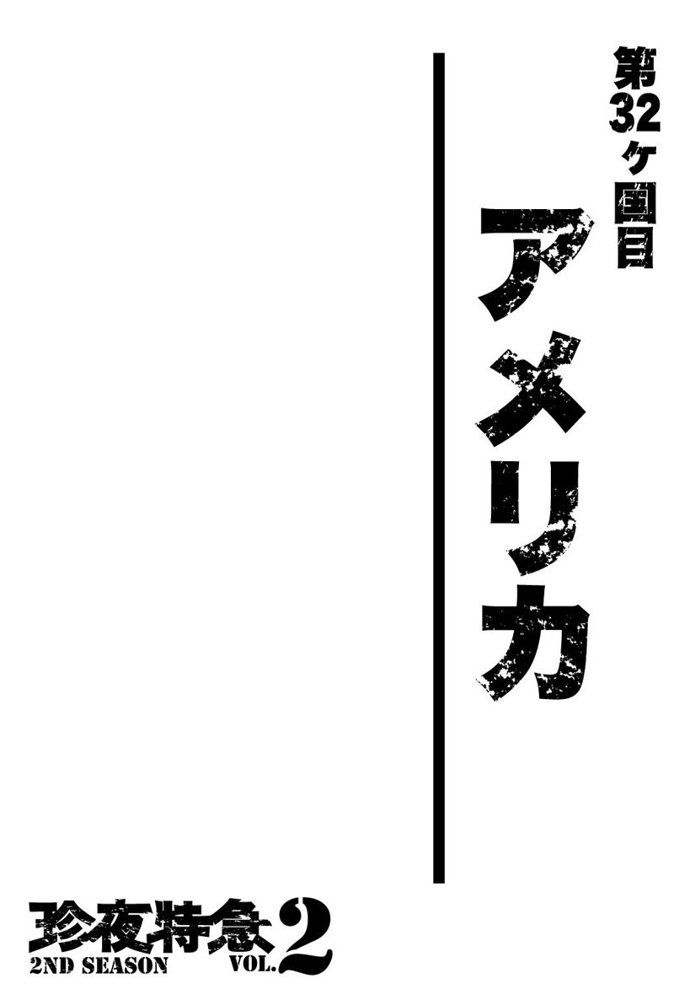
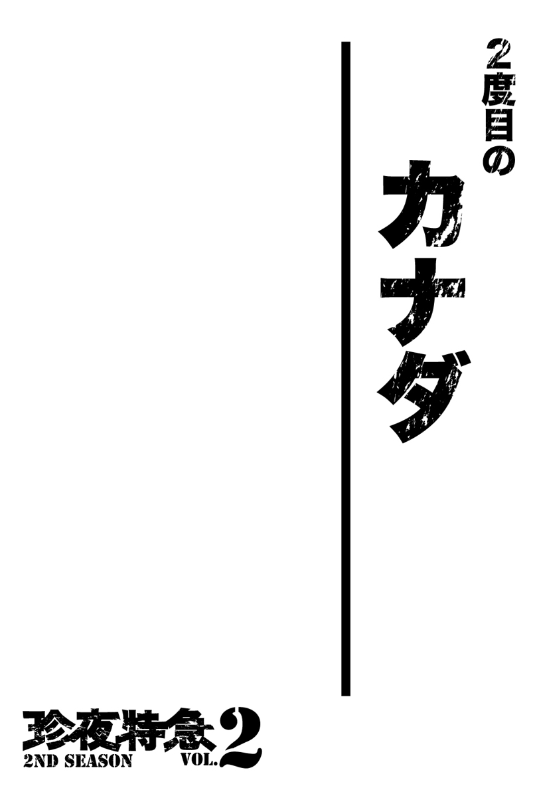
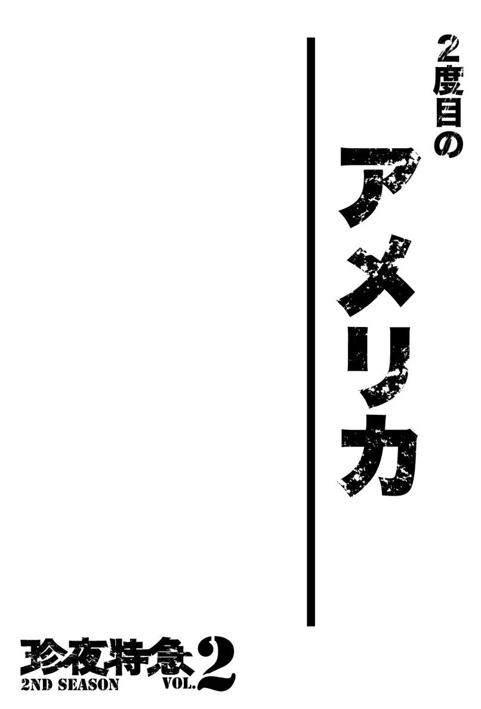

| 珍夜特急 2nd season 2―アラスカ・カナダ・アメリカ― | |
| クロサワ コウタロウ | |
| Kurosawa Lettering (2013) | |

※本書に記載されている料金は２００２年当時のものです。

逡巡と決断
６月も終わりに近づき、お陰で極寒の大地アラスカと言えども大分暖かくなってきたような気がする。しかしながら依然として夜中には、マイナスに達する冷気がノーライトキャンプ場に張った私たちのテントを容赦なく襲った。おそらくこの地には寝苦しい夏の夜など無縁の存在なのだろう。
ノーライトキャンプ場は、キャンプ場とは言えフェバンクスの町中に存在するためか、そこまで蚊も多くない場所だった。お陰で山中の野営地とは異なり、朝夕好きな時間に野外で調理を行える。この時の私やノッチ、ラルフにとってそれは何ものにもかえ難い幸せだった。
この場所にたどり着いた日に決めた通り、翌日から私たちはそれぞれが自身に課した仕事を片づけるため、各自別行動をとっていた。
私がこの地で行わなければならない仕事は、大きく分けて２つあった。
ひとつは愛機ＸＬ６００Ｒファラオのフロントフォークのオーバーホールだ。恰好をつけるためにフォークブーツを外してしまうという愚行のせいで、完全な無防備となっていたファラオのフロントフォークは、デンプスターハイウェイの往復１５００キロに及ぶグラバル（未舗装道路）の石でダメージを受け、封入されているオイルがダダ漏れするという状態に陥っていた。
とにかくこれを早急に何とかしなくてはならない。
早速フェアバンクスをノーヘルで走り回って正規のホンダショップを見つけた私は、そこのメカニックに私のファラオを見せた。ここまでわかりやすい状態だと、下手な英語でいちいち説明するよりも愛機を見せる方が早い。
すぐに事情を察してくれたメカニックは、ダメージを受けている部品の在庫を確認するために事務所に引き返したのだが、しばらくして戻ってきた彼から私は残念な知らせを聞くことになる。
「ないなあ。やっぱりここまで古いタイプのＸＬだと、ウチにはブーツもオイルシールキットも在庫がないよ。どうしてもってことなら注文になるけど、届くまで１週間はかかるな」
「そうですか......わかりました。ちょっと考えさせてください」
私はその場で即断せず、そのままキャンプ場に引き返した。
フォークのオーバーホールはいずれにしても何処かでしなければならなかったが、部品の到着までに１週間もかかるとなると正直待つのは厳しい。
私たちは既に、この２日後にアラスカの最北端を目指す旅に出発することを決めている。部品の到着を１週間も待つというのは、すなわちそのパーティー全体の予定を遅延させることにほかならなかった。その原因が私の愛機にあるなど、心苦しいにもほどがある。
アラスカの暖かい時期は長くない。
その後さらにアラスカを西進して、州都であるアンカレッジを目指すことになっている私たちにとって、時間はギリギリでこそないものの、それでも掃いて捨てるほどあるという訳でもなかった。
私ひとりの都合でいつまでもここに滞在する訳にはいかない。
私はバーガーキングで９００円近くもするセットを食べながら、ひとり何とも上手く運ばない物事に対して苛立っていた。
恐ろしく高いバーガーで腹を満たしたあと、私はフォークに関してはとりあえず置いておいて、次なる仕事に取り掛かることにした。
それはこの旅を始めてからずっと懸念事項になっていた――自賠責保険の加入に関しての調査である。
この保険に未加入であるばかりに、私はパトカーや警察官を見る度に恐怖しなくてはならず、それは精神衛生上甚だよろしくなかった。
地政学的に見ても、アメリカで加入した保険がカナダでも通用する可能性は高い。そして短く見積もってもここアラスカを含む北米大陸には、あと２～３ヶ月は滞在することになるだろう。
せめてその間だけでも自賠責保険に加入できれば、少なくても北米大陸は胸を張って旅を続けられるのである。
一先ずダウンタウンのインフォメーションセンターに寄った私は、その足で教えてもらった保険事務所に向かった。
メインストリートに面した事務所で、私は担当者の女性にできるだけわかりやすく事情を説明した。
「なるほどね。あなたの事情はわかったわ。最初に言っておくと、この国で私たちが提供できる自賠責保険は最低でも１年以上の期間のものよ。３ヶ月なんて短期間のものはないわ」
「そうですか......」
「でも例えばね。もしあなたが１年間の自賠責保険に入ったとして、３ヶ月でこの国から出てしまった場合、残り８ヶ月分の保険料に関しては返却することもできるの」
「......そ、そうなんですか？ ち、ちなみに１年間の保険料っていくらくらいになりますかね」
「ちょっと待ってね。計算するから。あなたの場合だと――そうね。６３８ドルってところね」
「６３８ドル......」
日本円にして約７万円ってところか――。
「それとね。これはそもそもの前提なんだけど、あなたはこの国でレジストレーションを持っているの？」
「レ、レジストレーションって――住所って意味ですか？」
「ええ」
「い、いや。俺、言いましたよね？ 旅をしているって。持っているはずないじゃないですか」
「誰かの家にホームステイしているとか、友人がこの国にいるとか......とにかくあなたがこの国にいる間、あなたの居住地になり得る場所であればいいのだけれど」
「な、ないですね」
「......ミスタークロサワ。これは重要なことなんだけど、つまり......ここでは国内にレジストレーションを持っていないと自賠責保険には入れないのよ」
「ええ？」
そんな馬鹿な。確かに私は外国人だが、ヨーロッパの旅をしていた時だってドイツで欧州全土に有効な自賠責保険に入れている。
その時はノッチに案内してもらったのだが、レジストレーション云々の話は一切していない。そもそもそんな条件が必要ならば、外国人の旅人が北米で自賠責保険に加入すること自体、特殊な人間を除いて不可能ではないか。
私は彼女にこの不条理に対する説明を求めたが、レジストレーションがない以上どうすることもできないという一点張りで終わった。
多少憤った私は、その後もさらに２軒ほどの保険屋を訪ねたが、どちらも答えは最初の１軒と全く同じだった。
何のことはない。結局アメリカにコネを持たない外国人は自賠責に入れないのだ。これでもポリスは私から保険未加入に対する罰金を徴収するのだろうか。
――今度警察に捕まって無保険がバレたら、その時は逆にどうしたらこの国で自賠責に加入できるのか問い詰めてやる。
この町でしなければならない作業が結局どれも叶わなかった私は、思わずまだ見ぬ何の罪もないポリスに腹を立ててしまった。
＊
「――そうか。そりゃあ確かに理不尽なルールだよな。実際」
ノーライトキャンプ場に戻った私は、サイトに設置されている木製のテーブルで夕食をとりながら、ノッチやラルフに本日の成果を報告していた。
ノッチは愛機ＤＲ６５０の整備を粗方終えていて、ラルフの方も新しいタイヤを入手していた。何の成果もないのはどうやら私だけらしい。
「それで......どうするんだ、コータロー？ フロントフォークのシールキットは......さすがに俺も......予備を持っていなくてな」
「いや。ありがとうラルフ。とりあえず保険に関しては、どの道俺には無縁のものらしいからこのまま放っておくしかないが、フロントフォークのシールキットに関しては正直悩んでいるところなんだ」
「コータロー。もし何だったらシールキットが届くまでここで待ってもいいぞ。――なあラルフ」
「ああ......俺は構わない......」
「いやノッチ、それはいいよ。俺の都合で皆に迷惑をかける訳にはいかない。安いとは言え無駄にキャンプ料金を払うのも馬鹿らしいし」
「そうか......」
「あのさ、ノッチ。ひと晩考えさせてくれないかな。確か予定では出発は明後日だったよな？」
「ああ。その予定だ」
「それじゃあ俺、今日は疲れたから少し早めに寝るとするよ」
「わかった。おい......コータロー」
「何だい？ ノッチ」
「まあさ、そう悪いことばかりが続くはずもないさ」
「そうだな。ありがとうノッチ。――それじゃあラルフも......おやすみ」
私はこうしてひとり早めにテントに潜り込んだ。
確かに今日は全くついていない１日だった。
パーツは手に入らず、自賠責も加入が不可能だという事実が発覚しただけだった。
オイルシールキットの到着を待つため、ここにもう１週間滞在することを私が選択しなかった以上、基本的にパーティーは明後日にはここを出て、アラスカ最北端を目指すためにダルトンハイウェイに向かうのだ。
ダルトンハイウェイは、先日走破したカナダのデンプスターハイウェイと双璧をなす北米の有名な悪路だ。片道７５０キロを超えるグラバルが北極圏まで続く。
最北端はデッドホースというポイントで、デンプスターハイウェイの北端だった町イヌビクと異なり、こちらは自治体の体すらなしていないと聞いている。ガソリンや食料の補給くらいはできるだろうが、宿泊施設などについては存在すら疑わしい。
この点を加味すれば、ダルトンハイウェイはデンプスターよりもちょっと条件が厳しいことになる。
そんな道に、私はデンプスターによって（あながちそのせいだけとも言えないが）ダメージを受けた愛機のままで、挑戦しなければならないのだ。
この時私は悩んでいた。
何故なら私にはこの時、実のところもうひとつの選択肢があったからである。そのもうひとつの選択肢とは、
「一度パーティーから離れてダルトンハイウェイには行かない」
というものだった。
もともと私はアラスカに入る前から、再び長いグラバルを走ってデッドホースに向かうことに消極的だった。
もちろんそれは私がグラバルを苦手としていたからだが、ほかにもカナダで行ったものと似たような冒険を再び敢行する点に何となく二番煎じ感があったのと、とにかく――これは非常に論理的ではない理由なのだが――この旅自体に何とも言えない嫌な予感がしていたのである。
私は全く信心深い方ではないのだが、何と言うか不吉な予感という奴を稀に感じることがあって、実際それが的中するケースもない訳ではなかった。
それにアラスカ第二の都市であるフェアバンクスなら、確実とは言わないまでも、かなり高い確率で入手できると思っていたシールキットすらすぐ手には入らないというのも、何となく何かが私をデッドホースに行かせまいとしているように思えてならない。怪しい雑誌の読みすぎだろうか。
ノッチとラルフは完全にダルトンハイウェイを楽しみにしているので、今さら私がデッドホース行きに反対しても納得できないだろうし、私にしてみてもその理由を上手く説明できる自信はなかった。
となれば私ひとりがここに残るか、あるいはもっとパーツの入手しやすい町まで別行動をとるというのも、選択肢としてはあり得るのではないかと考え始めていたのである。
パーティー全体の予定を遅らせてでも、ここにもう１週間とどまってもいいというノッチからの申し出を断ったのも、実はこうした考えが頭の片隅にこびり付いていたからだった。
そもそも今回の旅では、どういう訳か最初から愛機の不調が続いている。
この際、予感などという怪しいものは置いておいたとしても、こうした体たらくの全ては、前回の旅と違い、最初からノッチやラルフといったパートナーがいる点に起因しているような気がしないでもない。無意識のうちに彼らをアテにしてしまい、その結果生まれた慢心がこのような状況を作り出しているように思えてならないのだ。
――大体愛機のメンテナンスに関しても、何処かでノッチに助けてもらえると思って油断していたのではないか。
そもそもシールキットが手に入ったとしても、私はそれをひとりで交換した経験がない。つまりこれすらも、ノッチに手伝ってもらうことを前提にしているのである。
――パーツに関してもたまたまラルフが同じファラオで、しかも多めにスペアパーツを持っていると知っているから、何とかなると考えているのではないか。
ラルフに予備のストーンガードをもらわなければ、私のファラオのヘッドライトはデンプスターハイウェイの石で間違いなく割られていただろう。
もしこれが単独の旅だったとしても、果たして私はこんなにも杜撰な状態で旅を続けていただろうか。
――つまり私は彼らに甘えているのだ。
様々な問題が未解決のまま頭の中を巡っていたが、唯一この点に関してだけは、私の中にいる複数人の評議委員が満場一致で結論づけていた。
自分の旅をひとりでできていない点について、私はこの上なく不快を感じていたし、とにかくそれだけは許されないことだった。
ノーライトキャンプ場の夜はその時間に反してまだうっすらと明るかったが、私はノッチやラルフが無言でテントに入っていく音を聞いて、今がそれなりの深夜だと知った。
それでも私は各問題の結論を出すため、もうしばらく寝袋の中で考えることにした。
ダルトンハイウェイでの告白
翌朝、私は早くから昨日訪れたホンダショップに向かい、シールキットとフォークブーツを注文していた。
そう。昨晩色々と考えた挙げ句、私は２つの決断を下していたのである。
そのひとつ目が、ここフェアバンクスでフロントフォーク周りの問題を全て解決することだった。どの道何処かではやらなければならない作業ではあるし、パーツが届くまでの１週間という時間すら、私は退屈しないで済む方法を知っていたからである。
果たしてその方法とは、予定通りダルトンハイウェイを走り、デッドホースを目指すというものだった。
つまり散々悩んだ結果、結局私はノッチやラルフと共にアラスカの最北端に向かうことにしたのである。
カナダでのイヌビクまでの旅を考えれば、おそらくデッドホースまでの往復にも同様に５～６日はかかるだろう。それはつまり今日ここでシールキットを注文しておけば、デッドホースから帰ってきた時には晴れてそれが届いていることを意味する。となれば往復１５００キロのグラバルを走り終えてここフェアバンクスに戻ってきたあと、行う予定になっているメンテナンスの際に交換できるのだ。
確かにフロントフォークのオイルがほとんど抜けている現状のままで、ダルトンハイウェイに挑まなくてはならない点には不安があったが、それでもエンジンのトラブルでない以上、運転さえ気をつければ何とかならないこともないだろうと考えたのである。
２つ目の決断があってこそのこの決定だったが、そちらについては後述することをお許し願いたい。
とにかくデッドホース行きを決めた私は気持ちを完全に切り替えると、その日は悪路への再挑戦に向け、再装備のための買い物に勤しんだ。主な目的は足りていないキャンプ用品や工具類の補充である。ホームセンターを回ってそれらを無事完了した私は、最後に食料品を買い溜めしておこうと、そのままファラオでキャンプ場の近くにあるスーパーに向かった。
買い物を終えた私が店から出ると、何やら駐車場に停めてあったファラオのところに、怪しげな若い白人の男が突っ立っていた。
そう言えば今回の旅は前回と違い、現地の人間が私たちの愛機に興味を示すことがほとんどなかった。お陰でそのあたりの警戒心が薄れてしまっていたのかもしれない。
そんな不安を知ってか知らずか、私が慌ててファラオのもとに戻るとその男は陽気に話しかけてきた。
「よお。これ、あんたのバイクか？」
「あ、ああ。......そうだが」
「ははは。まあそう警戒すんなって。何もいじってないからさ。ところでこのナンバーは何だよ？ あんたは何処から来たんだ？」
それほど有害な人物にも見えなかったので、私は即座に警戒を解くとここまでの経緯をかいつまんで説明した。
「す、すげえなあ......ってことはあんた、これでバンクーバーから来たのか？ それでこれからはええと......南米まで行くって？ やべえ。マジクールだぜ」
「そ、そうか？」
ちょっとヒップホップ系の彼は、大袈裟な動作で感動を表現している。
「ああ。超クールだ。なあ、そんな話を聞いちまったら俺、あんたにあるものをプレゼントしなきゃならないぜ。ああ、そうだ。俺はそれをあんたに渡さなきゃなんねえ」
「はあ？」
「あんたにさ。アラスカのナンバープレートを持っていってほしいのさ」
「ナンバープレート？ アラスカの車に付いている奴か？」
「そうそう！ このアラスカに来たって証にな」
「く、くれるんならもらうけど、大体あげてもいいナンバープレートなんて、そんなものを持っているのか？」
「イエス！ あんたは何も心配しなくていいぜ。ちょっと待っててくれよな。今手に入れてくるから」
男は言い終わるなり早速何処かへと走っていった。
アメリカのナンバープレートは州ごとに独自のデザインが施されていて、現地の人間曰く、それを見ればすぐにどの州の車かわかるらしい。しかしそれにしてもナンバーをくれるというのは、一体どういうつもりなのだろうか。
私の一服が終わらないうちに、男は何処からともなく小走りで帰ってきた。息を切らせながら手には確かに板状のものを持っている。
「はあ、はあ、はあ......よお兄弟！ 待たせたな。はあ、はあ、はあ。いやあ......なかなかいいのが見つからなくてな」
「おい。いいのが見つからないって......そりゃ一体どういう意味――」
「ノープロブレム！ あんたは心配しなくていいぜ。しかし済まんな。やっぱりナンバーは無理だったぜ。だからかわりにこいつを持ってきた」
男はそう言うと、手にしていた板状のものを私に寄越した。それはシボレーのエンブレムで、確かにロゴの下には「Alaska」と書かれている。よく車のフロントグリルに取り付けられている――あのプラスチック製の板だ。
「とにかくこれにもアラスカって書いてあるからな。記念に持っていってくれよ」
「おい......あんた、これを一体何処から――」
「ノープロブレム！ あんたは心配しなくていいって言ったろ。とにかくこいつと一緒に南米まで行ってくれ。お前の旅の無事を祈ってるぜ。それじゃあな！」
男は息を整える間も惜しんで、そのまま小走りにまた何処かへと消えてしまった。
おそらくこのエンブレムが、何処ぞの車から奪われたものであろうことは容易に想像できたが、それでも受け取ってしまった以上、このままうろうろしていれば私が下手人に成り下がってしまう可能性がある。私は無用なトラブルに巻き込まれないよう可及的速やかにその場を離れた。
それにしてもこれは、彼なりの異邦人に対する歓迎だったのだろうか。いずれにしても私の見立てに反して、彼は有害な男だったようだ。
テントに戻った私は仕方なくこのエンブレムを、サイドカウルを外しているせいでむき出しになっているファラオのバッテリーケースに、ボルトで取り付けた。
＊
翌早朝。朝食を済ませてから荷物のパッキングを終えた私とノッチ、そしてラルフは、久しぶりに晴れた空の下、いよいよアラスカ最大の冒険であるダルトンハイウェイに向けて、それぞれの愛機をスタートさせた。
フェアバンクスを出れば１２０キロほどでグラバルに入り、そこからがダルトンハイウェイとなる。
カナダのデンプスターハイウェイと似たようなものと考えていたダルトンハイウェイは、山中を通っているせいでずっと起伏に富んでおり、デンプスターに比べてコーナーが多く、また道幅もずっと狭かった。
おまけに路面の凸凹も深く、グラバルとは言え、それなりに整地されていたデンプスターに比べてよりダートに近い代物だった点は、少なからず私たちを興奮させた。こうなるとノッチたちの言う通り、デンプスターで私がグラバル走行の予行練習を行えた意味は大きい。私は不整地故に発生するスリップよりも、凸凹の振動を不快に思いながらアクセルを開けた。
とは言え、巡航速度を最低でも80キロ台にキープしなければ、予定通りデッドホースには着けなくなる。あまりのろのろと走る訳にもいかない。
それでも天気がよかったために順調に距離を稼いだ私たちは、道中に見つけた１軒のカフェで休憩することにした。少なくても今のところ、私のファラオもフロントフォーク以外特に問題はなさそうだ。
私自身の体力もそこまで失われてはいない。
「いやあ。デンプスターとは大分違うな」
「その通りだな......ノッチ。ダルトンの方が......ずっと酷い......」
「どうだ？ コータロー。大丈夫そうか？」
「ああ。何とかな。今さらだけど、デンプスターを走っておいてよかったと心底思うよ」
「ははは。まあそうだな。明日になれば山もなくなって平地を走れるようになるはずだから、走行もちょっとは楽になると思うぜ」
そんなことを話していると、店主が注文したコーヒーを持ってきた。そのため私たちの会話は一瞬途切れる。各自冷えた唇を手に取ったカップにゆっくりと近づけた。
私はその時、今こそが胸に秘めていた２つ目の決断を２人に伝えるチャンスだと直感し、おもむろに口を開いた。
「――なあ、２人とも。聞いてほしいことがあるんだ」
「何だ？」
「どうした......コータロー」
「......実は俺、このダルトンハイウェイを無事走りきってフェアバンクスに戻れたら、一旦２人と別れてひとりでカナダに戻ろうと思っている」
「？」
「え？」
「こんなこと、わざわざ言う必要もないと思うが、２人と一緒に旅するのが嫌になったとか......もちろんそんな理由じゃないんだ」
「な、何でなんだよ。コータロー」
「そうだ......どうして......」
「何と言うか......今回の旅は最初から２人と一緒だっただろ？ それで俺、自分が２人に甘えすぎてるって思うようになったんだ」
「そんな......」
「前の旅に比べてさ。何となく危機感が足りてないって思っちまったんだ。こんなんじゃたとえ南米の南端まで行けたとしても、それって自分の力で縦断したことにはならないんじゃないかって」
「......」
「......」
「それに俺、２人と違ってこの大陸の東側をまだ見てないだろ？ それもちょっともったいない気がしてな。だからとりあえずニューヨークに向かおうと思うんだ。つまりこの大陸の横断だ。そうなると逆方向のアンカレッジに向かう時間が今は惜しいんだ」
「......」
「......」
「もちろんこのままさよならって訳じゃない。――なあ、ノッチ。新しい彼女って......確かメキシコから合流するんだよな？」
「あ、ああ。一応メキシコのカンクーンに９月頃に来るって話になっているが」
「だからさ。９月にノッチの彼女がやってくるカンクーンで、もう一度合流するってのはどうかな......勝手なプランなのは重々承知しているんだが――」
「メキシコか......」
「......コータロー。それはもう決めちまったことか？」
「ああ。ノッチ。済まん。決めたんだ」
「それなら......俺にはもう何も言えないな」
ラルフは黙ったままだった。ノッチも最後の言葉を呟いたあと、しばらく寂しそうな顔のまま窓の外を眺めていた。
お陰で私たちのほかに客のいない喫茶店内は、たちどころに重苦しい雰囲気に包まれてしまう。何とも気まずい状況だが、その原因は何を隠そう私自身が作った訳で、もちろんこうなることも何となく予想はしていたのだが、それでも私はこの件を２人に伝えなくてはならなかった。
そう。この決断こそが、昨晩私がテントの中でひとり考え続けた２つ目の決断だった。
東海岸を見に行きたいというのももちろん嘘ではなかったが、それよりもとにかく、今は一度ひとりになって旅のやり方を見直す必要があると思ったのだ。アラスカをもう少し回る予定の２人には、残念ながら再びこの大陸の東海岸に戻る時間的余裕はない。
それにひとりでなければ経験できない出会いというものが旅には存在する。それもまた別の形の冒険であるのは、基本的にひとりでユーラシアを走った私が一番よく知っていた。
そして何よりも、ユーラシアの旅を終えてからしばらく続けていた自堕落な生活と決別した時のように、今回も一度ここで区切りをつけ、旅を再スタートさせることで、彼らともより対等な関係で旅を続けられるような気がしたのだ。
フェアバンクスでシールキットを注文したのも、その後ひとりになることを考えて、できるだけ早めに愛機の問題点を潰しておきたかったためだ。
このパーティーにおける自身の役割について、この時の私はよくわかっていなかった。つまりパーティーのことを考えてという訳ではなく、完全に自分の我がままに従った決断だ。
それでも私は、それをしなければいつか後悔するような気がしてならなかったのだ。
その後今日の予定をいくつか確認したあと、私たちはカフェを出て再びダルトンハイウェイのグラバルに戻った。
走行中は完全にひとりになる。
私は一応ヘルメットの中で音楽を流していたが、それすら耳に入らずに、果たして今回の決断が本当に正しかったのかどうかを今さら考えていた。
何よりもノッチの寂しそうな顔が、いつまでも私の脳裏から離れなかったのだ。ラルフにしてみてもいつにも増して口数が減ってしまっていた。
――２人をそんな気分にさせてまで、私は今回の決断を下す必要があったのだろうか。
私は遠い未来の後悔をしないために下した決断が、今現在の後悔を生んでいる事実にこの時初めて気づいた。
日はまだ高かったので、その日は殺伐とした溶岩地帯を抜け、さらに少し走った先でテントを張った。
ノッチやラルフも走行中色々と考えていたのか、テントを張る時には普段の元気を取り戻しており、３人はいつも通り蚊の大群に文句を垂れながら素早く夕食を済ませると、各々がテントに潜り込んだ。
タンブリング・ダウン
朝方まで降り続けた雨は、私に新たなテントの購入を決意させた。
前回の旅から使っている今のツーリングテントは、小さすぎる上にフライシートの張力が弱く、長い間雨に打たれるとたゆんできてその役割を完全に果たさなくなる。結果フライシートはインナーに張りつき、そこから内部に雨が侵入してくるのだが、そうなると言うまでもなく中は水浸しとなり、私は横になるのはおろか座ることさえできなくなるのだ。
ひと晩中じくじくと濡れ続けたせいか腹の調子が悪く、私は排泄するために茂みに分け入ったのだが、しゃがんだ直後に今度は大量の蚊やブラックフライに襲われる。踏んだり蹴ったりとはまさにこのことだ。
この辺りにはブラックフライと呼ばれる蝿が生息しているのだが、彼らの下品なところは普通の蝿と違い、人間の皮膚に噛みつく点である。噛まれたところは傷となり、蚊に刺された場合のように痒くはならないがかさぶたができる。いずれにしてもこの蝿どもは蚊と同様、私たち人類を否応なく苛立たせた。
気を取り直して野営地を出発したものの、昨日の道程が嘘のようにダルトンハイウェイの状態は目に見えて悪くなっており、雨のせいでぬかるんだグラバルが容赦なく愛機の足に絡みつく。乾いている場所があるかと思えばそこは完全な砂地だったりして、泥道と同じく私たちの走行を阻害した。
何度も転倒の危機を乗り越えながらそれでも前進を続けた私たちは、夕方になる前に遂に森林限界を越えた。
デンプスターやスカンジナビアでも突破したこの森林限界とは、北極圏近くに存在する樹木の生息限界緯度のことで、これ以北には苔や背の低い草類しか生えなくなるらしい。
そのため、それまではそれなりに森や林に囲まれていた景色も完全に見渡す限りの荒野となり、常に発生し続ける霧と相まって私たちの不安を余計に煽った。
この見渡す限り何もない景色という奴は、こと私にとっては何故か無性に恐怖を誘うものであり、もっとも苦手な光景に違いなかった。
この日リーダーだった私は、デンプスターの時の轍を踏まないよう早い段階から野営地を探し始めていたのだが、それでもタイミングは既に逸していたようで、前回のラルフ同様ハイウェイから下りれる場所すら見つけ出せずにいた。
さらに悪いことに霧が一層濃くなっており、灰色一色になってしまった視界のせいで、数メートル先の環境を確認することすらままならない。
焦りのために冷静な判断ができなくなった私は、遂に痺れを切らしてハイウェイを下りる決断を下す。本当であれば下りる先が平坦な土の大地で、かつ茂みや岩で陰になっていればなおよかったのだが、この際そんな贅沢は言っていられない。私の左手の眼下には、多少起伏はあるものの芝らしきもので覆われた大地が広がっていた。平地さえ見つけられればそこまで悪い環境ではないだろう。
こうして私が土手のようになっているハイウェイから岩を避けつつ慎重に下り、何とか眼前に広がる緑色の大地に突入した時だった。
「うわっ！」
私が思わず情けない悲鳴を上げてしまったのと同時に、愛機ファラオの前輪は想像していた草原とは全く異なる硬い何かに乗り上げた。私はそのまま乗り越えようと試みたが、どういう訳かエンジン下からはガリガリと音が聞こえるだけで、ファラオは前進するどころか完全に停止してしまった。慌てた私はクラッチレバーを握ってしまう。
――まずい！ クラッチを切ってしまった！ 倒れる！
私はとにかく必死に左足を突き出して横転を阻止しようと試みたが、何故か足は宙を蹴るばかりで一向に接地しない。お陰で私は愛機と共に横転――というか転げ落ちた。
この間およそ３～４秒といったところか。
私はゴツゴツした硬い地面に叩きつけられたが、寒さのために厚着をしていたお陰か、動けなくなるほどのダメージは負っていないようだった。それよりも何よりも、ほとんど逆さまに落ちた愛機ファラオを起こすために私は急いで立ち上がった。
「おおい！ コータロー！ 大丈夫かあ！」
後ろの方からノッチの声が聞こえ、何とか平坦な場所を見つけて愛機を停車させたらしい彼が、ラルフと共に走ってくる。
「あ、ああ！ 俺は何とか大丈夫そうだ！ だけど俺のバイクが――」
「待ってろ！ 今俺たちもそっちに行く！」
私とファラオは水平に倒れたのではなく50センチほど高くなった場所から落下していたようで、無残にも相棒は完全にタンクの方を下にして横たわっていたため、到底私ひとりの力では起こせなかった。２人のパートナーの存在に心の底から感謝しながら、私は何とか愛機を起こしてスタンドに立てかける。
少し落ち着いた私が辺りを改めて確認してみると、私が草原地帯だと思っていたそこは大きな岩がいくつも転がる完全な瓦礫地帯で、草に見えたのは岩の上に生えた苔だった。
つまり私は大きな岩に乗り上げてしまい、ファラオの前輪と後輪の間に岩が挟まってしまったために動けなくなり、そのまま落ちたのである。
幸いファラオのダメージは多少ステアリングバーが歪んでいただけで、それもこのバイクの場合、バーのはまっている部分がラバーマウントになっているために、力を込めて捻ればおおよそ元の状態にまでは戻せた。
「――助かったよ、ノッチ、ラルフ。本当にありがとう」
「......身体の方は......大丈夫そうか？」
「ああ。出血も見当たらないし、今のところ問題なさそうだ。明日にはきっと色んなところが痣になっているんだろうが」
「とにかくお前もバイクも無事でよかったぜ。しかし酷い場所だな、ここは。大体何なんだよ、この岩や苔は」
「俺も当初、ここを草原だと思ったんだ。しかし来てみればこの状態さ。どうする？ もう一度ハイウェイに戻るか？」
「いや。俺たちのバイクも、今停めてある場所から独力で転回させるのは無理そうだ。岩だらけだからな。こうなったら今晩はこのままここで明かそう」
「俺も......それがいいと思う......」
「そうだな。バイクは明日の朝、３人で協力して１台ずつハイウェイに引っ張り上げるとするか。うん。それじゃあ今日はここでテントを張ろう」
「しかしそれにしても......寒くなってきたな」
私のファラオを引き起こすために、私だけでなくノッチもラルフも全身泥まみれになっていた。そのせいでテントを張って中に荷物を運び込むにも、いつも以上に時間がかかってしまう。
とんだ締めくくりだったが、不幸中の幸いと言うべきかこの場所はすぐ極寒になり、蚊やブラックフライの襲来は受けずに済んだ。
お世辞にも快適な環境とは言い難いが、それでも奴らがいないことは私たちにとってせめてもの慰めだった。
＊
それなりの覚悟を持って就寝したにもかかわらず、夜中がそこまで寒くならなかったのは北の大地の粋な計らいだろうか。否、疲れきっていたために気づかなかっただけかもしれない。
３人で朝食を済ませたあと、私は改めて愛機の具合を点検した。
昨夕の騒動で泥だらけになってしまったファラオは、昨日のうちに調整し直したステアリングバー以外は特に目立った外傷もなかったが、それでもボックスの鉄枠や各保安部品を締めつけているボルトの数本がガタガタに緩んでいた。これは転倒というよりも、おそらくここまでのグラバルによる振動のせいだろう。いかに激しい振動に長時間さらされていたかが窺える。
３人総出で各自のバイクをどうにかまともに走れそうなところまで引っ張り出していると、ハイウェイの上を数台の大型キャタピラーが走っていった。あれだけ巨大な車輌が通ったあとなら、ぬかるんでいた道も踏み固められているはずで、これで少しはマシな走りができそうだ。
ようやくハイウェイに戻ってほっとしたのも束の間、数十キロと走らないうちに私のファラオに新たな問題が発生した。しかしこれについては私も半ば覚悟していたため、そこまで慌てることはなかった。
実のところ私は今回のダルトンハイウェイで愛機の航続距離を測るため、ここまでの道中も給油をパスしていた。つまりこの時ファラオに起きた問題とは、単なるガス欠だったのである。この試みはもちろんノッチやラルフにも話してあり、路肩に愛機を寄せた私は予定通りノッチからガソリンを分けてもらう。
トリップメーターはちょうど７５０キロとなっていた。
その後は特にトラブルもなく、私たちは無事北米最北端の地デッドホースにたどり着いた。
デッドホースは石油関連企業のバラック工場のみが存在する完全な北の果てだった。どんよりと曇った空と相まって、ある意味その光景は私たちの想像する最果ての地そのものである。人影はほとんどなく、人が入れそうな建物も、おそらく業者が出張の際に利用するのであろうホテルが２つほどあるだけだ。
私たちは一先ずこのうちのひとつに入り、冷え切った身体を温めるべくロビーのラウンジでコーヒーを頼んだ。
実のところ私は、このデッドホースに来ることを決めてから、自らにひとつのミッションを課していた。それは北極海をこの目に焼きつけるというものである。
私にとってデッドホースは人生で３度目に訪れる北極圏内のポイントとなる。にもかかわらず、私はこれまで北極海をきちんと見たことが一度もなかったのだ。
最初のノールカップでは濃い霧と雨のせいで、海はおろか辺りの景色さえ見ることは叶わなかったし、先日到達したイヌビクは直接北極海に面していなかった。
だから私は今回このデッドホースで、何としてでも北極海を見ておきたかったのである。
コーヒーを飲み終えた私たちはそのまま北岸に向かって走り、そこで暮れかけた夕日に照らされるあたかも水溜まりのような北極海を目にすることができた。
この辺りはどうやら冬場の雪や氷のせいで陸地が侵食されるらしく、まるで干潟のように浅い水辺が何処までも続いているように見えた。
あまり爽快な景観ではなかったが、ともあれこれで北極海は見た。となればいつまでもこんな寂しいところに佇んでいても仕方がない。
私たちは底をつきかけた食料とガソリンを補給するべく、そのままデッドホースのセントラルと思しきホテルの周りを低速で徘徊した。
しかしガソリンスタンドはともかく、商業施設と呼べそうな施設はほかに見当たらず、パンはおろか缶詰さえも手に入らなかった。否、たとえそんなものがあったとしても、おそらく私たちには何も買えなかったに違いない。ホテルの売店で見かけたポテチすら、６ドルもする始末だったのだから。
結局私たちは水とガソリンだけを補充すると、再び来た道を戻ることにした。
もはや私のボックスに残っている食料はパスタ半袋とコンソメ、トマトペースト、そして３欠片のニンニクのみである。フェアバンクスまでは最低でもあと２日はかかるはずで、こうなるとダルトンハイウェイに２箇所だけ存在する補給ポイントで、高いバーガーを買わざるを得ない。
昨夕私が失態を演じた地点まで戻ってしまうと再び野営地探しが困難になるため、私たちはデッドホースからいくらも戻らない川沿いにテントを張ることにした。
何の幸運か蚊のほとんどいない良地を発見できた私たちは、いっそのことここで残っている全ての食料を使い果たすことにして、久しぶりにゆっくりと夕食の準備を行った。
こうしてアメリカ大陸における私たちの北上の旅は終わりを告げた。あとはひたすら南米の最南端まで南下を続ける日々となるはずだ。
そして何よりもフェアバンクスに戻れば、私は一旦パーティーを離れる。つまりここ北米では、もうノッチやラルフと共に走ることもないのだ。
デンプスターハイウェイ以上の悪路――ダルトンハイウェイを走りきった疲労が込み上げてくる中、私はひとり今後の旅に対して期待と不安がないまぜになった気持ちを抱いたまま、酒がないためにコーヒーで乾杯するノッチとラルフをただ何となく眺めていた。
しかしダルトンハイウェイの本当の恐ろしさを体験するのはまさにこれからだということに、この時の私はまだ微塵も気づいていなかった。
災厄の代償
デッドホースを目前にしての私の転倒で、私たちがこのダルトンハイウェイにおける厄を落としきったと思ったのは、どうやら完全な早とちりだったらしい。
この日はまさにこの旅始まって以来の最悪の日となるのだが、とりあえず順を追って説明させていただく。
まず朝起きると、例によって夜中に降り出した雨のせいでテントの中は水浸しになっていた。このテントはもう完全に駄目らしい。
似たようなテントに居住しているノッチとラルフも、当然似たような状況に陥っており、雨がやむのを待ってから私たちはまず、自分たちの装備をガソリンバーナーで乾かすことから始めなくてはならなかった。
蚊のいない貴重な朝の時間を、このようにくつろぎではなく作業で無駄にしてしまったあと、それでも私たちは何とかパッキングを終え、一路フェアバンクスに向けて各機をスタートさせる。
昨夜の雨のせいで再びダルトンハイウェイはぬかるみ出しており、私たちは疲れきった身体に鞭を打ち、普段以上に集中して運転することを余儀なくされた。
ダルトンハイウェイでもこの辺りの区画は、かつてのデンプスターハイウェイと同様に土や砂利を盛って造られていて、私たちは荒野から５メートルほど高くなった土手の上を走っていた。
来た道を折り返すというのは、とどのつまり同じ道をそのまま走ることであり、ライダーにとってはどうしても緊張感が失われてしまう。
それはこの日リーダーを務めるノッチとて例外ではなく、彼が退屈を紛らわすためにきょろきょろしながら走っているのを、二番手の私は後ろから何となく眺めていた。
事件はそんな時に起きた。
ガンッ！
異様な衝撃音を聞きつけた私は、無意識のうちに視線を前に戻した。
すると10メートルほど先を走っていたノッチのＤＲが、まるで飛び跳ねたように１回宙に浮いたあと、そのまま右側の斜面をよれよれになりながら下り始めたのである。
――な、何だ？
私は慌てて後方のラルフにハンドサインを送ると、そのまま自機を停車できそうな安定した場所を探す。
その間にもノッチを乗せたＤＲは、暴れ馬のように大小様々な石につまずきながら下り続け、そのまま荒野に鎮座しているでかい岩に激突してやっと止まった。ノッチはその衝撃で前方に投げ出され、ＤＲは一度後輪を浮かせたあとゆっくり横倒しになった。
「ノッチー！」
私は叫びながらファラオから降りると、そのまま岩を避けつつ斜面を下りてノッチのもとへと走る。
――ハイウェイ上の石につまずいたんだ！ くそっ、何てこった！
飛ばされたノッチは大の字になったままピクリとも動かない。
「おい！ ノッチ！ 大丈夫か！ おい！」
ノッチを抱き起こそうとする私を、後ろから走ってきたラルフが止める。
「駄目だ！ コータロー！ 動かしては駄目だ......」
ラルフはそう言うと、持ってきていた寝袋をそっとノッチの頭の下に差し込む。この時になってノッチはようやくモゾモゾと動き出した。
「ノッチ！」
「......うう、ああ......俺の......俺のバイクは......」
「バイクならとりあえずここにある！ それよりもお前の方はどうなんだ！ 何処が痛い？」
「ああ......ぜ、全身が痛くて......何処が一番かもわからない......メットを......ヘルメットを取ってくれないか......コータロー」
「わ、わかった。頭は大丈夫なんだな？」
「あ、ああ。多分な......こうして英語も話せているし......」
私は慎重にノッチの頭を持ち上げ、かぶさっていたヘルメットを取った。中からは苦痛に歪んだノッチの顔が現れる。メットをかぶっていたお陰か出血などは見当たらない。
「ああ......大分楽になったよ......俺のＤＲは......どうなった？」
ノッチの重傷という最悪の事態だけは避けられたようだったので、ここでようやく彼のＤＲに注意を向けた私とラルフは、その惨憺たる状態に言葉を失ってしまった。
私とラルフは一先ず２人でＤＲを引き起こして各部をざっとチェックしてみたが、ステアリングは根元から曲がっていたし、サイドのボックスは外れていなかったもののベッコリと凹んでいた。フロントフォークはよじれていたし、どうやら前輪のホイールも岩に激突した衝撃で歪んでいるようだ。フロントに取り付けられていた補助ライトはふっ飛んで割れ、エンジンはガードのお陰でかろうじて無事だったが、ガードの方は完全に曲がってしまっていた。
明らかに大破に近い状態だ。
「......ノッチ。その......かなり酷い状態だ」
「......そうか......」
３人のライダーを重苦しい雰囲気が覆い尽くそうとした刹那――。
何とダルトンハイウェイ上を１台のステーションワゴンが通りかかった。
私は反射的にハイウェイを駆け上がり、大声を出しながら大きく手を振ってそのステーションワゴンを停止させた。
ワゴンの運転手である若い白人男性と、助手席に座っていたその彼女と思しき女性が降りてくる。
「どうしたの？」
「はあ、はあ、はあ。......いや、すいません。私たちはバイクでここを走っていたんですが......１台がここからあそこまで落ちてしまって......」
「ええ？」
「だ、大丈夫か？」
「ええ。幸いライダーの方は特に外傷もなく......ああでも、今は全身打撲で動けない状態なんです」
「そ、それは酷いな」
「あなた方はこれからどちらまで向かう予定ですか？」
「ええ。私たちはこのままフェアバンクスに向かう予定なんだけど」
「よかった！ あのう......そこでお願いなんですが......それなら何とか彼を、車に乗せてフェアバンクスまで連れていってくれないでしょうか。できればその......病院まで」
「それは構わないわ。ねえ？」
「ああ、もちろんだ。ただな。俺たちの車の後ろには荷物が結構入っていて、あんまり快適とは言えないかもしれないが......」
「構いません。ありがとうございます！ ちょっとだけ待っていてください。今彼を連れてきますから」
私はとにかくノッチだけでもフェアバンクスに運んでもらえるとわかって大きく胸を撫で下ろし、嬉々として再び斜面を駆け下りると、状況を２人のドイツ人に説明しに向かった。
いずれにしてもノッチが立ち上がれない以上、これからさらに７００キロ以上もグラバルを走ってフェアバンクスに向かうのはどう考えても不可能だったし、ＤＲにしてみても、応急処置程度で満足に走れる状態になるとはとても思えなかった。
そもそもこのダルトンハイウェイの交通量の少なさは、改めて説明するまでもない。このタイミングで車が通りかかってくれたのはほとんど奇跡に近かった。
ところがである。
「コータロー。お前の判断は嬉しいんだが......俺は......こいつを置いてひとりでフェアバンクスには戻れない」
「はあ？ 何言ってんだよノッチ！」
「そうだ......ノッチ。ここはコータローの判断に......従うべきだ」
「わかってるさ。でもな。俺があの車に乗っちまったら......ＤＲはどうなる？」
「そ、それは......俺たちがここに残るよ。どの道あのステーションワゴンでＤＲは運べない。でもノッチもたまに見ただろ？ このダルトンハイウェイは時々大型のダンプが走っていたじゃないか。あれならＤＲだって簡単に運べる。だからフェアバンクス方面に向かうダンプを止めて、それにＤＲを積んで運んでもらうさ」
「......コータロー。それにしたってお前たちは、いつ来るかもわからないダンプを待ち続けることになるんだぞ。こんな何もないところで......そんなことを俺は頼めない」
確かに私のこの作戦は、あまり現実的とは言えなかった。前述したように私とラルフは既に一切の食料を携帯していなかったし、水にしても果たしていつまでもつかわからなかった。
――だけどノッチ。お前は本当にこの状態で運転できるのか？ そしてあのＤＲが応急処置程度で再び走れるようになるのか？
私がそれを声に出す前に、ノッチの方が先に口を開いた。
「コータロー。済まないが......彼らには丁重に断りを入れてくれないか」
「......」
「頼むよ......」
ノッチにこうまで言われては、私もラルフもそれ以上どうすることもできなかった。
私は仕方なく再び斜面を上がり、ステーションワゴンの彼らに事情を説明した。
「――そう。......彼がそこまで言うなら仕方ないわね」
「済みません。こっちで勝手に止めておいて」
「いいさ。でも本当に大丈夫なんだな？」
「ええ。彼の身体も大分動くようになってきていますし、こうなった以上は私たちで何とかします。あの......本当にありがとうございました」
「あ、ちょっと待って。それならせめてあなたたちにいいものをあげるわ」
運転手の彼女はそう言うと、助手席から何やら缶を取り出してきた。
「はい。クッキー。下にいる彼らにも持っていってあげてね。あなたたちが無事帰還できるよう祈っているわ」
「あ、ありがとう......ございます」
私は缶から数枚のクッキーをもらうと、そのままパートナーたちのもとに駆け下りた。
＊
「コータロー。悪かったな」
ノッチは大分楽になったらしく、身体も起こせるようになっていた。改めて確認したところ、あれだけ激しく放り出されたにもかかわらず、外傷は幸運にも手の擦り傷程度だった。それでも右手の親指は大分痛むようで、まだ動かせる状態ではない。
「いや、いいんだ。ノッチがそう決めたなら。それよりもこうなった以上、これからどうするかを考えなくちゃ」
「コータロー......とにかく......ＤＲを上に運ばなくては」
「ああ、ラルフ。確かにその通りだが......」
そうなのだ。
ノッチが自力でフェアバンクスに戻るためには、とにかくこのＤＲを斜面の上のハイウェイまで引き上げなくてはならない。
しかしこれだけ岩が密集していて、さらには川原の土手ほどに勾配のあるこの斜面を、いくら２人がかりとは言え、重たいＤＲを押して上るのはほとんど不可能だった。
「コータロー......」
「何だい？ ラルフ」
「俺がＤＲを運転して上るか？」
「......できるのか？ ラルフ」
実際選択肢はこれしかなかった。
しかし誠に恥ずかしながら、この危険なライダー役に私が名乗り出ることはどうにもはばかられた。何故ならノッチのＤＲは車高が高い上にサスも硬めにセッティングされていて、パーティーの中で一番背の低い私がまたがっても、つま先すら地面に着けることができなかったからだ。
あまつさえ今のＤＲはまともな状態ではない。付け加えればハイウェイに戻るための斜面もまともな道ではないのだ。一度も足を着けずに上りきれるとは到底思えない。
その点ラルフであれば体重が重たい分車高は沈むし、足を着きながら運転できそうだった。そもそも身長だって私よりはラルフの方が若干高いのだ。
しかしこのラルフの申し出に異論を唱えたのは、何を隠そうノッチ本人だった。
「済まんが......それなら運転はコータローにやってもらいたい」
「ええ？」
ノッチは目線で私を近くまで呼ぶと耳元で囁いた。
「頼む、コータロー。俺はラルフの運転を信用してないんだ。これ以上ＤＲを壊したくない。何とかお前がやってくれないか」
「......」
果たしてどれだけの日本男児が、このように頼まれて断ることができようか。それにラルフの運転技術云々という点については、私も確かに同意せざるを得なかった。
これはラルフに限った話ではないが、一般的な欧米のライダーは得てして低速での運転を苦手とする。
これはおそらく教習所の実習内容に関係すると思うのだが、彼らは高速でぶっ飛ばすことには慣れていても、狭い場所での転回や、速度を落とした状態でマシンをコントロールするのは苦手な場合が多い。
その点日本の――特に大型の教習所ではそこを中心に特訓されるため、一般的なライダーでもそれなりの運転技術を身につけていると言える。
これはラルフに聞いた話だが、以前ドイツの白バイ警官隊が日本の白バイ研修を受けに行ったことがあったらしい。しかし来日した彼らのうち、誰ひとりとしてその研修に合格できた隊員はいなかったというのだ。
白バイについては少し別次元の話になるが、一般的な日本の教習所に関しても、外国の同機関に比べればかなり高いレベルの教習を行っているのは間違いない。後日私がアメリカ人やカナダ人に聞いた教習所は、出発、停止、右折、左折ができれば概ね合格という――恐ろしく羨ましいものだったからだ。ただし日本の教習所の場合、受講料についても他国に類を見ないほど高いという点も付け加えておく。
さておき。こうまでノッチに頼まれた以上、私は日本男児としてその期待に応えなければならない。私はラルフに自分にやらせてほしい旨を伝えたあと、彼にはサポートをお願いすることにした。
私は２人のドイツ人に比べてずっと臆病だったために、逆に運転に関してはこのパーティーで誰よりも慎重だった。
私はまずこのまま斜面を上るという選択は捨て、しばらく周辺地域の調査を行い、斜面がもっともなだらかでかつ障害物のないルートを探した。
そうなると当然走らなければならない距離は増え、ところによっては小川を越えなくてはならなくなったが、それでも急勾配のダートを上るよりは転倒のリスクが少ないと判断したのだ。
さらにはラルフに頼んで、万が一の転倒に備えて後ろから歩いてついてきてもらうことにした。もちろんその程度の速度しか出すつもりはない。
「よし！ ラルフ、それじゃあ行くぜ」
「ああ！ コータロー、ゆっくりとな」
「ゆっくりは任せてくれ！」
全く足着きの悪いＤＲにまたがった私は、何度かのキックでエンジンをかけると、腰を浮かしたまま予定していた迂回ルートを走り出した。
ステアリングとフロントフォークがよじれているせいで全く体勢は安定しなかったが、それでも足を一度も地面に着けることなく、私はＤＲに乗ったままハイウェイに復帰できた。さすがに私もこの時ばかりは、あの佐久自動車教習所の鬼の女教官に感謝せずにはいられなかった。
散乱していたノッチの荷物を持って、遅れて斜面を上がってきた２人と合流したあと、私たちは改めてＤＲの修繕が必要な箇所をチェックした。と言ってもここでできるのはあくまで応急処置だ。
私たちがそんなことをやっていると、やおらデッドホース方面から単車のエンジン音が聞こえてきた。
その音の主である緑色のビッグオフは、ほどなくして私たちの傍まで来るとエンジンを停止する。
「ヤッホー！ 何やってんだよ、あんたら！」
妙なテンションで単車から降りた小柄で小太りなその白人の男は、ヘルメットを取るとそのまま私たちの方に近づいてきた。年齢は私よりも少し上といったところだろうか。
「ああ。実はバイクがここから落ちてしまってね」
「何だって？ 大丈夫かよ！」
「ああ、俺はこの通り何とか無事だが、バイクがこれでな。これから直そうって話をしてたところなんだ」
ノッチが男に簡単に事情を説明する。
「はっはー！ まあ身体が無事で何よりだぜ。実は俺も今日、ここに来る前に一度コケちまってさ。それ以来バイクの調子は最悪だぜ。はははは！」
何がおかしいのか、彼は笑いながら自分の愛機――カワサキＫＬＲ６５０のタンクをポンと叩いた。
「よおよお、修理なら俺も手伝うぜ！ 俺もちゃんと工具を持ってるからな。そりゃあスズキか？ だったら問題ないぜ。俺のもカワサキだから持ってるのはメトリクス工具だしな！ さあさあ、何から始める？」
「そ、そりゃあ助かる。俺はノッチ。ドイツ人だ」
「俺は......ラルフ。同じくドイツから来た」
「俺はコータロー、日本人だ」
「はっはー！ 日本人もいるのか！ 変わった面子だな！ 俺はライアン。ステイツの男さ。よろしくな」
ライアンと名乗った男は私たちと強めの握手を交わすと、そのまま工具を取りにＫＬＲのもとへ戻っていった。
ちなみにアメリカ人は自己紹介をする際、何故か自分のことを「アメリカン」とは言わない。出身州を名乗ったり、ライアンのようにステイツと言う。まあアメリカと言ってしまえばこの大陸全てがそうなのだから、それも当然と言えば当然なのかもしれないが。
こうして私たちはライアンという新しい助っ人を加えて、早速ＤＲの修理に取り掛かった。
ハリケーンの夜
「まあこんなところか――」
大分動けるようになって修理に参加し、油まみれの手で汗を拭いたために顔に黒い筋を付けたノッチは、そう呟くと手にしていたスパナをＤＲのシートの上に置いた。
ほんの３時間ほど前にこのダルトンハイウェイ上から転がり落ちたノッチのＤＲは、私やラルフ、そして新たに加わったライアンの共同作業によって、最低限走れそうな状態にまで復活していた。
一先ずフロント周りの歪みを直し、一応真っ直ぐ走れるよう矯正した程度の修理だったが、フロントホイールやボックスを車体に取り付けるための鉄枠の歪みは、さすがに私たちの手持ちの工具だけではどうにもならなかったし、ふっ飛んで割れてしまった補助ライトにしてみても、取り付けはおろか機能を取り戻すことすらできなかった。
既に時刻は夜となっていたが、それでも夏の極地という特性上まだまだ日は高い。感覚的に言ってもあと２～３時間くらいは走れるだろう。
しかしこの状況では時間よりも、ノッチの体調の方がその可否を決める。
「それで......本当に走れそうなのか？ ノッチ」
「ああ、コータロー。どの道俺も食料をもう持っていないしな。今できるＤＲの修理がこの程度である以上、ここにいても仕方ない。右手の親指の付け根が痛むからフロントブレーキがちょっと苦痛だが、それでもゆっくりとなら走れそうだ」
「ヘイ！ オッケーだぜ！ それならとりあえずここから２００キロほど走ったところにあるコールドフットを目指そうぜ！ あそこには飯を食える場所があったし、たどり着ければとりあえず腹の方は満たせるからな」
「ライアン。コールドフットって......あのガソリンが補給できるポイントのことか？」
「ザッツライツ！」
単なる通りすがりだったにもかかわらず、いつの間にか完全にパーティーの一員になっていたこのライアンという男は、その妙なテンションとは裏腹になかなか頼り甲斐のある男のようだ。ラルフは辺りの後片付けを始めている。
「よし、それなら今日はそのコールドフットまで行こう。そこで飯を食ったあとは近くで野営することになると思うが。ノッチ、それまでは何とか我慢してくれ。隊列の中心に入ってもらって、何か問題があったらすぐに知らせてくれよな」
「ああ、わかった。コータロー」
「じゃあライアン。コールドフットまではお前にリーダーを頼んでいいか？」
「モチのロンだぜ！」
「俺とラルフでノッチの後ろにつこう。ライアン、とりあえず安全運転で頼むぜ」
「まかしとけって」
こうして私たちはノッチの運転を気遣いつつも、２００キロほど先を目指して各自の愛機をスタートさせた。
＊
雨がやんでしばらく経っていたせいか、幸いぬかるんでいた道は粗方乾いていて、お陰では私たちは３時間とかからずにコールドフットという給油ポイントにたどり着けた。ノッチもＤＲも80キロ巡航くらいなら問題なさそうだった。
コールドフットはガソリンスタンドのほかに１軒のファーストフード店とモーテルがあるだけの――言わばパーキングエリアのような場所だったが、既に手持ちの食料を完全に失っていた私たちは、ペコペコに空かした腹を抱えてとりあえずそのファーストフード店に入った。
８ドル近くもする高いバーガーを頼んだあと、私たちはそれを頬張りながら今後について会議を始める。
さすがにもう日は完全に暮れており、さらにはこの場所が既に森林限界から脱した山中に位置していたために、生い茂る木々のせいで月明かりさえ届きにくく、お陰で辺りは墨を流したように真っ暗になっていた。
「――それで結局どうするか。とりあえずこれで腹は何とかなったが。ノッチ、手はまだ痛むか？」
「うん、まだかなり痛むな。おまけにどうやら腫れてきたようだ。だけど幸いほかの部分は特に問題なさそうだな。バイクも含めてだが」
「ヘイ！ ノッチ。一応ここにはモーテルもあるが、今日はそこにでも泊まるかい？」
「いやライアン。バーガーですらこんな値段の場所だ。モーテルなんてそれこそ目が飛び出るほどの料金だろうよ。ここでこれ以上散財するのは避けたい。身体の方は大丈夫だしな」
「そりゃあよかったぜ！ いやあ。実は俺も金はあまりないからな。お前らがもしモーテルに泊まるなんて言い出したら、俺は付き合えないところだったぜ。それならこの近くにいい野営地を知っているんだが、そこに行かないか？」
「ライアンそれは本当か？ 遠いのか？」
「いや、20分も走らないぜ。川原っぺりだから結構いい場所なんだ。何せ俺は行きにそこでテントを張ったんだからな」
「そいつはいい。それじゃ今晩はそこでテントを張るか」
「よし、そうと決まったら早速出発しようぜ！ 今日は早めに寝るとしようや」
こうして私たちはすぐに店を出ると、そのままそのライアン一押しの野営地に向けてもう少しだけ走ることにした。
店を出る前に店員に売店の存在を確認したが、案の定このポイントにそんなものは存在しなかった。ということは残念ながら今日も酒はなしか。
ライアンの野営地はコールドフットから川沿いまでダートを下りた場所にあったが、実際なかなかいい場所だった。私たちは砂利の上に愛機を停めると、各自できるだけ速やかにテントの設営に入った。
その場所は川原だったため、真上には木々の切れ目から煌々と輝く月を拝めた。空模様を見る限り、ここのところ夜になる度に降られていた雨とも今日だけは無縁でいられそうな気がする。
しかしそんな淡い幻想は、10分も経たないうちに見事に打ち砕かれることとなった。全くこのダルトンハイウェイという奴は、何処まで私たちを虐げれば気が済むのだろうか。
突如として川原には強風が吹き荒れ出し、それと相まって雷を伴う豪雨が私たちを襲い始めたのである。
雨もさることながら、とにかくその強風はこれまで私たちが体験したことのないほど強力なものだった。
まだテントを張り始めたばかりだったラルフとライアンは、即座にテントごと林の中に避難できたのだが、残念ながらテント設営を手際よく済ませてしまっていた私とノッチは、既に荷物の搬入までも終えており、今さらそこから移動するのはもう不可能だった。
先ほどまで煌々と輝いていた月はもはや完全に過去のものとなり、まるで悲鳴のような金切り声を上げる強風と、横殴りに叩きつける大粒の雨が容赦なく私とノッチのテントを襲った。
私とノッチは雨が降り出した直後にテントの中に逃げ込んでいたのだが、とにかくその強すぎる風のせいでテントは完全に自立できず、私たちは中でポールを押さえながら、飛ばされないようひたすら耐え続けるしかなかった。
「ノ、ノッチー！ ど、どうだあ？ そっちの状況は！」
「おおう！ コータロー！ くそー！ 水がどんどん入り込んでくるが、ポールを押さえる手は放せない！ ああ、ちくしょう！ ラルフたちは？」
「あいつらはギリギリのタイミングで林に避難してたよ！ 俺たちだけさ！ こんな状況はな！」
私のテントの中はもはや完全に池と化していて、今朝乾かしたばかりの寝袋も水浸しになり、その体積を飛躍的に増やしていた。フライシートをもう少し引っ張って、それ以上の雨の侵入を何とか食い止めたかったが、一瞬でもポールを放すとあっという間にテントが破壊されそうだったので、私とノッチは大声で励まし合いながら、一刻も早くこの嵐が通過してくれるよう祈るしかなかった。
――これだけの豪雨と風だったら、すぐ横の川が氾濫して私たちは飲み込まれてしまうのではないか？
――ファラオは大丈夫だろうか？ 倒されてはいないだろうか。くそー、確認しようにもテントのファスナーすら開けない！
私たちはまるでベルトのない状態でジェットコースターに乗り続けているかのように、不安と恐怖、そして体力の著しい消耗を味わい尽くしていた。
果たしてそれからどれくらいが経ったのだろうか。
私が気づいた時には既に日は昇っていて、その強烈な日差しのお陰でテントはもうほとんど乾いていた。
どうやら私はいつの間にかテントの中で寝てしまったようで、身体の半分はテントに溜まった雨水に浸かったままだった。
不快感に追い立てられてテントを出ると、外はまるで昨日の嵐が嘘だったかのように晴れ渡っており、ノッチやラルフ、それにライアンは、それぞれの濡れそぼった装備を乾かしているところだった。幸いファラオは倒されずに済んだようだ。
「おお！ コータロー！ 起きたか」
「あ、ああ。おはよう......全身が筋肉痛で痛いよ。ノッチは大丈夫だったのか？」
「ああ、何とかな。しかし酷かったなあ......昨日は」
「信じられないほどの嵐だったな。俺は袋の類いをいくつか飛ばされたよ。お前の装備は大丈夫か？」
ノッチの言葉で急に不安になった私は、テントの前室に置いておいたいくつかの装備を確認した。すると最悪なことにテントを入れる袋が消えてしまっているのが判明する。
その他の装備を干してから私は必死に辺りを捜してみたが、結局袋は見つからず、仕方なくラルフに寄付してもらったビニール袋にテントを入れて持ち運ぶことにした。これはきっと「新しいテントを買え」という天からの啓示に違いない――そう思うことで私はいくらか溜飲を下げる。
ラルフとライアンは早々に移転したことが幸いして、被害はほとんどなかったようだ。
本来であれば朝食をとりながら残った濡れ物を乾かしたかったが、私たちが所持しているのは僅かばかりの水だけであり、４人は互いのバーナーで沸かしたお湯に、手持ちのコーヒーを分け合って飲むことしかできなかった。
＊
結局水浸しになった私の寝袋が完全に乾くことはなく、それは私ほどでないまでもノッチも同様だったが、だからと言っていつまでもここでキャンプしている訳にもいかなかったため、私たちはのろのろと撤収作業を終えて再びダルトンハイウェイに戻った。
４台の泥だらけの日本製バイクは、空腹なままのライダーを乗せてひたすら走り続け、ようやく夕方には次のポイント、ユーコンリバーにたどり着けた。ここでライアン推奨の特大バーガー――これとて10ドルもする高価なバーガーだったが――で腹を満たす。
ここまで来ればフェアバンクスまではあと２００キロ程度の距離だ。
ダルトンハイウェイが予想以上に乾いていたこともあり、私たちは簡単な会議の結果、たとえ夜になろうとも今日はそのままフェアバンクスを目指すことにした。
この決断は私たちの慢性的な食料不足のせい――というよりは、痛みが一向に引かず、むしろ酷くなってきたノッチの右手を考慮した結果だった。
ライアンの話だとフェアバンクスには救急医療を行ってくれる病院があり、たとえ夜中に到着したとしても診てもらうことができるらしい。
暗くなり始めたダルトンハイウェイに戻った私たちは、ほどなくしてまたも降り出した雨によって走行を著しく妨害される。
道はみるみるうちにもとの木阿弥に戻っていき、それは暗さと合わせて私たちの走行をとりわけ困難たらしめた。
コーナーの度に後輪はスリップし、それが一度や二度ではなくなっていたために、私ですらもはやそれごときでは驚かなくなっていたが、何よりも稀にすれ違う対向車の跳ね上げる泥しぶきがヘルメットのシールドを襲い、一瞬にして視界を奪われるのが危険極まりない。その度に慌ててグローブで泥を拭うのだが、それでも明瞭な視界は取り戻せるはずもなく、つまり時間の経過と共にどんどんと走行が困難になっていくのだ。
私たちはそんな状況の中でも何とか今晩中のフェアバンクス到着を目指し、平均１００キロほどの速度で悪路を走り続けた。
このような状態で何の事故もなく私たちがかの町にたどり着けたのは、むしろ奇跡と言ってもよかった。否、ライアンは一度立ちゴケをしていたか。
およそ６日ぶりに帰ってきたフェアバンクスは、その時間が夜中の２時だったということもあってひっそりと静まり返っていた。もともと華やかな繁華街がある町でもなかったが、それでも久しぶりに見る街灯は、雨上がりの澄んだ空気と相まって私たち４人を心の底から安堵させた。
リーダーをライアンにかえて、私たちはそのまま休むことなく市内の大きな病院に向かう。
救急の入り口から中に通された私たちは、静まり返った院内の待合室でノッチの右手が大事に至っていないよう祈っていたが、右手に包帯を巻いて戻ってきたノッチの報告によると、打撲による炎症は起こしていたものの骨に異常はなかったようで、私たちは一先ず胸を撫で下ろした。
「よかったな。ノッチ。骨折じゃなくてさ」
「ああ。俺も安心したよ。みんな、今日は俺のために無理をしてくれてありがとうな」
「ヘイ！ ノッチ！ 水臭いぜ。それにしてもハードなライドだったなあ」
「ああ......ノッチ......よかったな」
「せっかくフェアバンクスに無事着いたんだ。もう夜中だがどうだ？ これからパブで１杯といかないか？」
「ノッチ、大丈夫なのか？」
「ああコータロー。お前にも世話になったからな。果たしてこの時間にそんな店が開いているかどうかもわからんが」
「それじゃあもうちょっと町を流してみるか」
こうして私たちはそのままダウンタウンを走ってみたのだが、当然のごとくこんな時間に開いている奇特な店など存在せず、仕方なく古巣ノーライトキャンプ場に戻ることにした。
その道中、ガソリンを補給するために寄ったスタンドで、私はひとつ挟んだ向こう側のレーンに１台のステーションワゴンを見つけた。
――はて。何処かで見たことのある車だが、一体何処でだったか。
しかし私は瞬時にそれを思い出し、慌ててそのワゴンに駆け寄った。
「すいません！ あの......もしかしてデッドホースから来ました？」
突然声をかけられて驚いた運転席の白人男性は、私の顔を見るとすぐ笑顔になった。
「ああ！ ダルトンハイウェイで――」
「はい！ お陰様でちょうど今、無事に帰ってこれました」
「そうかあ！ よかったなあ」
「いや、その節はお世話になりました。今病院に行ってきたところですが、彼の怪我も大したことなくて」
「そりゃあよかった。またここで会えるなんてこれも何かのお導きかな」
「そうかもしれませんね」
すると助手席から運転手の彼女が手に何かを持って出てきた。
「――それじゃあ無事生還のお祝いってことで、いいものをあげるわ。はい、これ。みなさんにも分けてあげてくださいね」
彼女は言いながら、笑顔で手にしていたクッキー缶の蓋を開けるのだった。
別れの準備
古巣ノーライトキャンプ場に戻った私たちは、前回の滞在ではいなかったライアンを加えて４人でテントを張った。夜中だったにもかかわらず幸い管理人はまだ起きていて、お陰で今晩こそ安心して眠りにつけそうだったが、再び降り始めた雨のために私たちはテント設営後、すぐさまランドリー小屋に避難しなくてはならなかった。それでも逃げ込める屋根付きの建物があるというだけで、私たちの気持ちは随分と楽だったのだが。
とにかくこうして無事フェアバンクスに帰ってきた私たちは、それから１週間にわたってここノーライトキャンプ場に滞在することとなる。
実際私の装備も今回の遠征でかなりダメージを受けていた。
レインジャケットは度重なる使用と転倒のせいで穴だらけになってしまっていて、もはや本来の用途には耐えそうもなかったし、雨用のブーツカバーに至ってはさらに酷く、ビリビリに千切れていた。
テントは前述したように収納袋を風で飛ばされていたし、付け加えるなら防水性に関してはもはや慰めにすらならなかった。寝袋は晴天下で数日間にわたって干さない限り、完全なドライにはなりそうもない。
ファラオについてもフロントフォークは言うに及ばずだが、それにも増して新たに前後のタイヤが完全にフラットになっており、早急に交換が必要なのは誰の目にも明らかだった。
このパーティーの中でもっとも甚大な損害をこうむっていたのはもちろんノッチで、彼のＤＲを元の状態に戻すには、このキャンプ場に少なくても１週間は滞在する必要があった。否、それだけ滞在したとしても本当に元の通りには戻るまい。果たしてこれから丸々南北アメリカ大陸を縦断しなくてはならない旅に、彼のＤＲは耐えられるのだろうか。
ラルフのファラオにしてみても、私のものと同様サイドスタンドに問題が発生しており、フルパッキングの状態だと直立してしまい、スタンドの反対側にいともたやすく倒れてしまうようになっていた。
もっとも彼の場合、重すぎる荷物も原因のひとつに違いなかったのだが。
ちなみにライアンのＫＬＲ６５０は慢性的に電装系のトラブルに見舞われていて、特にセルモーター周辺の接触の悪さといったらなかったが、さしあたって直近にそれを何とかしようという姿勢は彼には見られなかった。
このようにとにかく私たちは満身創痍の状態で、とてもではないがそのまま旅を続けることはできず、この町では各自やらなければならない作業が山積していたのだった。
しかし不幸にもノーライトキャンプ場はその後度々雨に襲われ、お陰で朝から晩までじっくりと愛機や装備の整備を行うことははばかられた。
残念ながらこのキャンプ場で雨を凌げる施設はランドリー小屋しかなかったため、雨が降り出すと途端に作業は中断され、各自テントに入ったまま酒を飲むくらいしかできることがなくなってしまうのである。
そのため特に愛機の整備に関しては、始めたと思ったら雨のせいですぐに片づけるといったパターンの繰り返しで、作業は遅々として進まなかった。
それでも私は雨の合間をぬって、この町のホンダショップに頼んでおいたフロントフォークのシールキットを受け取りに行った。ダルトンハイウェイに向かう前に頼んだ際、１週間で届くという話だったからだ。
ところが。これでようやく不安定なフロントとおさらばできると、意気揚々と乗りつけたホンダショップは不幸にも休みで、結局そのままキャンプ場に戻らざるを得なかった。
「おいおい！ コータロー！ 待ってたんだぜ！」
サイトに戻るとライアンが小走りに近寄ってきた。
「どうしたんだ？ ライアン」
「いやな。さっきこのキャンプ場に泊まっているほかの奴に聞いたんだけどな。道路を挟んだ向こう側のアラスカランドっていう公園で、例の祭りを盛大にやっているらしいんだ。だからみんなで観に行こうって話をしてたんだよ」
「祭りって......何の祭りなんだ？」
「ヘイ！ ステイツの人間にとっては重要な日なんだぜ、今日は！」
一体今日が何の日かさっぱりわからない私に、ラルフがそっと近寄ってきた。
「コータロー......どうやら今日はアメリカの独立記念日だったらしい」
なるほど。どうりで休日にもかかわらず、何やら町が賑やかだとは思っていたが――そういうことか。
こうして私たちははしゃぐライアンを先頭に、祭りの会場となっている公園に向かった。
アラスカランドは芝のだだっ広い公園で、そこには複数のテントや簡易レストランが設置されていた。そこまで大量の人で溢れているという訳でもなかったが、それでもそこそこ賑わっていて、カントリーバンドが演奏しているメインステージの前には人だかりができていた。
私たちは適当に出店を冷やかしたあと、パブとなっているテントに入ったのだが、そこでは何とカラオケ大会が開催されており、妙に恥ずかしがりながらマイクに吼えている白人たちの奇態を眺めながら、私たちはジョッキのバドワイザーをチビチビやっていた。
私にはそこまで珍しい光景でもなかったが、ノッチやラルフ、ライアンにとってカラオケは未体験なイベントだったらしく、彼らは唖然としたまま開いた口を閉じられずにいた。
「おい、コータロー。カラオケってお前の国の文化だろ？」
「まあ文化っていうか――そうだな」
「何であいつらはこんなに恥ずかしい行為を平然とできるんだ？ しかも歌はとんでもなく下手だぞ？」
「カラオケは人に聴かせるってより、どちらかと言うと歌い手の自己満足みたいなところが大きいからな。上手い下手はあんまり関係ないんだよ」
「それにしたってこんな下手な歌、よくも他人に聴かせようと思うよなあ」
ノッチやライアンの言うように、このカラオケ大会のレベルは確かに私から見てもあまり高いとは言えなかった。
ちなみにこのハイテンションなアメリカンライダー――ライアン・バックは、私より３つも年下の22歳だったことが判明していた。彼の顔があまりにも老け込んでいたため、私は少なくても30代だと思っていたのだが。
彼はサンフランシスコの出身で、私たちと同じように北米から南米までバイクで旅することを目的としていたが、その趣向は私たちとは若干異なっていた。
何故なら彼の旅は、事前に資金を貯めて一定期間を走り続けるのではなく、道中働きながら金が貯まり次第次の地域に進むという――地元の人間ならではの方法を選択していたからだ。
これはどちらかと言うと私が日本でやっていた出稼ぎの旅に近い。
実際彼はこのフェアバンクスにも知り合いがいるらしく、キャンプ場からその友人とやらを訪ねたりしていた。
彼の直近の目的地はここアラスカの州都アンカレッジで、そこで数ヶ月働いてから次の地域に移動する予定だと言う。
「――まあそんな感じだからさ。俺の旅はお前たちと違ってまだまだ時間がかかるって訳だ」
「なるほどな」
ノーライトキャンプ場に戻った私たちは、結局買ってきた安ビールを飲みながら、降り出した雨を避けるためにランドリー小屋の中で濡れ物を乾かしていた。イベントで販売している酒類の値段は、残念ながら貧乏ライダーの懐には見合わない。
「それじゃあライアンは......いつ頃ここを出発するんだ？」
ラルフが尋ねる。
「そうだなあ。まあ特には決めてはいなかったが、明日あたりにでもそろそろ出発しようかな」
「そうか。俺たちはバイクの修理にもう少しかかりそうだ。寂しくなるな」
「ヘイ！ 何言ってるんだいノッチ。お前たちも次はアンカレッジだろ？ 運がよけりゃまたそこで会えるさ。――ああ、コータローだけはこのままカナダに戻るんだっけか」
「ああ。俺はここで一度みんなと別れることにしたんだ」
「そうか。お前はカナダに戻ったら、どんなルートでアメリカを走るつもりなんだ？」
「うん、まだ正確には決めていないんだ。だけどシカゴとニューヨークには行ってみたいと思っている」
「クール！ シカゴはいいぜえ！ あ、そうだ。俺、シカゴに知り合いがいるんだ。あとで住所を渡しておくから、もしシカゴに行って泊まるところがなかったら訪ねてみろよ。ライアンの友達だって言えば泊めてくれるはずだ」
「本当か。それは助かる。ありがとう」
「気にするなって。お前たちは俺よりも先行するはずだから、俺も何か情報が必要になったらメールで連絡させてもらうよ。その時はよろしくな」
「ああ。任せておけって」
この翌日、ライアンは約束通り私にシカゴの友人の住所を書いたメモをくれたあと、軽やかに愛機ＫＬＲにまたがると、初めて私たちの前に現れた時と同じように颯爽とノーライトキャンプ場を出ていった。
私は簡単にひとり旅に戻っていくライアンを見送りながら、数日後には私にも訪れるノッチたちとの一時の別れをイメージして、少しだけ憂鬱になった。
＊
独立記念日の翌日、満を持してホンダショップにパーツを取りに行く私に、ラルフもついてくることになった。
パーツは確かに届いており、私はフロントフォーク用のブーツ、オイルシールキット、そしてフォークオイルを併せて１２９ドルで入手した。
正直この価格はあまりにも高かったが、おそらく本土からここまでの輸送費なども加味されているのだろう。
それでもこれは致し方ない買い物だったと言わざるを得ない。ひとりになってしまえば道中何かあっても、全てひとりで対処しなくてはならない。そうだ。パーティーを離れるというのはすなわち、かかる経費が増えることでもあるのだ。安全保障はもちろん、宿泊料金に関してもひとりと３人では雲泥の差となる。
テントに戻った私は、そのまま意気揚々とフロントフォークのオーバーホールに取り掛かる。
ノッチは朝からずっとＤＲの修理に明け暮れていて、お陰で私はノッチを頼らず独力で作業に取り掛かる決意ができたと言える。
バイク屋に作業を頼むことも考えたが、アメリカのバイク屋は時間で工賃が決まっており、１時間あたり大体50ドル近くが必要になる。だったら後学のためにも自分でやろうと決断した次第だった。
しかし作業はいきなり暗礁に乗り上げることとなる。
フォークの取り外しの際に固着していたボルトをひとつ完全になめてしまい、とにかくこれで少なくても片方のフォークに関しては、もはやどうやっても独力では解体できなくなってしまったのである。
いきなり初志を曲げてノッチにも相談してみたが、ここまで完全になめてしまっていると手持ちの工具ではどうにもならず、一先ずそちら側は置いておいて反対側のフォークの解体に入る。
こちらは無事分解できたものの、何とここで新しく入手したオイルシールが、全くサイズの合わないものだったことが判明した。
私はホンダショップにエンジンナンバーを伝えて注文している。したがってこれは少なくても私のミスではない。
結局私は再び古いオイルシールを戻して組み直すことを余儀なくされた。この見当違いのパーツに関しては、明日返品して金だけでも返してもらうことにする。
それにしても何たることか。
たとえもう一度注文し直すにしても、それだと部品が届くまでにまた１週間も待たされることになる訳で、はっきり言って私にこれ以上ここで無駄な時間を費やすつもりはなかった。
大体これから東海岸を目指す私のルート上には、エドモントンなどバンクーバー並みの大都市がいくつも控えている。そこでなら在庫があるかもしれないし、少なくてもここよりは安く買えるだろう。
確かに足回りは不安だが、それでももうダルトンハイウェイのような道はこの先しばらくあるはずもないため、何とかなるだろうと思うことにした。
私はとんだ骨折り損に多少腹を立てたものの、横で大きな丸太を使ってＤＲの車体の歪みを直しているノッチを見ると、これよりはまだずっとマシだったと思えてくるのだった。
翌日、結局ファラオのフロント周りをこのフェアバンクスで修理できなかった私は、後学のため、ノッチの工場巡りに付き合うことにした。
ノッチのここ数日にわたる献身的な修理作業のお陰で、ＤＲは飛躍的な復活を遂げていたが、それでもいくつかのパーツは手持ちの工具だけでは直せず、彼はフェアバンクスのガレージや工場に助力を求めることにしたのである。
このあたりに関しても、もし私だったらとりあえず走れるようにさえなればその他のパーツには目を瞑るか、後日何処かで全交換することを考えてしまうのだが、あくまで手持ちのパーツをできるだけ完全に修理して使うという発想はいかにもノッチらしい。
愛機にまたがった私とノッチは、ノーヘルのままフェアバンクスでも小さな工場が密集する地帯を巡った。
この時私は、何処かでこんな光景を見たことがあるような錯覚にとらわれた。否、それは錯覚などではなく、かつてノッチと――当時はシルビアも一緒だったが――共に旅をした時、トルコのユルギップで別れた前日の光景と重なっていたのだ。
数件の小さな工場を回り、持っていたパーツのおおよそ全てを加工してもらったあと、私たちはファーストフード店で遅めの昼食とした。
「コータロー。いよいよ明日で一旦お別れだな」
「......そうだな」
「明日は何処まで走るつもりなんだ？」
「ああ。来た道を戻るつもりだが、国境までは行けないと思うから、とりあえずはその手前辺りで野営かな」
「そうか......実はな、コータロー。カナダに戻ったら俺も、一度ラルフと別れてひとりになろうと考えてるんだ」
「え？」
「お前からひとりになるって告げられてから、俺も色々と考えたんだ。おいおい、勘違いするなよ？ 別にラルフと２人きりになるのが嫌だって訳じゃないぜ」
「わ、わかってるさ。だけど――」
「まあ聞いてくれよ。俺の場合、９月にはメキシコに彼女がやってくる。つまり俺にとってもこの大陸をひとりで走れるのは、これが最後のチャンスになる訳だ。それに......俺も今回の旅に関しては、何処かでお前たちのことをアテにしすぎていたのかもしれないと思ってな」
「ノッチが？」
「ああ。ダルトンハイウェイの事故だって、もし俺ひとりだったらどうなっていたかわからない。少なくてもこんなに早くは旅に復帰できなかっただろう」
「......」
「そういった意味では、俺もお前やラルフに救われていたんだ。何よりも......毎日楽しかったしな」
「......そうだな」
「でも旅ってそれだけじゃないだろ？ ひとりでも続けられるってことが、最低限の資格じゃないかって俺も思ったんだ」
「ノッチ......」
「だから今日キャンプ場に戻ったら、ラルフにルートを分けることを提案するつもりだ。そしてお前の提案通り９月にカンクーンで再会しよう」
「ああ。３人とも別ルートで旅をすれば、再会した時にはまたしばらくその話を肴に酒が飲めそうだな」
「ははは。そうだな。それもまた面白そうだ」
「よしノッチ。カンクーンで再会するまでに、誰が一番スペイン語を話せるようになっているか、勝負しようぜ」
「おお、面白いな。だけど俺はイタリア国籍なんだぜ？ イタリア語はスペイン語にかなり近いからな。俺が有利になるぞ」
「なに、どうせイタリア語なんてほとんど忘れてるだろ？ こう見えて俺は新しい言葉を現地で覚えるのには自信があるんだぜ」
「違いない。ははは」
それから私とノッチはキャンプ場に戻り、直してきたパーツをＤＲに取り付けた。
私もキャンプ場で拾った水道のパイプを加工してエンジン前に設置。これまで布製の工具入れをそのままステーに括っていたのを、パイプの中に収納できるようにした。布製の工具入れは防水ではなかったために、雨が降ると中の工具までが濡れてしまい、錆の原因になっていたからだった。
実際この樹脂製のパイプを使った工具入れはシンプルかつ丈夫だった。おまけにねじ込み式の蓋をしっかりと閉めれば完璧な防水で、我ながらいいアイデアだと思った。
ちなみにノッチやラルフの工具も同じ箇所に収納されているが、彼らの場合はわざわざ鉄板でボックスを製作し、それをボルトオンでエンジンガードに設置していた。
３人にとってここ北米で共に過ごせる最後となったこの夜、私たちはこれから始まる互いの旅のことやインゴルシュタットのこと、そして日本のことなどをとりとめもなく話しながら、朝方まで酒を飲み続けたのだった。

会敵①
私にとってこの日の出発は、バンクーバーで愛機ファラオを受け取って以来のある種神聖なものとなった。
これまで約２ヶ月にわたって共に旅をしてきた相棒――アントヌッチ・ヨルゲンとラルフ・ロウとはここで一旦別れ、互いに別ルートでメキシコを目指すことになる。
もともと私から言い出した別離だったが、ノッチは昨晩のうちにカナダに戻ったあとは彼も単独行動をとりたい旨をラルフに打ち明けており、結果２人も私と同様メキシコのカンクーンで合流する予定にしていた。
これから東海岸に向けて一先ず北米大陸を横断する私に対し、ノッチは西海岸に沿って南下するルートを選んだ。一方でラルフは残り物――というよりは自身がもともと興味があったこともあり、アメリカ中部を南下してメキシコを目指すことにしたらしい。
何もここまで３人とも完璧な別ルートをとる必要もなかったが、結果としてそれはそれで合流した際に様々な地域の話が聞けることにもなり、私たちは約２ヶ月後の再会を新たな楽しみとした。
２人が話し合いをしていた時には既に私は就寝しており、果たしてノッチからの提案を受けたラルフがどんな反応をしたのかはわからなかったが、それでも２人の出発準備を見る限り、特に異論はなかったようだ。
若干曇りがちではあるもののしばらくはもってくれそうな空の下、私たちは合計２週間近くにわたってベースキャンプとしたノーライトキャンプ場を出発した。
実際このキャンプ場は物価の高いアラスカにあって１サイト（区切られた敷地）10ドルと破格に安く、お陰で私たちはひとりあたり３ドルという価格でテントを張ることができていた。
設備は最低限のものしかないとは言え、アラスカの冒険にはうってつけのベースになるため、敢えてここに推奨しておく。
フェアバンクスを出る前に一度大型スーパーで食料品を買い溜めしたあと、私たちは一服してから簡単に別れの挨拶を済ませると、それぞれ別方向に走り出した。
２人と別れて走り出してからもしばらく、私は自身の下した決断の是非について未練がましく考え続けていた。
心配性で朴とつとしているかと思えば一度口を開くと話が長く、それでいて大抵その内容にはオチがないという欠点を持ちながらも、優しくいつでも力になってくれたラルフ。生活のリズムや興味に関しても抜群に相性がよく、またバイクに関してはまごうかたなき師匠でもあるノッチ――。
――彼らと別れてまでも戻ったひとり旅で、私は彼らと旅する以上の何かを得ることができるのだろうか。否、必ず得なくてはならない。そしてメキシコで再会した時には、変わった自分を彼らに見せつけてやるのだ。
私は自身にそう言い聞かせると、ノーライトキャンプ場で洗車したために見違えるほど綺麗になったファラオのエンジンを大袈裟に吹かした。
＊
それから私はひとりで野営をこなしながら順調に歩を進めた。
ひとり旅に戻った翌日には再びカナダとの国境に到着し、カルネの処理を知らないボーダー職員を指導しながらスタンプを押させたあと、かつて走った道をたどってユーコンの州都ホワイトホースを目指す。
一度走った道を再び通過するという行為は、ライダーにとって必ずしも歓迎できるものではなかったが、それでも一度通っているために野営に適したポイントを探しやすいという点は、ノッチの嗅覚を失った私にはありがたかった。
ファラオの調子は思いのほか悪くなく、私は順調にホワイトホースを通過し、その後ワトソンレイクからブリティッシュコロンビア州に入る。
アラスカからカナダへと続くアラスカハイウェイは、どういう訳か行きに比べてずっとグラバルが多くなっており、それは言うまでもなく突然開始された道路工事によるものだったが、既にデンプスターやダルトンといった最低レベルの悪路を走破してきた私にとって、それらはもはやそこまで苦痛なものではなかった。
ただし蚊の襲来に関しては相変わらずで、愚痴を言える相手すら失ってしまった今となっては、私のストレスは溜まる一方になっていた。
――しかしそれもあと数日の我慢だ。
そう。この時の私の直近の目的地はアルバータ州のエドモントンで、そこでフロントフォークやタイヤなど、愛機の不安要素を全て払拭するつもりだったのだ。
今のところ問題がないとは言え、ファラオのフロントフォークとタイヤの問題は可及的速やかに解決しておきたい。ひとりになった今となってはなおさらだ。
そのため私はワトソンレイクから行きとは別ルートをとり、より直線的にエドモントンを目指すことにしていた。
エドモントン辺りまで行けば、それはもはやロッキーを脱したことになり、蚊の襲来もほとんどなくなるはずだった。
そんなある日、工事中の道路で信号待ちをしていた私に、後方から来た２台のバイクのライダーが、メットをかぶったまま突然話しかけてきた。
ちなみにこの「信号」とは日本のものと違って機械ではなく、「ストップ」と大きく書かれた看板を持った白人の女が立っていて、トランシーバーで遥か彼方の現場とやり取りをしながら通行車を整理するというものだ。
「なあ、おい君！ そのナンバーは一体何処の州のものだい？」
ピーコックブルーのカウルに包まれた大きなＢＭＷに乗っている男は、メットをかぶったまま地元の人間らしい発音で質問してくる。
私はメットのシールドを開けると、余計なことは言わずに「ジャパン」とだけ大声で答えた。
その瞬間信号女が看板を下ろしてゴーサインを出したため、私はそのままファラオをスタートさせる。ＢＭＷともう１台もそのあとに続いた。
２台ともストリートバイクだったこともあって、そこからしばらく続くグラバルでは私のファラオに大きく引き離されていたが、舗装道路に戻った瞬間に彼らは手を振りながら私を抜き去っていった。
しかし少し走るとその２台のバイクは道端で停車しており、ライダーが手を振って私を止めるではないか。
――何だ？
私は訝しく思いながらも、彼らの求めに従ってファラオを路肩に寄せるとエンジンを切った。私がヘルメットを取って彼らのもとに近寄ると、彼らもまたメットを取った。
「いやあ、これは驚いた。君は本当に日本人なんだね」
言いながら笑顔で握手を求めてきた２人は、私が予想していたよりもずっと高齢な男２人組だった。
ひとりは初代ブッシュ大統領のような面長で、愛機はホンダの旧車のようだったが私も見たことのない型だった。
もうひとりは白髪交じりの髪と髭をたくわえた多少恰幅のいい男で、先ほどの信号待ちで話しかけてきたのは彼の方だったようだ。
「あの......私に何か用ですか？」
「いやあスマンね。君のバイクやナンバーがあまりにも珍しかったものだから、一緒に写真を撮らせてもらえないかと思ってね」
「ああ、そんなことですか。構いませんよ」
「見たところ君はこの大陸を旅しに来ているんだろう。もしよければ君の自宅にも写真を送ってあげたいんだが」
「本当ですか？ それは助かります」
こうして私はこの２人の壮年といくつか話をして写真を撮ってもらったあと、彼らの希望で少し先にあるモーテルにてお茶を共にすることになった。
「――そうかあ。じゃあ君はアラスカから南米までの旅の途中なんだね」
「はい。先日のアラスカまではドイツ人の仲間と一緒だったんですが、一旦別れてまたメキシコで合流しようってことになって。それで今はひとりで東に向かってます」
「聞いたかい？ トニー。南米だってさ。何て素晴らしいんだろう」
「ああ、アルバート。俺もいつかは行ってみたいと思っているんだ」
「あの......あなた方は一体......」
「ああ、自己紹介が遅れたね。私はアルバート。愛機はホンダのＣＢ５００だ。見ての通り私と同じで旧車だがね」
「コータローよろしく。俺はトニーだ。俺のマシンはアルバートとは違って新車のＢＭＷだがね。俺とアルバートは古い友人なんだ。アルバートが定年で仕事を辞めたって聞いて、久しぶりに２人でカナダを旅していたんだよ。今はその帰りさ」
「そうだったんですね」
「ところで君は今晩はどうするつもりだね？ 私たちは今晩このモーテルにそのまま泊まる予定なんだ。ここは結構悪くない宿でね。朝食も美味しいんだ。もしよかったら君も一緒にここに泊まらないか？ 色々と旅の話も聞きたいしね」
「いやあ。お誘いはありがたいんですが、私は見ての通り貧乏旅行者でして、基本的に夜は野営で済ませているんですよ。これからアイツの修理で金も結構かかりそうですし」
「そうか......それは残念だ。ところで君はこの後どんなルートで東海岸に向かうつもりなんだい？」
「ええ。とりあえずエドモントンでバイクの不具合を直そうと思っています。そのあとは......そうですね。まだあまり詳しくは決めてないんですが、アメリカとの国境線に沿って東に向かうことになるかと」
「そうかい。私はウィニペグに住んでいて、トニーはトロントなんだ。２つともおそらく君の進路上さ。もし近くまで来たら是非家に寄っていきなさい。――なあトニー。いいだろ？」
「ああ、もちろんだ。ただ俺はアルバートと別れたあともうちょっと走るつもりだから、もし家に来てくれる時には一度連絡をくれないか。万が一俺がいなかったとしても家の者が君を歓迎するよ」
「は、はあ。ありがとうございます」
私は多少恐縮したが、２人の大先輩がまるで子供のように目を輝かせているのを見て、何となく嬉しくなってしまった。
こうして私はアルバートとトニーから住所と電話番号をもらうと、彼らに別れを告げて少し暗くなり始めたカナダの山に再びファラオを走らせた。
＊
２人のライダーとの出会いが、ノッチたちと別れて以来しばらく無言になっていた旅に少しだけ温かさをくれたような気がして、私は少し舞い上がっていたのかもしれない。
そうでなければその夜、テントの中で食事をして、そのゴミをそのまま付近にほったらかしにしておくなどといった愚行は犯さなかったに違いない。
否、これまでその問題からしばらく遠ざかっていたために、警戒心が薄れてしまっていたのも原因のひとつだろう。
あるいは毎夜訪れる蚊たちにのみ、その警戒が向けられていたせいもあるかもしれない。
いずれにしてもこの夜、私は人生で初めて自身の「死」を実感する事態に直面することとなったのである。
アルバートたちと別れてから私は順調に山道を走り抜け、暗くなる前に曇ってきた空に気づき、即座に国道を離れて50メートルほど林に入ったところでテントを張った。
実際この場所はかなりいい環境で、国道からそこまで離れていないにもかかわらず、木々のお陰でドライバーの視界からは完全に遮断されていたし、国道を下りてからのダートもそこまで酷くなかった。
しかしテントを張り終えると同時に空は泣き出し、また同時に大量の蚊たちが出現したために私はたちどころにテントに追いやられ、火を焚くことすらできなかったのだが。
ブンブンと羽音を鳴らしてテントにたかる奴らを眺めながら、私は携帯していたガーリックトーストを食べると、そのゴミをファスナーを少しだけ開けて外に放り出し、そのまま寝袋に潜り込んだのだった。
私は夢うつつの中で、何処かで鳴っている奇妙な物音を聞いた気がした。
それが現実のことか、はたまた夢の中の出来事なのかをはかりかねた私は、まどろみながら刺すような冷気を寝袋から出した鼻先だけで何となく感じていた。
ガルル、ガウ、ガウ――。
地面の下から響いてくるような物音を、今度は確実に現実のものとして聞き取ったお陰で、私は一瞬にして覚醒した。ゆっくりと開いた目にはテントのインナーが映ったものの、窓がないため、その明るさから今が少なくても日の出後だとわかっただけだった。
ガウ、ガツ、グルル――。
――何だ、この音は？
私は嫌な予感がして身体を起こせず、寝袋の中で固まったまま考えだけを巡らせていた。
音は私の向いている方とは逆から聞こえてきており、その距離はおそらく１メートルも離れていないほど近くに感じた。それはつまりテントのすぐ外――ということを意味している。
ガル、ガル、ガサガサガサ――。
このガサガサという音には聞き覚えがある。そうだ。昨日食べたガーリックトーストを包んでいたビニールだ。あれを丸めた時こんな音がした気がする。
――何かの動物が、ガーリックトーストを包んでいたビニールを漁っているのか？
おそらくそれが正解だ。昨日テントの入り口のファスナーを開けてゴミを捨てた辺りと、音の聞こえてくる位置はほとんど一致している。
――ゴミを漁っているのは......一体どんな動物なのか？
実際これがもっとも重要な問題だった。
昨日ここにやってくる途中の道で、何度か「バッファローに注意」の看板を見かけた。この地域には野生のバッファローが生息しているようで、実際走っている最中にも草原で草を食んでいる彼らを何度か見ている。
もしこの招かれざる客の正体がバッファローだったら、そこまで怖がる必要はないかもしれない。
確かにバッファローは巨大で頑強な角を有してはいるが、所詮彼らは草食動物だ。ちょっかいさえ出さなければテントに向かって突進してくることはあるまい。
この時私は一瞬前回の旅で観た闘牛を思い出した。
私が観た闘技では、ひとりのマタドールが牛の角に引っかけられ、無残にもボロ雑巾のように振り回されていた。牛という奴は実際のところ、私たちが思っているほど大人しくないのかもしれない。
いやいや待て待て。あれは散々牛をいじめたマタドールが悪いのだ。そりゃあ全身を剣や槍で突かれれば窮鼠だって猫を噛む。
――しかし......果たしてバッファローがガーリックトーストを食うだろうか？
私はバッファローの生態についてよく知らない。何となく似ているという理由だけで牛の一種としていいなら、その疑問の答えはおそらく否だろう。
彼らが食うのは草だ。これだけ草が生え放題になっている地で、わざわざ石油製品であるビニールに食指を動かすとは考えにくい。
それでもこの音の主がビニールにご執心なのは、その匂いが気に入っているからに違いない。
果たしてニンニクを好んで食う獣なんているのだろうか。否、もし奴の目的がパンやバターの匂いだったらどうだろう。
――それならこいつは......。
よくない想像が即座に頭に浮かび、私はそれを否定するために勇気を振り絞って身体を起こし、テントの入り口から外の獣を目視で確認してみることにした。
心臓はバクバクと音を立てて鼓動していたが、それでも私はゆっくりと、できるだけ物音をさせずにテント内で胡坐をかくことに成功する。
外の客はこちらの様子に気づいているのかいないのか、まだ夢中でガーリックトーストのビニールを舐めたり噛んだりしているようだ。
私のテントの構造は、上から見るとちょうど二等辺三角形のような形をしており、底辺にあたる部分が唯一の入り口になる。
入り口はポリエステルのインナーとメッシュの二重構造になっているが、この時は空気を取り入れるためにメッシュだけにしていた。つまりテント内から外を窺えるのは、唯一この入り口からだけということになるのである。
しかしテントの入り口には大きめの庇があり、そのせいでメッシュの入り口から完全に外を見渡せる訳ではない。庇は入り口の左右を覆っているために、そのせいで45℃程度の真ん中の割れ目のみが、私がテント内部から見ることのできる外の世界だった。
会敵②
とにかくまだ見ぬテントの外の獣は、おそらくもうとっくにボロボロになっているであろうガーリックトーストのビニールをまだいじっている。
まだしばらくはここに居座るつもりらしい。
私はテント内で胡坐の姿勢をとることには成功していたが、前述したようなテントの構造上、入り口付近に座して正面を向いているとは言え、いまだにこの獣の正体を確認できずにいた。
距離にしてしまえば、それこそ私の左手数十センチほどの距離に奴はいるにもかかわらず、隔てているポリエステルのテント生地のせいで、お互いまだその姿を確認できていないのだ。
私は右手に置いてあった袋の中から、音を立てないようにそっと刃渡り10センチほどのヘンケルの料理用ナイフを取り出した。
――こんなものを手にしたところで、私に何かできるのか？
そんなことを思いながら、あとはもうただ静かに呼吸をするよりなかった。
心臓の音はいよいよ高鳴り、このすぐ横にいるであろう「何か」に聞こえてしまうのではないかと思えるほどだ。
その刹那、奴はおもむろに移動を始めた。もうガーリックトーストには満足したのだろうか。と言ってもその匂いだけだが。
果たしてバッファローか、それとも私の想像する「それ」なのかわからないこの獣は、ゆっくりと私のテントを反時計回りに周回し始めた。私はテントの中からでは影も見えないその獣を、足音を頼りに首の動きだけで追う。
すると獣は、ほどなくしてテントのフライシートを引っ張っている紐につまずいたらしくコケた。そしてそれに腹を立てたのか、何とテントの横っ腹を叩いたのだ。内側で固まっていた私の目には、奴が叩いたあとに残された泥の手形がしっかりと映った。
――熊だ！
五本指の手形は、間違いなく私がかつて野営の際に見たことのある熊の足跡と同じものだった。そもそもバッファローは横に向かって前足で叩いたりはできないだろう。
どうやら相手は、私の予想していた最悪の奴の方だったらしい。
私の中で何かが切れ、それと同時に身体中の血液が激しく巡り出した。心臓に至っては逆に呼吸困難に陥るのではないかと思えるほど暴れまくる。
奴が反時計回りを選んだお陰で、テントの左手にいた敵はそのまま後ろを回り、今度は私の右手に移動してきた。そしていよいよ私が目視で確認できる庇の割れ目に到達したのである。
この時の私の心境を、どのように書いたらイメージしてもらえるだろうか。私はあまりの緊張に喉が張りつき、しばらくは瞬きをすることすら忘れていたために眼球は酷く乾いていた。
果たして庇の割れ目から顔を出した奴は、紛れもなく熊そのものだった。
黒い体毛とサイズを見る限り、どうやらブラックベアのようだ。
北米には大きく分けて２種類の熊が生息する。ひとつがこのブラックベアと呼ばれる種で、もうひとつが有名なグリズリーだ。
現地のカナダ人の話によれば、ブラックベアは体長も１３０～１８０センチとさほど大きくないらしいが、好奇心が強いという特徴を持っていて、珍しいものを見つけたりすると近寄ってくる傾向にあるという。
一方でグリズリーの方は２５０センチを優に超す体躯を持ち、その力はブラックベアの比ではないようだったが、基本的には臆病で、こちらの存在を知らせてやれば近寄ってくることはほとんどないらしい。
ただし万が一出会ってしまった場合には高い確率で攻撃を受け、そうなった人間はほとんど助からないとのこと。
この時私が持ち合わせていた熊に関する情報はこの程度であり、おわかりの通りここにはブラックベアの攻撃力や、実際に出会ってしまった場合の対処法といったものが全く欠如している。
今目の前にいるこの獣がブラックベアだったことは、果たして私にとって幸運だったのか、それとも不幸だったのか――。
外はどうやら小雨が降っており、また蚊も大量に浮遊しているようだったが、私の目はただ一点、眼前のブラックベアの両眼にのみ注がれていた。
ブラックベアはこともあろうか庇の割れ目から首を突っ込むと、そのままテントの前室に侵入を開始し、何と私の眼前およそ50センチの距離まで顔を近づけてきたのである。
私はメッシュの入り口前に胡坐をかいたまま、指ひとつ動かせないでいた。音を聞かれることを恐れるあまり呼吸すらまともにできていない。
この時私とブラックベアを隔てているものは、厚さ３ミリにも満たないメッシュ生地だけだった。
ブラックベアは鼻先に当たったメッシュが気に食わなかったらしく、何とそいつを噛み破ろうと試み始めた。それでもピンと張られたメッシュに噛みつける余地はなかったようで、ブラックベアはガツガツと音を立てながらメッシュで滑る大きな口を何度も開け閉めする。それも私の目の前――30センチの距離でだ。
――何が「ブラックベアはそこまで大きくない」だ。見ろこの顔を！ 少なくても直径40センチはあるでかい顔が、阿呆みたいに口を開けてここに入ろうとしているじゃないか！
私はいよいよもって「死」を覚悟すると共に、今この状態でできることはないかと必死に考えを巡らせた。右手に置いてあったナイフにそっと手をかける。
――待て待てコータロー。お前、これでこの熊に斬りかかる気か？ そんなことをしたら今お前を護ってくれている最後の防衛線のメッシュも、切り裂くことになってしまうぞ。
しかしこのメッシュがいつまで耐えてくれるかはわからない。万が一こいつがメッシュを噛み切って中に侵入してきたとしても、このテントの出入り口はここ一箇所しかない。つまり私は袋の鼠なのだ。
――殺るか、殺られるか――か。
私はこの時ほど、この使い古された言葉が身に染みたことはない。
その時だった。
どういう訳か奴はメッシュを噛み切ることを諦めたらしく、そのまま庇の割れ目から外に出ていった。高鳴った心臓はそれでも鼓動を続け、私はもう数十分は動いていないこの体勢のまま、注意深く奴の行動に聞き耳を立て続けた。
ブラックベアは私のテントから出たあと、目の前に置いてあったスチールのボックスに興味を持ち、それを叩いたり噛みついたりしていたようだったが、それにも飽きると再び移動して、例のガーリックトーストのビニールのところに戻っていた。
こうして私は一瞬も緊張を解くことができないまま、その後ガーリックトーストを舐め、またテントを回って割れ目から顔を突っ込む奴を注目し続けた。
奴のこの行動も３週目が終わった頃だろうか。ふと音がしなくなり、それからしばらくして勇気を振り絞った私は、メッシュの入り口から顔を出して外を確認してみた。
――いない！ 奴は何処かへ消えた！
私は大きなため息をつくと、一先ず震えたままの手で朝起きてから初めてとなる煙草を巻き始めた。
――助かった......。
胸に広がる安堵と共に、遠からずまた奴がやってくるのではないかという不安に駆られた私は、そのまま大急ぎでテントの外に出ると、襲い来る蚊や雨をものともせず、即座に陣払いに取り掛かった。
あっという間にパッキングを終えた私は、愛機の暖機もせずにそのままこの呪われた土地を脱出した。もちろん一度も振り返ることなく――だ。
＊
――あれは本当に現実のことだったのだろうか。
私は小雨の降る中、レインジャケットすら着るのを忘れてファラオを運転していることにようやく気づいた。
不意に左側の森に目をやった私は、３頭ほどのブラックベアがこちらを眺めているのを見つけた。どうやら先ほどまでの出来事はまごうかたなき現実だったようだ。
私はレインジャケットを着るための場所を探しながら走っていたのだが、ふと目についた道路沿いの空き地に、見覚えのある２台のバイクが停まっているのを発見し、そこにファラオを乗り入れた。
「ああ！ コータローじゃないか！」
どうやら野生のバッファローの写真を撮っていたらしいアルバートが、言うなりファラオのエンジンを切った私のもとへと走り寄ってきた。
横にいたトニーもそれに気づいてこちらにやってくる。
「アルバート、聞いてくれ！ 俺は今朝......酷い目に遭ったんだ！」
私は吐き捨てるように言うと、彼とトニーに私が今日起きてから体験した夢のような出来事を話して聞かせた。２人は驚いたあと、彼らが昨夜泊まったあのモーテルで聞いたという話を教えてくれた。
「コータロー。あそこの主人曰く、この辺りはかなり熊が出没することで有名らしいんだ。君は本当にその......ついていなかったのかもしれないね」
「いやあ、アルバート。それでもコータローはこうして生還したんだ。大したもんだぜ」
トニーの言う「大したもん」という意味はよくわからなかったが、この精神状態の時に見知った彼らに出会えたのは私にとってこの上ない僥倖だった。
それから私とアルバート、そしてトニーはしばらく共に走ることにして、一先ずは彼らの目的地である温泉を目指した。
実際この時の私はとにかくひとりが心細くなっていて、そんな私と一時でも一緒に走ってくれるという２人は、これ以上ないほど心強く思えたのだった。
温泉に着いた頃には残念ながら雨が相当強くなっていた。
この温泉とは野外に湧いている露天温泉のことで、ほとんどの客は浸からずに見学のみを目的としているらしい。
本来浸かってこそなんぼの温泉を、ただ眺めるだけで満足する西洋人たちの気持ちは全く理解できなかったが、それでも温泉に向かうという２人と再び別れた私は、この機会に１メートルでもエドモントンに近づくべく、ファラオをひたすら疾走させた。
今朝のような事態があった以上、安心して野営するためには一刻も早くこのロッキーを脱出しなくてはならない。蚊にしても熊にしても、とにかくこのロッキーが全部悪いのだ。
この時点の私にとって何よりも優先されるべきは、とにかく熊の出没しない地域まで走り続けることだったのである。
15時頃にフォートネルソンに入った私は、ファーストフード店で遅めの昼食を食べたあと、休むことなく先を急ぐ。
どういう訳かその後の天候は晴天から曇り空、雷雨、あまつさえ雹といったように、天気予報で見たことのあるおよそ全てのタイプに変化したにもかかわらず、私はファラオのエンジンを切ることなく、とにかく山脈地帯から脱出するために走り続けた。
しかし無常にも太陽は山脈の奥に向かって沈み始め、そろそろ決断をしなければならない時間帯となる。もちろんその決断とは、
「野営をするか、否か」
である。
まだまだロッキー山脈の中心から逃れられていない私は、決断を下すにあたって必要最低限の情報を得るため、売店を目にする度に足を止めては何度も同じ質問を繰り返した。
「すいません。あの......この辺って熊、出ますかね？」
しかし私の期待とは裏腹に、彼らの答えは毎回決まっていた。
「ああ、おるよ。グリズリーはたまに出るってとこかね」
私はそれでもこの日、野営をすることに執拗にこだわっていた。
何故なら熊に出会ったこの日、モーテルになど泊まろうものなら私は熊の脅威から逃げたことになり、それはつまりこの先山では二度と野営できなくなるのを意味していたからだ。
いくら臆病であったとしても一応ライダーの端くれであり、またひとりの日本男児を自負する私にとって、それだけは決して許されない行為だった。
私にとってはこの日熊に襲われたからこそ、逆にこの日のうちにもう一度野営することが必要だったのである。わかりやすく言えば心の荒療治だ。
結局現地で収集した情報は全て野営を思いとどまらせるものだったため、私は敢えてそれを無視し、そのまま山中に最適な野営地を探した。
それでもさすがに森の奥深くまでは足を踏み入れられず、国道から１本だけ入った小さな空き地でファラオのエンジンを切った私は、テントを張りながら絶えず大きな声を出し続けた。
「今から俺はここにテントを張るぞー！」
「餌なんか全然ないぞお」
文字にしてみると果てしなく間抜けな台詞だが、これは自身を鼓舞するのが目的ではなく、本来臆病な性質の熊に来訪者の存在を知らしめるための行為だったことは、わざわざ説明する必要もあるまい。
同時に私はフェアバンクスで買ったラジオを最大音量で流し続け、またホワイトホースで買ったテントの撥水スプレーも吹きまくり、とにかくこのように騒がしくして夜を迎えることにしたのである。
賢明なる読者諸氏はご存知の通り、これらの行為はどれもかつて私がノッチから教わった野営規範を大きく逸脱していたのだが、こと北米の山中や森林地帯においては危険の対象が必ずしも人間でないと知った今、これらは新たに追記されて然るべき行動に違いなかった。
恐怖を覆い隠すためにしこたま飲んだワインのせいで一気に眠りに落ちていく中、私は次の停留ポイントでこの事実をノッチやラルフに報告しようと決めた。
インタビュー・ウィズ・ライダー
さすがに２日連続で悲劇に見舞われることはなかったようだが、翌朝私は安堵すると同時に襲ってきた蚊の大群から逃げるため、朝食もとらずに野営地を出発しなくてはならなかった。
昨日の爆走が功を奏したようで、その後私はいくらも走らないうちにドーソンクリークを越えた。この町から東にはもうほとんど山脈は残っていない。
つまり私はロッキーから無事生還を果たしたのだ。
しばらく下り道を滑走したあと、私はおよそ１ヶ月ぶりに山脈地帯を脱し、カナダの広大なグランドプレーリーの大地に戻る。
見渡す限りの草原と畑が続く大地の上は、これまで私の視界の真ん中から上を常に占拠していた山ではなく、何処までも広がる青い空と薄く線を引いたように伸びる雲で構成されていた。まるで全く別の国のようだ。
山から抜け出ると共に、今度は新たに北から吹きつける強風に悩まされることとなったが、あれほど忌み嫌っていたこの自然現象の到来にもかかわらず、私の心は深い安堵で満たされていた。
――そうだ。とにかくもう二度と熊に襲われることはないのだ。
私はそのまま果てしなく続く平原に伸びる国道を、ただひたすら東に向けてファラオを走らせた。
ところが。
確かに熊や蚊が蔓延る山脈地帯を脱出できたのはよかったが、私の予想通りここからは逆に野営地を探すことが困難になった。基本的に道の両側には何処も柵が設けられており、その切れ目から国道を下りたとしても、すぐその先には進入禁止の別の柵が現れるのだった。
そのため私はダートに侵入して、下手をすればトラクターの通り道のような場所で、無理矢理テントを張らなくてはならなかった。
かつて私がノッチ、ラルフと合流を果たしたウエストロックまで、あと50キロほどの地点にまで迫ったホワイトコートという町で、私はガソリンを補給すると同時に少々の休憩をとった。
「――なあ君。随分と年季の入ったバイクで旅をしているんだね」
外国人が珍しいのか、チラチラとこちらを見ながら何やら小声で話している従業員のおばちゃんたちから、逃げるように愛機のもとに戻った私に、テンガロンハットをかぶった大柄な白人男性が話しかけてきた。
「いやあ、実際ボロボロなんですよ」
自らをジルと名乗ったこの男は、私からファラオの体たらくを聞くと思いがけない情報をくれた。
「そうか。つまり君はエドモントンでこのバイクの修理をしたいという訳だな。必ずエドモントンじゃなきゃいけないのか？」
「いえ、そんなことはありませんが。単純にエドモントンくらいの都会に行けば、パーツなんかも揃っているだろうと思っただけで」
「それなら君。エドモントンの手前にあるセント・アルバータという町に行くといい。あそこにはホンダのショップがあってね。そこのオーナーが知り合いなんだ」
「本当ですか？」
「ああ、ちょっと待ってくれな。確か名刺を持っていたと思ったが......。いや何、私もホンダのバイクを持っていてね。いつもそこでメンテナンスをしてもらっているんだ」
ジルはそう言うと、上着のポケットをまさぐって１枚の名刺を取り出した。渡された名刺には「リバーサイド・ホンダ オーナー ハート・ペロット」と書いてあった。
「この名刺を持って彼を訪ねなさい。きっと力になってくれると思うよ」
「ありがとうございます。助かります。私もできればエドモントンのような大都会には入りたくなかったもので」
「うん。君の旅に幸運が訪れることを祈っているよ」
こうして私は直近の目的地をエドモントンから、その途中にあるらしいセント・アルバータという町に変更することになった。
＊
到着してみれば何のことはない。セント・アルバータは私がかつてクライドに向かうために一度通過した町だった。ジルに教えてもらった「リバーサイド・ホンダ」は国道沿いにあったお陰で、私にもすぐ見つけられた。そう言えばこの店も以前に見たような気がしないでもない。
スーパーの建物の一角を間借りしている「リバーサイド・ホンダ」の店舗前に愛機を停めた私は、そのまま意気揚々と店に入った。
何はともあれ、今回はオーナーの友人からの紹介という紋所がある。もしかしたら修理代を少し安くしてくれるのではないか――といった下衆な思いも手伝って胸は高鳴る。
しかし物事そう思い通りに運ぶはずもなく、不運にもその日オーナーであるハート・ペロット氏とやらは不在で、結局私は単なる一般客として相談することになった。
チーフメカニックのトロイは私の事情を聞くと、パーツは明日には届くし、作業も全て明日中には完了できると言う。
私はこの際後輪のタイヤも交換したかったので、安いタイヤを見繕ってもらうことにして全ての作業をお願いした。
80カナダドルのタイヤ代にオイルシールのパーツ代、そして工賃を合計して約３００カナダドル。日本円にして２万３千円ほどだ。痛い出費には違いなかったが、それでもフェアバンクスの料金を知っている私に後悔はなかった。
ノッチはホワイトホースでタイヤを買うために１２０ＵＳドルを払っていたし、ラルフはフェアバンクスで１８０ＵＳドルも払っている。これに比べれば随分安く済んだと言えよう。
とにかくこれで現在ファラオが抱えている大抵の問題を解決できることになり、気をよくした私はリバーサイド・ホンダを出ると、本日のキャンプ場を探すためにファラオのもとに戻った。
するとファラオの前に、何やらひとりの老人が座り込んでいるではないか。見たところ70歳は優に超えているような――そんな老紳士である。
「あの......何か？」
私はできるだけ敬って話しかけたつもりだったが、どうやら彼は耳が遠いらしく、
「ああ？」
を繰り返すばかりで一向に会話は成立しなかった。
いつまでもここで時間を潰す訳にもいかなかったため、私が老人にこの地を去る許可を得ようとしたところ、彼は胸にさげていたクロスに手を当てつつ懐から10カナダドルの紙幣を取り出し、何故か私の手に握らせた。
「こ、これは？」
慌てて返そうとした私を頑なに拒否した老人はひと言だけ、
「神のご加護があらんことを」
と呟いた。私は老人に丁寧に礼を述べると、そのまま紙幣をライダースジャケットにしまい、本日の宿を探すためにファラオを発進させた。
老人が私の何を憐れんだのかはわからなかったが、それでも３００カナダドルの修理代が２９０カナダドルになったことを、私は素直に喜ぶことにしたのだった。
＊
人に訊きながら郊外にキャンプ場を見つけた私は、そこでフェアバンクス以来となるシャワーを浴びてぐっすりと寝た翌日、リバーサイド・ホンダのトロイと約束をした夕方までの時間を潰すため、セント・アルバータの図書館にファラオを走らせた。
それほど大きな町でないにもかかわらず、至極豪勢な造りの図書館にたどり着いた私は、ここの無料で使用できるパソコンにてノッチからのメールを確認した。
ノッチたちはちょうど現在フォートネルソン辺りにいるらしく、スカグウェイからフェリーでバンクーバーに向かうと聞いていた私は、おそらく彼らはフェリーの料金が思いのほか高かったために、陸路に変更したのだろうと思った。
彼らはバンクーバー辺りでルートを分け、ノッチはそのまま西海岸を南下し、ラルフはエドモントン辺りからアメリカ中部を走ってメキシコに入る予定らしい。
私はノッチに先日出くわした熊の情報をメールで送ってからパソコンの前を離れたのだが、その時不意に声をかけられて足を止めた。
振り向くとそこにはひとりの年老いた男が立っており、彼は目を輝かせて私に話しかけてくる。この町では何故か老人に縁があるらしい。
「おい、君。気になっていたんだが......君はその......何をしにこの町に来ているんだ？」
「え？ ああ、私はバイクで旅をしていて、愛機の修理のためにこの町に滞在しているんですが」
「旅！ バイクで！ き、き、君は一体何処の国の人間なんだ？」
「は、はあ。日本人ですが......」
「そりゃあ凄い！ 君、ちょっと待っててくれ！」
老人は何やら感極まると、そのまま杖をつきながら何処かに消えてしまった。
別に律儀に彼を待つ必要もなかったのだが、その後特に予定がある訳でもなかった私はそのままその場で待機してみることにした。しかし数分後に戻ってきた老人から、驚くべき話を聞かされることになる。
「君。ここでもう少し待っていてくれないか」
「は、はあ？ 何を......ですか？」
「今私の知り合いの新聞記者を電話で呼んだんだ。間もなくここにやってくる」
「ええ？」
「いや、君は遠い日本から来てこの国をバイクで旅していると言うじゃないか。そんな素晴らしいことは是非新聞記事にするべきだと思ってね」
「そ、そんな勝手に――」
「いんや。これはこの町の人間に報せるべき事柄だ。いいね？ あと十分もかからずに記者がやってくるから、ここで待っているように」
老人はそう言うと、何と自身はそのままヨタヨタと帰ってしまったのである。私は彼のあまりにも迅速な行動に呆気にとられてしまい、呼び止めることすら忘れていた。
「――ああ、君かい？ 日本人のライダーっていうのは」
図書館のロビーで呆然と座っていた私のもとに、それからしばらくしてカメラを抱えたひとりの白人男性がやってきた。
「は、はあ。ここで出会った老人にいきなり待ってろって言われて――」
「ははは。彼はね、ウチの新聞に投稿してくる常連さんなんだよ。まあ変わったところはあるけど悪気はないんだ。許してやってくれよ」
「ええ。まあ、それは構わないんですが」
「僕はセント・シティ・ニュースっていうタウン誌の記者をやってるダレル・ウィンウッドだ」
「クロサワ......コウタロウです」
「それでミスタークロ......ワ、ええと......君は一体何者なんだい？」
どうやら老人からほとんど何の話も聞いていなかったらしいダレルは、まずは私の事情聴取から始めた。そりゃあそうだ。大体私はあの老人には何の話もしていないのだから。
――しかしそれにしても、この国をバイクで走るライダーなんてそれこそ掃いて捨てるほどいるだろうし、新聞記事にするほど珍しい出来事なのだろうか。
そう思った私はサービス精神を発揮して、できるだけこの旅でも面白そうな部分を選んで話した。
ダレルは中でもちょうど先日私が出会った熊の話がお気に召したらしく、熱心に質問を繰り返しながら何やらメモをとっていた。
そう言えば以前にも似たような経験をしたことがある。あれは――そうだ。前回の旅のリトアニアでのことだ。
残念ながらあの時は、結局記事が掲載されたのかどうかを確かめずに出国してしまったが、今回は可能であれば記念に新聞を手に入れたいものだ。
「あのダレル。この話って紙面に載りそうですかね？」
「ええ？ ああ。もちろんさ。まあウチの新聞はこのセント・アルバータを中心とした地域のタウン誌だからね。大都市の新聞みたいに大層な事件ばかりを載せている訳じゃないんだよ」
「あの......できればその新聞を見たいんですが、いつ頃掲載されますかね？」
「そうだな。今日帰って記事を書くから、明後日の奴には載る予定だ」
「そうですか。ありがとうございます」
「この図書館でも新聞は見れるからね。できたら是非見てみてくれよ。ああ、君、そのバイクってのも見れるかい？」
「ええ。外に停めてありますから」
「そりゃあいい。じゃあちょっと写真を撮らせてくれるかな」
こうして私はダレルと共に図書館を出ると、外に停めてある愛機ファラオと共にできるだけ気取って何枚か写真を撮られた。
笑顔で去っていくダレルを見送りながら、私は故あって滞在しているこのセント・アルバータという町に、少なくてもあと２日は滞在することにした。
私がベースとしているキャンプ場はそこまで安いという訳ではなかったが、それにしても自分の記事が載った新聞を手に入れるために、それくらいはしてもバチは当たらないだろうと考えたからだった。
ライダー、水上を走る
幸か不幸か私はリバーサイド・ホンダで、その日のうちに愛機ファラオを修理してもらえなかった。
「いやあコータロー。本当に済まん。パーツは届いてるんだが、どうしても今晩中に仕上げなくてはならないバイクが全然終わらないんだ。申し訳ないんだが明日の午前中にもう一度来てもらえないかな」
チーフメカニックのトロイは、あからさまに忙しそうにしながら私に詫びた。
私としても自分の記事が掲載される新聞を入手するために、少なくても明後日まではこの町にとどまらなければならなかったので、了解してその日はそのままキャンプ場に戻ることにした。
リバーサイド・ホンダの横のスーパーで食料品の買い出しをして戻った私は、昨日からちょっかいを出しにやってくる近所の子供たちに日本語を教えながら、ガソリンバーナーで夕食のステーキを焼いていた。
カナダは肉が安く、３００グラムほどもある肉が２カナダドルもしないで手に入る。ただしオージービーフのような赤身の肉は、あまり火を入れない方が柔らかくいただけるようだ。
「よお、コーディー。バイクの修理は終わったのか？」
食後の一服を愉しんでいた私に声をかけてきたのは、昨日もこのキャンプ場を訪れた部外者のニールだった。金髪の妙に艶めかしい女を連れている。
ニールの年の頃はおよそ30前後。オールバックにかき上げた金髪と碧眼が印象的な色男で、このキャンプ場に長期滞在している友人のケンを訪ねて度々やってくるらしい。
ちなみに横の女は昨日私が見たのとは別の女だ。
「ああ。ニール。ちょっと不都合があって修理は明日になっちまったんだ。だから俺は明後日まではここにいることになったよ」
「そうか。まあこの町はのんびりできるからな。焦って出ていくこともないさ。ところでケンは見たか？」
「いや。今日は見ていないけど」
「そうか......。まあいいや。それならコーディー。お前、一緒にこれから町に繰り出さないか？ いいパブがあるんだ」
「ありがとうニール。だけど今晩はやめておくよ。明日はまた早起きしてバイク屋に行かなきゃならないからさ」
「そうか......そりゃあ残念だ。もしケンを見かけたら俺が来たって伝えてくれよな」
ニールはそう言うと、女を連れてそのままキャンプ場を出ていった。
ちなみにこの「コーディー」という私の愛称はニールが付けたもので、私が彼に訊かれて名前を答えた際、
「発音しにくい名前だなジャパニーズ。お前、この国にまだしばらくいるんなら、ニックネームくらい考えた方がいいぜ。コータローか......そうだな。だったら『コーディー』ってのはどうだ？ 俺たちにとっちゃ馴染みのある名前だし、何よりも呼びやすいからな」
と言って、半ば強引に命名したのだった。
翌朝、不覚にも寝坊してしまった私は慌ててファラオをリバーサイド・ホンダに走らせた。トロイとの約束の時間は既に１時間も過ぎてしまっている。
トロイは別に遅刻をなじることもなく、私が到着するとすぐにフロントフォークのオーバーホールとタイヤの交換作業に入った。
できあがりまで数時間はかかるため、私はそのまま徒歩で辺りを歩き回り、適当に観光した。
と言っても私の場合の観光とは旅に役立つ何かを探すことであり、この時私が巡ったのはバイクのスチールボックスのスペアキーを作れる店だったり、あるいはキャンプ道具を販売している店などだった。
そう言えば今回の旅では、以前にも増して観光めいたことをしていない。
強いて言えばワトソンレイクのナンバーの森とか、氷河あたりがその類いになるのだろうが、アジアやヨーロッパの時と比べるとどうもその趣は異なる。
約束の時間に店に戻った私は、そこで作業の完了はもちろんのこと、見違えるほど綺麗になっている愛機ファラオに対面した。どうやらトロイは洗車までしておいてくれたようだ。
フロントフォークにはフェアバンクスで買った真新しいフォークブーツも装着されており、太めのタイヤと合わせてまるで別のバイクのようにさえ見えた。
「ありがとう。トロイ。洗車までしてくれたんだな」
「当然さ。１日待たせてしまったからな。ところでコータロー。お前はこれからもうすぐに出発するのか？」
「いや、ちょっと明日までいることになってね。出発は明日か明後日の予定だ」
「それなら今日はこのあとどうするんだ？」
「特に決めてはいないが......」
「そうか。それならこのあと一緒に湖に行かないか？」
「湖？」
「ああ。俺の家の近くにいいところがあってな。俺たちの仕事が終わったら、若い奴らと一緒に遊びに行く予定だったんだ。どうだ？ お前も来ないか？」
「それは楽しそうだな。迷惑でなければご一緒させてもらうよ」
「そうか。そいつはよかった。それなら夕方、もう一度ここに来てくれるか」
「ああ。わかった」
こうして私はこの日の夕方、トロイの誘いに乗ってリバーサイド・ホンダの従業員と一緒に、少し離れた場所にある湖に遊びに行くこととなった。
この時私は彼らが湖に一体何をしに行くのかよくわかっていなかったが、ふとヴァンダルーフでスチュワートに連れていってもらった湖畔を思い出して、何となく楽しそうだと感じたのだ。
トロイも退屈していた私を見かねて誘ってくれたのだろう。
今度こそきちんと約束の時間にリバーサイド・ホンダに戻ってきた私は、ちょうど店のシャッターを閉めているトロイを見つけた。横にはメカニックと思しき２人の若い従業員がいる。
「やあ、コータロー。来たな。それじゃあ出発するか。ああ、お前のバイクは俺のピックアップトラックに乗せていこう。ここに置いておくのも危ないしな」
「え？ それなら俺、トラックの後ろを走っていくけど」
「いやあ、車の中で色々話したいじゃないか。それに酒も飲むだろ？ なに心配するなよ。帰りはキャンプ場まで今度はロブの車でバイクごと送るさ」
「そ、そうか。それならお願いするよ」
トロイは大きなピックアップトラックを回してくると、荷台に積んである板を使ってあっという間にファラオをトラックに積んでしまった。ゴムバンドで頑丈に縛り上げる。
「それじゃあ、行こうか」
私とトロイの乗り込んだ車が出発すると、赤いピックアップトラックに乗ったジュードとロブがそのあとに続いた。
＊
２台の車はセント・アルバータから１時間ほど走ったあと、湖畔の小さな村に到着した。
トロイの家と思しき広い庭を有する一軒家にたどり着くと、トロイは再びあっという間にファラオをトラックから降ろし、今度はロブの赤いトラックに乗せ替えた。
ちなみに６００ｃｃもあるバイクを、トラックに乗せたり降ろしたりするのは言うほど簡単な作業ではなく、何よりも面倒臭い。
仕事でもないのにこんな作業を軽々とやるトロイやロブたちに、私は若干尊敬の眼差しを送ってしまった。日本でバイクを車に乗せる機会と言えば、車検か故障の時と相場が決まっている。
モトクロスなどでバイクを車で運ぶ機会の多い彼らにとっては、あるいはこういった作業は日常茶飯事なのだろうか。
ファラオを降ろしたかわりにトロイの家でいくつかの荷物を積んだトラックは、そのまま近くの湖岸へと向かった。
「なあ、ロブ。ところで湖で何をやるんだ？」
「あれ？ トロイから聞いてないのか？」
「ああ。とりあえず遊ぶとは聞いたけど」
「ははは。そうか。ところでコータローは日本では湖で遊んだりするのか？」
「いや、遊ばないな。湖じゃなくて川でキャンプをするくらいだよ」
「そうか。じゃあこれもきっと初めてだろうな。――ほら、着いたぜ。ここだ」
急かされて車から降りると、ロブとジュードはすぐさまシャツとズボンを脱いで海パン一丁になった。トロイはいつの間にか何処かに消えている。
「コータロー。お前、海パンは持っているか？」
「いや、持ってないけど」
「そう思ってトロイの家から予備の奴を持ってきたよ。車の中にあるからとりあえずそれをはいてくれ」
「泳ぐ......のか？」
「いいからさ」
確かにこの日は30℃を超えるほどの絶好の夏日で、また既に時刻は夕方を過ぎているにもかかわらず日はまだ高かった。
私が海パン一丁になって車から出てくると、湖岸には何処に隠してあったのかトロイの乗ったモーターボートが接岸している。
「おーい！ コータロー。早く！ これに乗り込め」
私がまたも急かされるままジュード、ロブと共にボートに乗り込むと、操舵席のトロイは勢いよくその小型艇をスタートさせた。
モーターボートは、夕暮れに赤く染まる湖面をしぶきを上げながら対岸に向かって走り続ける。私は海と違ってベタつかない風を顔に受けながら、それだけで満足しかけていたのだが、矢庭にボートは減速して湖の中心部で停止した。
するとライフジャケットを身に着けたジュードが、何やら板状のものを持って湖に飛び込む。
トロイがボートのテールにロープを取り付け、その先を水面で先ほどの板を足に装着しているジュードに投げる。
――ああそうか。水上スキーのようなものか。
この時私はようやく彼らの言う「遊び」の意味がわかった。
「違うよコータロー。これはウェイクボードって言うんだ」
ロブがそんな説明をしている間に、湖に浮かぶジュードが合図の声を上げ、それに呼応するかのようにトロイが勢いよくボートを発進させる。
みるみるうちにボートはジュードから離れていき、それと同時にピンと張ったロープは、そのまま身体半分沈んでいた彼を引き起こした。
ジュードは見事なまでに水面に立ち上がると、両足に固定されたボードを使って自由自在に左右に移動する。モーターボートの作り出す航跡を障害物にして軽快にジャンプしたり回転したりするジュードを、私は興奮しながら声援と共に見守っていた。
しばらくしてジュードの気が済むと今度はロブがボードに乗り、おそらく定期的にこのスポーツをやり込んでいるであろう２人は、まるで雪原のように湖面の上を滑走していたのだが、ボートに戻ってきたロブは今度はそれを私にもやれと言う。
「ちょ、ちょっと無理だろ。俺にはとてもできそうにないよ」
「なあに言ってるんだよ、コータロー。お前、泳げない訳じゃないだろ？」
「ああ、泳げはするけど」
「だったらやってみなって。そんなに難しくないからさ」
こうして半ば強引に湖に引きずり込まれた私は、ロブの指導を受けながらボードを足に装着し、トロイに笑われながらもロープに取り付けられたハンドルを握ってスタンバイを済ませた。
「じゃあ行くぞお！ コータロー！」
トロイの合図と共に急激にロープに引っ張られた私は、ロブやジュードのようにすぐには立ち上がれず、ウンチングスタイルのまま湖面をしばらく引きずられる。
「コータロー、立てって！ 立ち上がれ！ コータロー！」
ジュードとロブによる何か何処かで聞いたことのあるような声援に背中を押された私は、何度か立ち上がろうと挑戦してみたが、その度に前につんのめるように倒れてそのまま湖に沈んだ。
「コータロー。手を伸ばしちゃ駄目だ。ハンドルを持った手は腰に付けたままにするんだ。そうすれば自然と立ち上がるからな」
トロイに指導を受けてからさらに３回目の挑戦で、私はようやく立ち上がることができた。
――何て気持ちがいいんだ！
先ほどまでは重く私にまとわりついていた水が、今はあたかもアスファルトのように硬くなっていることがボード越しに伝わってくる。バイクに乗っている時と違って、風が私の身体全体を吹き抜けていくような感覚だ。
調子に乗った私は、そのままロブたちのように航跡を踏み台にしてジャンプを試みたが、結果私は遥か彼方まで水上を転がり飛ばされることとなった。
こうして各自何度か滑走を楽しんだあと、空模様が急に不穏になってきたのをきっかけに私たちは陸に戻った。
トロイの家で少々の夕食をいただいてから、私はファラオを乗せたロブのピックアップトラックに乗り込むと、そのままキャンプ場まで送ってもらうことになった。ジュードの方はトロイの家にそのまま泊まるらしい。
既に空は泣き出していて、雷を伴って降り注ぐ大粒の雨が私たちのトラックを打ちつける。
「コータロー。お前の住んでいるテントは大丈夫かな」
既に日は暮れ、私たちのトラックが走るハイウェイ以外には明かりもなく、フロントガラスに容赦なく降りつける雨を嫌ったロブは、ワイパーのレベルを上げた。
「ああ駄目だろうな。中はどうせ水浸しさ。だけどいつもそうだから、貴重品は全部スチールのボックスの中にしまってあるんだ」
「そうか。ならまあ、安心だな」
「ロブ、今日はありがとう。ジュードとトロイにもよろしく言っておいてくれよ。ウェイクボードがこんなに楽しいものだとは思わなかったよ」
「日本では誰もやらないのか？」
「いやあ、そんなことはないと思うけど、あまり一般的じゃないかな」
「そうかあ。じゃあいい思い出になったな」
その時だった。
急にピックアップトラックの車体がブルブルと震え出し、進行方向とは異なる方向にジリジリと流れ始めた。
「コッ、コータロー！」
「ど、どうした！ ロブ！」
「ハ、ハイドロプレーニングだ！」
車を運転する方はご存知かもしれないが、これはハイドロプレーニングと呼ばれる現象で、大量に降った雨が地面とタイヤの間に入り込み、一時的に車が浮いて水の上を滑ってしまうのだ。
もちろんこの現象の最中はステアリングも効かず、ブレーキすらも効力を発揮しない。
「ど、どうするんだよ！ ロブ！」
「わ、わからないよ！ とにかくエンブレで速度を落として......」
幸い道は直線だったし、ハイドロプレーニングに見舞われた時間は僅かなものだったが、それでも再びタイヤが地面を噛むまで、私たちは生きた心地がしなかった。
「はあー。いやあ、コータロー。またひとつ......この町でいい思い出ができたな」
「あ、ああ。忘れられないね。とにかく......ファラオが無事で何よりだったよ」
＊
私たちがキャンプ場に着いた時には既に雨は上がっており、湿気の残った空には綺麗な月が浮かんでいた。
私は明日ここを出発する前に一度リバーサイド・ホンダに顔を出すことをロブに約束したあと、２人で降ろしたファラオと共にテントに戻った。
実際テントの中はかなり濡れていたが、前述したような配慮のために大きなダメージはなかった。寝袋は少し乾かす必要がありそうだったが。
「――被害はなかったかい？ コーディー」
振り向くと、そこにはワインを持ったケンが立っていた。
ケンは例のニールの友人で、このキャンプ場には彼女のサンディと共にかなり長く滞在しているらしい。そのためかケンのテントは大きなドーム型のものを２つ連結していて、かなり快適な居住空間を実現していた。
ケンはニールとは対照的に黒髪で、素朴さのにじみ出た精悍な顔つきをしているナイスガイだった。
「やあケン。何とか大丈夫そうだ。ところで......どうしたんだい？」
「いや、今日ニールから君が明日には出発してしまうって聞いてね。どうだ？ 最後の夜くらい私たちのテントに来て１杯やらないか？」
「いいのかい？」
「ああ。サンディも君と話したいようだしな」
「それじゃあお相伴に与らせてもらうよ」
ケンのテントは外見通り中も相当に広く、ひとりや２人くらいの客を呼んでもくつろげるほどの広さがあった。
「はい。コーディー、ビール」
恰幅のいい白人女性のサンディは、クーラーボックスから取り出した缶ビールを渡してくれる。
それから私たちはお互い様々なことをとりとめもなく話した。
ケンとサンディは自分たちの家を買うために資金を貯めていて、そのために家賃の安く済むテント生活を続けているらしい。ケンは肉体労働をメインにフリーターのようなことをしているようで、毎日様々な現場で朝早くから遅くまで働いているとのこと。
そのせいもあってか資金は順調に貯まっており、今年の冬には遂に夢のマイホームを手に入れることができそうだという。
いくらマイホームの資金を貯めるためとは言っても、キャンプ場で節約生活をしている日本人などまずいないだろう。
このあたりの自由さが、この大陸のみならず海外でよく目にする彼ら独特の感覚なのだ。否、日本人が型にハマリすぎなのかもしれない。
「ああ、そう言えばケン。昨日の夜もニールがケンを捜していたよ」
「......そうか」
「何だ？ もしかしてニールとはあまり仲がよくないのか？」
「ああ......いや、まあな。ところでコーディー。その......ニールに何か貸したりはしていないか？ 例えば......金とか」
「いや。そんなことはないけど......」
何やらそっと胸を撫で下ろすケンを横目に、サンディが話に割って入ってくる。
「コーディー。ニールはケンの古い友人なんだけど......その......何と言っていいか、あんまりまともな奴じゃないのよ」
「......何となくわかる気もするが」
「彼、働かないで人にたかったりして生きているのよ。だからもしあなたのところに彼が来たとしても、何かを貸したりしちゃ絶対駄目よ」
「ああ。サンディ、わかったよ。忠告ありがとう」
それからしばらく飲んで自分のテントに戻った私は、多少酔っ払いながらケンの困った顔を思い出していた。
ケンがマイホームのために貯金していることを知っているニールは、おそらく頻繁に集りに来ているのだろう。ニールは確か離婚していて、別れた妻との間には子供もいるという話だったが、だとするなら破婚の理由も容易に想像がつく。
人のいいケンがニールの頼みを断れずに、何度か金を貸しているのは想像に難くなかったし、それをサンディがよく思っていないのは明白だった。
――何処にでも似たような問題はあるもんだな。
私はそんなことを思いながら、雨で濡れたままの寝袋を自らの体温で乾かすべく、無理矢理身体を中に押し込んだ。
ラヴォイの老夫婦
「それじゃあコーディー。これが作り置きのパスタにこっちがホットドッグ。パスタの方はこのビニールごとお湯で温めれば、それでもう食べられるから。ちょっとかさばるかもしれないけど、今晩のうちに食べちゃえばそうでもないでしょ？」
セント・アルバータ出発の朝、荷積みを行っている私のもとには、サンディがいくつかの食料を持って訪れていた。
「ありがとう。サンディ。こんなものまでもらってしまって」
「いいのよ。食べ物だったら腐らない限りいくらあっても困らないでしょ？」
「ああ。早速今晩いただかせてもらうよ」
「コーディー！」
おおよそ全ての荷物をファラオに積み終わった時、ケンが彼のテントとは反対方向からやってきた。どうやら早朝の仕事を終えて帰ってきたらしい。
「ああ、ケン。サンディに色々と食料をもらったよ。ありがとう」
「いや、荷物のない俺たちにはこれくらいしかできないからな。ほら、コーディー。俺からはこいつだ」
ケンはそう言うと、薄い銅でできたペンダントヘッドを私の手に握らせた。
「ケン。これは？」
「ああ。まあお守りみたいなもんだよ。君の旅に幸運があるようにな」
「ありがとう。大切にするよ」
私はそう言うと、もらったペンダントヘッドを胸にさげていたドリームキャッチャーに結んだ。
このドリームキャッチャーは、前回の旅から引き続き私が身に付けている装備品のひとつで、もともとは出国前に仕事仲間からもらったものだったが、現在では道中様々な人にもらう「お守り品」を括りつける場所となっていた。
母親に預けられた祖母の形見の指輪だの、かつてシルビアに託されたスカラビオスを象った石、先日見知らぬ老人にもらった馬の蹄鉄を模した装飾品といった――色々な人の「想い」がぶら下がっている。
私は全く信心深い方ではないが、会ったこともない神様と違って知り合いの「想い」なら大切にしたかったし、何よりもカメラを持たない以上、これこそがそうした人々と触れ合った証だった。
ちなみに馬の蹄鉄というのはこの辺りでは幸運のお守りになっているそうで、その理由を尋ねたところ「Ｕ字型を保っておけば幸せがこぼれない」という意味があるらしい。人間とは全く面白いことを考えるものだ。
「それじゃあケン、サンディ。行くよ。色々とありがとう」
「ああ。コーディー。俺たちは今年の冬には新居に住んでいるはずだからさ。もしまたこの町に来ることがあったら是非寄ってくれ」
「そうさせてもらうよ。ありがとう」
私は軽くホーンで挨拶をすると、そのままセント・アルバータのキャンプ場をあとにした。
この町を出る前に、私にはいくつかやっておかなければならないことがあった。
そのひとつが図書館でのメールチェックで、これからしばらくは町に滞在する予定もなかったため、ノッチたちへの連絡も含めて行っておく必要があった。
ちなみにアメリカやカナダでは小さな町にも図書館があり、そこでは無料でパソコンを使わせてもらえる。そのためこの大陸に来てからは有料のネットカフェではなく、この善意の公共機関を利用することにしていた。小さな町のものほど混雑がなく、気ままに利用できるという点も付け加えておく。
このチェックで私は思いがけずいくつかの有力な情報を入手できた。
最初のものは珍しくというか――初めてもらった叔父からのメールで、どうやら彼の息子――つまり私の従兄弟ということになるのだが――彼が昨年アメリカにホームステイをしていたらしく、そのホストファミリーの家なら泊めてもらえるかもしれないという内容だった。
何故か私は親族とそこまで密な関係になく、従兄弟がホームステイをしていたという事実もこの時初めて知った。
そもそも地方に比べて東京は親族との繋がりが薄いと思うのだが、もしかして我が家だけだろうか。
この時点で私はまだ、アメリカのルートはおろか何処から入国するのかさえ決めていなかったが、知らない国を走るにあたって多少なりとも縁があるのは心強かったし、何よりも下手な観光をするくらいなら、現地の人間と過ごす方がずっと面白いことは間違いなかったので、私は叔父にそのホームステイ先とやらに渡りをつけてくれるよう頼んだ。
次の朗報もやはり日本からのメールで、送り主は私が部室に住んでいた時に何度か遊んだ後輩の女の子だった。彼女が何とこの夏、ここカナダに留学に来ることが正式に決定したというのである。
とりわけ後者の連絡に私は舞い上がらずにはいられなかった。
何故ならその後輩――ミズキは、当時学内で並ぶ者すらいないと言われたほどの美人だったからである。
もちろん彼女にはちゃんとパートナーがいたし、たとえそれが美人でなかったとしても、旅先で知り合いに会えるというのはそれだけでこの上ない喜びに違いなかったが、それでも俄然下心が芽生えてしまうのは、健全な男子であれば致し方ないことではなかろうか。
ミズキからのメールは、もし可能であればカナダで一度会おうというものだったが、残念ながら彼女の来訪が１ヶ月以上先であることと、その場所がトロントという点が、待ち合わせるにあたってなかなか厳しい条件になっていた。
さすがにあと１ヶ月以上もこの国を走ることはなさそうだったし、仮に彼女に会うために滞在を延長した場合、９月にメキシコのカンクーンで予定しているノッチたちとの再会に間に合わなくなる危険があったのである。
とは言え、先のことはどうなるかわからない。
私は一先ず彼女に、私の現在地と今後の予定だけを伝えるメールを送ると、そのままブラウザを閉じて図書館を出た。
続いた朗報と完全体となったファラオのお陰で私の気分は高ぶっていたのだが、それもほどなくして消沈することになる。
図書館の敷地から出る際、調子に乗って歩道を乗り越えた私の先に、どういう訳かポリスが待ち構えていたのである。意図せずこの国の交通法規に違反してしまったらしい。
自賠責保険の証書を見せろとのたまう彼に、とりあえず国際免許を渡し、あとの書類は全てこのボックスの奥深くにしまわれているという――例によって半分嘘の言い訳をした結果、どうにかお目こぼしをいただける結果となった。
本来であれば70カナダドルの罰金だったが、どうにかそれも払わずに済んだ。
全くいくら「幸運と不運は交替制」とは言え、もう少し時間差をつけてもらえないだろうか。
いずれにしてもここアルバータ州では、車輌で歩道を乗り越えることは前述のような犯罪になるので、これからかの地に行く方は是非とも留意してほしい。
こうしてめでたく幸運と不運をちゃらにした私は、その足でツーリスト・インフォメーションに向かう。
図書館の職員に聞いた話だと、私の記事が掲載されているはずの本日の「セント・シティ・ニュース」はそこで手に入るらしい。
かくして無事手に入れた新聞には、私の記事が思いのほか大きくカラー写真つきで掲載されており、何処かこそばゆい気になったのだが、何箇所かに書かれていた私の名前が、
「Mr. Kotaro Kurosama」
となっていたことに思わず噴き出してしまった。
まあ私の英語の発音が悪いのは自身でも承知しているところだが、それにしてもクロサマとは一体何様だろうか。
その後私はリバーサイド・ホンダに立ち寄り、そこでトロイやロブ、そしてジュードに別れを告げると、改めて東海岸へと向かう旅に戻った。
＊
ロッキーで散々雨に悩まされたのが嘘のように、青々とした空が何もない草原の大地を何処までも覆い、それは見違えるようにステアリングの軽くなったファラオを駆る私をさらに高揚させた。
このただ一直線に続く道が、遠からず私の退屈を誘うであろうことは容易に想像できたが、少なくても今だけは気分よく走ろう。
それから１２０キロほど走った国道沿いの集落に小さな喫茶店を見つけた私は、そこを最初の休憩地点に選んだ。
小さな看板に「ラヴォイ」と書かれたその集落は、国道以外何もない平原にポツンと取り残されたような――そんなひなびた場所だった。私が目を付けた喫茶店以外に、外部から来た人間が立ち寄れそうな建物は存在しない。
喫茶店の前の小さな公園に愛機を停めた私は、瀟洒なベルの取り付けられた扉を開けて中に入った。
店の中は予想以上にアンティークの装飾品で飾られていて、ニスを何度も塗って深みを出した木製の内装は、それだけで私をおとぎの国に引き込んだ。
私は店内に配置された４つの小さなテーブルではなく、大きな無垢材から削り出されたカウンターの端に座ると、出てきた老婦人に１杯のコーヒーを頼んだ。
「東洋人のライダーとは、また珍しいお客さんね」
老婦人はコーヒーの入ったカップに笑顔を添えて私の前に置く。
「ええ。今旅をしている途中でして」
「あら。何処まで行くつもりなのかしら？」
「直近では東海岸まで。その後は南米まで行く予定です」
「あら南米。私たちも以前に旅したことがあるのよ。バイクじゃなくて車だったけどね。――ちょっと、あなた。珍しいお客様よ」
婦人が呼ぶと、キッチンから今度はひとりの老紳士が現れた。彼の出で立ちがカナダやアメリカでよく見るＴシャツやトレーナーの類いではなく、きちんとしたシャツやベストというものだったため、洒落たヨーロッパの紳士を彷彿させた。
「やあ。いらっしゃい。おや、君は......もしかして日本人かね？」
「どうも。ええ......そうですが」
「そうか。それなら君に見せたいものがあるんだ。ちょっとついてきてくれないか」
主人は言うなり私を店の地下へと続く階段に案内した。
「ああ、自己紹介がまだだったね。私はアルフォンスだ。君の名は？」
「ええと......コーディーです。よろしくアルフォンス」
私は一瞬本名の方を言おうか迷ったが、せめてこの国にいる間くらいはニールの付けてくれた愛称を使うことにした。
アルフォンスに案内されて下りた地下室は、１階の店舗と同じくらいの広さで、壁に設置された棚には様々な玩具などが飾ってあり、床の上にもまだ整理されていないいくつもの段ボール箱が置いてあった。
棚に飾られていた玩具は最近のものではなく、ブリキのロボットや車などといった類いで、私はこれが玩具というよりアンティークだとすぐ気づいた。
「凄い量のコレクションですね」
「ははは。まあコレクションもない訳ではないが、どちらかと言うとこれは商品なんだよ」
「商品？」
「ああ。私たちは喫茶店もやっているが、メインの仕事としては各地で買いつけたアンティークをネットで世界中に販売しているんだ」
「そうだったんですか」
「ほら、これを見てごらん。私が君に見せたかったのはこれなんだ」
アルフォンスはそう言うと、棚に飾ってあるブリキでできたロボットの玩具を手に取った。
私には何であれ物をコレクションするという趣味がなかったために、その価値は全くわからなかったが、それでも温かみのあるそのロボットは何故か懐かしく感じられた。
「これはね。ずっと昔に君の国で作られたものなんだよ。足の裏を見てごらん」
ロボットの足の裏には、確かに「Made in Japan」と書かれたシールが貼ってある。
「今ではこういった製品は中国とか、ほかのアジアの国のものが主流だけど、戦後しばらくは日本製のものが多く世界に出回っていたんだ。私はこの時代の日本製品が好きでね。精巧にできているだろう」
私はおっかなびっくりロボットの可動部分を動かしてみた。アルフォンスの保管がいいのか、まるで新品のようになめらかに動く。
「まあこういった商売をやっていることもあって、私は日本という国に興味を持っていたんだよ。残念ながらまだ一度も行けてはないがね。そんなところに君がやってきたんだ。そこでコーディー。よかったら日本のことを教えてくれないかね？ ちょうど今我が家には自家製の美味しいワインがあるんだ」
アルフォンスはそう言うとにっこり笑った。
この日のうちにたどり着かなければならない場所がある訳でもなかった私は、この店とアルフォンスの雰囲気が何故か気に入り、すぐに本日のライドは終了することにしてしまった。
アルフォンスと店に戻った私は、夫人に目の前の公園にテントを張っても怒られないかと問うた。
「うふふ。こんなところで一体誰が文句を言うっていうのよ。そんなことをしなくても、今晩はこの家に泊まればいいじゃない？」
「いやあ、そこまではお世話になれません。テントを張らせていただければ十分ですよ。アルフォンス、じゃあちょっと外でテントを張ってきます。ああ、コーヒー代を――」
「いいのよ。もうあなたはお客さんじゃないわ」
私は夫人に頭を下げると、そのままバイクを駐車した公園にテントを張りに行った。
店に戻ると扉には既に閉店の看板がかけてあり、アルフォンスと夫人は両手にチーズやパン、それに自家製のオリーブといったつまみの皿を持って私を裏庭へと案内した。
店舗の裏はちょっとした広い庭になっていて、白い木製のテーブルには何本かのワインが並べられていた。
私は恐縮しながら席に着いたあと、それから日が暮れるまで２人と様々なことを話した。
母国日本のことや、私がこの大陸に来てからの旅の話などをしているうちにたちまち時は過ぎ、私はその間まるで止まった時間の中にいるような錯覚にとらわれた。
それは必ずしもこの場所がアンティークショップだという理由によるものではなく、のんびりとして気品のあるこの２人の存在が、何とも言えない独特の空間を作り出していたからにほかならない。
暗くなって辺りを月明かりが照らし始めた頃、さすがに長居しすぎたと気づいた私は、後ろ髪引かれる思いで２人に礼を述べると自らのテントに戻った。
――それにしてもカナダに再び戻ってからというもの、妙に出会いに恵まれているなあ。
私は上気した気分のまま寝袋に身体を押し込みながら、このところついている自分の「人運」について思い返していた。
前回の旅もそうだったが、私はもともと観光のために外国に来ている訳ではない。少なくても自身ではそう思っている。
観光と旅の違いが何かと問われれば、それに答え得る明確な言葉は持ち合わせていないのだが、強いて言えばこうした現地に暮らす人々との出会いこそが、それを分け隔てるひとつの要素ではなかろうか。
かつての旅ではよくつるんだバックパッカーたちが、同じ町を訪ねた者同士でよく「あの町のことをどれだけ知っているか」という不毛な議論を交わしていたのを思い出す。
中にはその根拠を滞在時間やこなしたチェックポイントの数に置く者もいたが、私にはそれが必ずしもその国や町のことを知るための物差しになるとは思えなかった。
たとえ何年そこに住んだとしても、育った国が日本である以上私たちは未来永劫異邦人だと思うし、滞在した日数に比例してその町のことがわかると思うのは果てしなく傲慢だ。そもそも自分の生まれ育った町のことすら、私たちはよく知らないではないか。
だからこそ私は知らない土地に行くことの意義を、そこに根を張る人々と接触して彼らの考え方を知ることだと思っていたし、実はそれ以外に異邦人にできることはないのではないかとさえ考えていた。
いつの日か地球連合のような組織ができて、結果狭いナショナリズムが崩壊するようなことがあるとすれば、そこに生存する自己を支える意義は、共に生きる人との関わり合い以外にないのではないか――。
つまり多種多様な人との上手い関わり方を知ることこそが、自己の存在を肯定する唯一の手段になるのではないかと。
そんな愚にもつかないことを考えながら、私は心地よい眠りの闇に沈んでいった。
役人と経営者
眠りにつく前の思索内容があまりにも傲岸だったためか、ラヴォイの心地よかった夜は明け方、突如として嵐に変わった。
結果私はセント・アルバータでようやくドライにした寝袋などの装備を、再び湿らせることと相成った。
それでも空は日の出と共に再び乾いた姿を取り戻し、照りつける太陽と合わせて私の装備一式をたちどころに元の状態に戻してくれた。
パッキングを完了させ全ての荷物をファラオに積んだ私は、再び目の前のアンティークショップを訪れた。
「おはよう。コーディー。昨晩は大変だったわね」
開店の準備に勤しんでいた夫人は笑顔で肩をすくめた。
「コーディー。だから私は昨日、家で寝ていきなさいと言ったんだぞ」
声と同時に奥からコーヒーを２つ持ったアルフォンスが現れ、そのうちのひとつを私の座ったカウンターに置いた。
「いやあ、確かに多少濡れましたがね。でもまあ、こういうのはよくあることでして」
「でもまあ今日はもう降らんだろう。とにかく朝食を食べてから行きなさい」
「ありがとうございます」
こうして私とアルフォンス、そして奥方の３人は、そのまま店で朝食を食べた。
その頃からポツポツと客が入り始めたのだが、２人は特に慌てる風もなくのんびりと客に飲み物を提供し、また客たちもそれを急かすでもなくのんびりと待っていて、再び店内を止まった時間が支配しつつあった。
その雰囲気にあてられそうになった私は、慌てて老夫婦に出発の挨拶を述べた。
アルフォンスは一度地下に下りて、そこからいくつかの南米の地図を持って戻ってきた。
「コーディー。ちょっと古いかもしれないが、これを使ってくれたまえ。その方が私たちが後生大事に持っているより、こいつらにとっても本望だろう」
「すいません。色々とご馳走してもらった上にこんなものまでいただいてしまって」
「いいんだ。私たちは君の旅の幸運を祈っているよ」
こうして私はアルフォンスと奥方、そして店内の客に見送られながら、再びファラオと共に国道に戻った。
＊
それからの数日間は、私はただひたすら退屈なライドに耐え続けなければならなかった。
何故なら道は常に一直線で地平線の彼方へと続いており、さらに辺りの景色が何処まで走っても変わることのない牧草地だったためにほかならない。こうなると晴天すらも恨めしく思えてくる。
否、一点だけこれまでとは異なる景色が観られるようになっていた。もちろん悪い方に異なる景観である。
ラヴォイを過ぎた辺りからどういう訳か、国道上に動物の死骸が数多く見受けられるようになったのである。
潰れているそれらを何度も目の当たりにするのはあまり気分のいいものではなかったし、さらにはまだ生きている奴が頻繁に飛び出してくるので、私の集中力はその回避のために無駄に消耗させられた。
この辺りで毎度私の走行を邪魔したのはリスを少し大きくしたような動物で、名前もわからなかったが、とにかくその数は尋常でなかった。
またごく稀にアルマジロの死骸も見られたのだが、こちらの場合は中身が腐って硬い殻だけが道路上に残されているため、気づかずに乗り上げればいつぞやのノッチと同じ運命をたどりかねなかった。
道中の喫茶店でこのリスのような動物について問うてみたところ、どうやら彼らは「ゴーファ」と呼ばれる小型のプレーリードッグらしい。
またこの辺りでは野営に関してもずっと苦労させられた。
前述したように辺りの景観は見渡す限りの牧草地だったのだが、逆にこうした場所は私有地であることを明確にするための柵に囲まれていて、お陰で私がよさそうな場所に進入するには常に不法侵入か、あるいは所有者に断ってテントを張らせてもらうかのどちらかを選ばなければならなかった。
とは言え、結果的にはほとんどが不法侵入を企てたあと、所有者に出くわしてそこで改めて許可を乞う――といったケースになったのだが。
不幸中の幸いと言うべきか、断られて追い出されるというケースは、少なくてもこの地域ではほとんどなかった。
こうした走行を強いられたために、私の楽しみは通過する村や町で図書館を見つけ、そこでメールをチェックすることくらいしかなくなっていた。
この頃、ノッチたちは既にバンクーバー近辺まで達していた。彼らはかの街でルートを分け、メキシコまでは各自ひとり旅をすることになる。
ノッチに比べてラルフのメールは短く、また要点が曖昧なことが多かったせいで、詳細な状況はほとんどノッチからのものによって把握していた。
また先日アメリカの滞在先を紹介してくれた叔父が、どうやら私のメールアドレスを先方に伝えてくれたらしく、私はまだ見ぬアメリカ人ファミリー――ウーホール家から来訪快諾の連絡を受けていた。
どうやらウーホール家は、アメリカのミシガン州にあるウエストブランチという町に住んでいるらしい。
牧草地に張ったテントの中で私は改めて地図を開き、手持ちの訪問先を照合してみることにした。それらをもとにここから東海岸までの詳細なルートを決めるためである。
まず直近ではマニトバ州の州都であるウィニペグに、先日少しの間だけ一緒に走ったアルバートが住んでいるはずだった。例の２人組の壮年ライダーのうち、ＣＢ乗りの方である。
アルバート宅への訪問は約束した訳ではなかったが、はっきりしなかったのはむしろ私の方で、彼の方は私との再会を本当に楽しみにしているように見えた。
メールアドレスを持たない彼の家を訪ねる場合には、付近から一度電話をする必要があるだろう。
そこから少し南東方向に進めば有名な五大湖があり、その対岸がアメリカのミシガン州となる。
ミシガン州ウエストブランチにあるウーホール家への訪問は既に確定しているので、いずれにしてもここで一度国境を越えてアメリカに入ることになる。
ウエストブランチから少し南西に走ればそこにはもうシカゴがある。
今回の東征において、シカゴは是非とも滞在したい街のひとつだったし、かの地にライアンから紹介された知人の住所を持っていた私に、そこを外すという選択肢はなかった。
つまり順番的にはウィニペグ（アルバート宅）→ウエストブランチ（ウーホール家）→シカゴ（ライアンの友人宅）というルートになる。
ただしこのままのルートだとウエストブランチからシカゴに向けて一旦西に戻る形となり、その後東海岸を目指すにはいささか遠回りとなる。
この無駄を避けるためにはウィニペグからそのまま南下してシカゴに向かい、その後北上してウエストブランチというルートが考えられたが、こちらのルートだとシカゴまでずっと今のような単調な道を走らなければならず、さすがにそれは遠慮したかった。
それに私はまだかなりのカナダドルを残していて、それを使い切るために何処かで無理矢理無駄遣いをするというのも何となく不毛に感じていた。
結局私は最初のルートを選択して、ウィニペグのあとにミシガンを目指すことに決めた。
つまり私は直近のミッションをアルバートとの再会にしたのである。
＊
退屈なライドをさらに続け、森林地帯がちらほら見えるようになってきた辺りで、私はようやく「ウィニペグまで１００キロ」と書かれた看板を目にした。
私は近くのガソリンスタンドで電話を貸してもらい、アルバートの自宅に連絡を入れることにした。
もし彼が在宅していれば、これから２時間もかからずにウィニペグに入れると伝えるつもりで、万が一不在だった場合には、残念だがウィニペグの予定はパスしてミシガンに向かうことにしていた。
この時の電話に出たのは彼の息子で、アルバートはちょうど今外出しているので、ウィニペグに入ったらもう一度連絡をしてほしいと伝えてきた。
とにかくアルバートがまだ旅の途中という最悪のケースは免れたので、久しぶりに降り出した小雨の中、私はファラオを一路ウィニペグへと走らせた。
『おお！ コータロー！ 本当に電話してきてくれたんだね！ 今何処にいるんだい？ うんうん。よし、わかった。それじゃあ、そこまで私がバイクで迎えに行くからちょっと待っててくれ』
ウィニペグ市内に入って最初に見つけたガソリンスタンドで電話をすると、今度は最初からアルバートが出た。こんな小雨の中をわざわざバイクで迎えに来てくれるというのには恐縮したが、それでも迷って逆に迷惑をかけるよりはマシだと思い、私はそのままアルバートを待つことにした。
それから30分もかからずに、見覚えのあるＣＢ５００に乗ったアルバートが到着した。
「やあ、コータロー。久しぶりだね。と言ってもまだ数週間くらいか。来てくれて嬉しいよ」
「久しぶりだね、アルバート。急に連絡してしまって申し訳ない」
「何の何の。とにかく積もる話もあるし、早く私の家に行こう。家内が夕食の準備をして待っているからね」
こうして私とアルバートは降りしきる雨の中、彼の家へと２台のホンダを走らせた。
アルバートの家はウィニペグのセントラルにほど近く、そのせいか庭はなかったが、かわりに１階がガレージとなっている３階建ての一軒家だった。
アルバートと一緒に愛機をガレージに入れた私は、最低限の荷物だけを持つと２階のリビングに案内された。礼を失しないようにまずシャワーを借りた私は、悪臭を落としきった上で食卓についた。
奥方の用意してくれた温かいシチューをいただきながら、私はアルバートに彼の２人の孫を紹介された。
長男のコーディは17歳。女の子の方は15歳で名前をティフィーといった。２人ともまだ第二次性長著しい年頃のはずだったが、白人の常でどうやっても私と同い年か、あるいは年上にさえ見えてしまう。
特に妹のティフィーはテレビＣＭにも出演したことのある――今で言うところのいわゆるジュニアアイドルらしく、むしろ何処か艶めかしささえ感じてしまう。
私は自身に対するロリコンの疑念を払拭するべく、可能な限り大人然として彼らに対峙するよう努めた。
あてがってもらった来客用の個室で久しぶりのベッドになかなか寝つけなかった私は、それでも翌朝早く起きるとアルバートと約束していたウィニペグ市内の観光に出かけた。
アルバートの車の助手席から眺めるウィニペグの街は、仮にもここが州都だとは到底思えないほど素朴でのんびりとしていた。都市には欠かせない高層ビルもほとんど見当たらない。
それもそのはず、かつてはカナダ第三の都市だったウィニペグも、その後バンクーバーやエドモントン、カルガリーに相次いで抜かれ、昨今街の成長はほとんどないという。
またこの街では様々な人種が見られたが、その様相はバンクーバーとも少し違っていて、どうやらその多くは原住民――いわゆるネイティブアメリカンとの混血だという。
そんなアルバートの解説を聞きながら、私たちは市庁舎やショッピングモール、緑溢れる公園などを巡った。
夕方になって家に戻った私たちは、アルバートにも協力してもらっていくつかファラオの調整を行ったあと、再び奥方の作る温かい夕食にありつく。
「ところでアルバート。コーディたちの両親をまだ見ていないんだけど」
「ああ。彼らの父――つまり私の息子なんだが、彼は夜遅くまで仕事でね。母親の方は大分前に離婚してしまっているんだ」
「あ......ご免なさい」
「いや、いいんだ。ちょっと駄目な母親でね。今は刑務所の中さ」
アルバートはそう言うと特に落ち込んだ風もなく自嘲気味に笑った。私は何とかして話題を変えようと努力し、バイク関連の話題を選んだ。
「そう言えばアルバート、トニーは元気かい？」
「ああそうだ。コータロー。君はトロントには行かないのかい？ トニーのところだよ。彼はもうトロントに戻っているらしいから、会えるはずだと思うんだが」
「うーん。正直トロントはまだちょっとわからないですね。今別ルートで走っている仲間とメキシコで合流する予定があるもので」
「そうか。君が行ったら彼も喜ぶと思うんだがな。彼には娘しかいないんだよ。それももう結婚してしまっているしね。ほら、君は孫にしてはちょっと年が上だから、どちらかと言うと私たちにとっては息子みたいなものだからね」
「ははは。ありがとうございます」
「トニーはね、役所勤めの私と違って、若い頃からひとりで生きてきたんだ。それこそ銃で狩りをして毛皮なんかを売ったりもしてたんだよ。その後小さい元手から始めたガソリンスタンドが上手くいって、今では立派な経営者さ」
そう言われてみれば確かに真面目なアルバートと違い、トニーは何処か野生的でちょっとした少年らしさも持ち合わせていたような気がする。
夕食後しばらく色々な話をして時間を過ごしてから、私はアルバート一家にお礼を言って客室に戻った。
私は明日の出発の準備だけをして広いベッドに身体を投げ出すと、何となくアルバートから聞いたトニーのことを考え始めた。
私がアルバートに言ったことに嘘はなかった。
実際この大陸の東海岸までは行くつもりだが、ここまで色々と寄り道をしてきてしまったせいもあって、あまりゆっくりとはしていられそうもない。おそらくニューヨーク辺りで大西洋を見たら、すぐさま引き返してカリフォルニアに向かわなくてはならないだろう。
どうしてもという場合にはノッチたちに連絡して、私だけさらに南下した中米の何処かで合流する――という方法もなくはなかったが、それをしてしまうと南米の最南端にたどり着く頃にはかの地が冬になってしまい、雪と氷で閉ざされてしまう可能性があった。
もちろんまだ何万キロも先の話なので、その道中でスケジュールを調整することもできようが、物価の高い北米ではなく、中南米でより多くの時間を使いたいという基本構想はどうにか遵守したかったのだ。
それを考えると、ニューヨークからさらに北に位置するトロントに行くためには大きく遠回りをすることになり、これではいつまで経ってもメキシコに入れなくなってしまう。
しかしそれでも、私はもう一度トニーに会って話をしたくなっていたのである。
――そう言えばミズキがやってくるのもトロントだったか。
私は忘れかけていた美人の来訪予定を思い出し、再び悩みの沼にはまっていった。
ライダー、自らを売り込む
翌朝、例によってアルバートの奥方に起こされた私は、家族と一緒に朝食をいただいたあと、パッキングをするためにガレージに眠るファラオのもとへと向かう。野営と違って全ての装備を降ろしていた訳ではないので、準備にそれほど時間はかからない。
作業を終えたファラオを外に出すと、そこにはアルバートと奥方が待っていた。
「コータロー。これ、お土産よ。持っていって何処か景色のいいところで食べなさいね」
奥方は私のために昼食を作ってくれていたらしく、弁当箱がわりのタッパーに入れられたそれを私は慎重にボックスの一番下にしまった。
「コータロー。来てくれてありがとう。本当に楽しかったよ」
「アルバート。こちらこそありがとう。アルバートに会わなかったら、俺はきっとウィニペグには来なかったと思います」
「なあコータロー。もし可能であれば是非トニーのところにも顔を出してやってくれないか」
「そうですね。その時にはアルバートにも連絡が行くようにしておきますよ」
「うん。楽しみに待っているよ。それじゃあ幸運を」
「ありがとうございます」
私はファラオのエンジンをセルで始動すると、そのままホーンだけを鳴らして国道へと走り出した。
トニーのいるトロントに行くかどうかは、ひと晩考えたものの結局答えを出せないままでいた。決断するにしても不確定な要素がまだまだ多すぎるのだ。
そんな時は無理に決めず、事態を見守った方が結果的にベストな判断を下せる場合があることを、私はこの旅で新たに学んでいた。
ウィニペグを過ぎると、どうやらあの広大な草原地帯は完全に終わりを告げたようで、景色は森林地帯へと変わった。
何処となくロッキーを有するブリティッシュコロンビアに似ていなくもないが、山がないのが大きな違いだ。
雲ひとつない空の下を私は気分よく走り続け、ケノーラという町で見つけた公園にて昼食をとることにした。
ボックスからビニール袋に入れられたタッパーを取り出した私は、それを持って涼しげなベンチに移動する。
ちなみにサイドボックスの利点のひとつは、このように装着したまま自由に荷物を取り出せる点だ。
サイドバッグの場合でもできないことはないが、収納物の位置が固定されにくいため、特にこのような弁当の類いは走っている間に中身がしっちゃかめっちゃかになってしまう。
パッキングの仕方によっては一度荷物を全部降ろさない限り、荷物を取り出せない場合も少なくなく、そうなるとこういう場所でコーヒーを沸かすことすらままならない。
ガソリンバーナーでコーヒーの湯を沸かしながら、奥方の弁当を開けた私は驚いた。何と中身は中華丼のような丼物だったのである。当然下には炊き上げた白米が敷いてある。
カナダに限らず、欧米人が東洋人に比べて白米に馴染みがないのはご存知の通りだ。自宅に置いているという人もあまり多くない。
おそらく奥方は日本人である私のために、わざわざ白米を用意してくれたのだろう。
上にかけられている餡は多少奇妙な味がしたが、私は手を止めることなくタッパーの中を空にしてしまった。ありがとう奥方。とても美味しかったです。
食後のコーヒーを飲みながら一服していた私の目に、ふと別のベンチに座っているひとりの老人が映った。
――そう言えばあの老人は、ここに着いた時からずっと私の方を凝視しているようだが......東洋人がそれほど珍しいのだろうか。
私はこの時、何となく嫌な予感がした。
こちらも反応してしまったのがよろしくなかったのか、老人はおもむろに私の方に近づいてくると、何やら小声で話しかけてきた。
「......なあ、あんた。何処から来たんじゃ」
「......日本からですけど」
「何と！ そりゃまた遠いところから来たもんじゃのう」
「ええ。まあ」
「まさか......そのバイクで旅しとる......ってんじゃなかろうな？」
「いえ、その通りですが」
「何と！」
老人は一度絶句してから固まっていたが、ふと思案顔になると顎をさすり出し、遂には何かを決意したような目で再び私を見た。
「あんた、ちょっとワシについてきなされ」
「はあ？」
「はあ、じゃない！ とにかくこっちに来るんじゃ。あ、バイクに乗ってな」
そもそも徒歩の――それも老人の歩速に合わせて走るのは大層骨の折れる作業だったが、それでも私はメインストリートと思しき場所まで彼についていった。
「――よおし。あんた、あそこに看板が見えるじゃろ？」
「ええ。あの角のところのことですか？」
「そうじゃ。あそこに行ってな、あんたの旅のことを売り込むんじゃ」
「はあ？」
「はあ、じゃない」
「ちょ、ちょっと待ってくださいよ！ 意味がわからないんですが」
「わからん奴じゃな。あそこは新聞社なんじゃ。だからあんたはあそこに行って、あんたの旅のことを話して記事にしてもらうんじゃ」
「い、いや、いいですよ、そんなの。遠慮します。大体何でそんなこと......」
「駄目じゃ！ あんたの旅は素晴らしいものじゃ。ワシにはわかる！ だからあんたはそれをこの辺の奴らに知らせてやる義務がある。わかるな？」
「いや、わかりませんけど」
「わかる！ とにかく！ これからあそこに行って記事にしてもらってきなさい」
「......」
私はその後もしばらく老人の提案を拒否し続けたが、どういう訳か彼は頑としてそれを認めず――よく考えてみれば認めてもらう必要もなかったのだが――渋々私は指図されたビルに一応入ってみることにした。
ビルの入り口には確かに新聞社の看板が掲げてある。
――冗談だろ？ 何でわざわざこんなことをしなきゃならないんだ。大体もう新聞には載ったし、これ以上は......そうだ。中に入ったフリをして何処かに隠れてみようか。ちょっと時間を置いて出てきて「駄目でした」と言えば、それであのじいさんも諦めるだろう。
ところが老人の行方を確認してみると、彼はひとつ向こうのビルの陰に隠れており、しっかりと私の行動を監視しているではないか。
私はため息をついたあと、観念して新聞社のドアを開けた。相手が高齢者というだけで、断ることに罪悪感を覚えてしまう自身のお人好しを恨みながら。
「......すいません......」
ドアを開けるとそこはもうオフィスになっていて、忙しそうに働く従業員たちが一斉に私の方を見た。
「あの......私......バイクでこの大陸を回ってるんですけど......これって記事になりますかね？」
結果から言ってしまうと、何処まで本気で興味を持ったのかはわからないが、ひとりの記者が選ばれて私を取材することになった。
外に停めてあるバイクの前で何枚か写真を撮られ、私は前回セント・アルバータで話したのと似たような話を繰り返した。
私は取材を受けながら、てっきりそれを例の老人が見守っているものとばかり思っていたのだが、見回してみると既に彼の姿は何処にもなく、私はまるで狐につままれたような感覚に陥ってしまった。一体彼は何がしたかったのだろうか。
こうして何とも厚かましい取材が終了したあと、私は記者に掲載予定も訊かずにこの町を出た。
そもそもこの時、私の財布にはもう７カナダドルしか残っていなかったし、アメリカの国境を目前にして新たにカナダドルを引き出すつもりもなかった。
つまり記事が掲載されるとしても、その新聞が発売されるのを待つことは不可能だったのだ。
結局その日は国境手前辺りで野営地を探し始め、ようやく見つけた蚊だらけの森の中にテントを張った。
これまで乾いた草原地帯をずっと走ってきたせいで、奴らのことをすっかり忘れていたのは失態だった。
既にこの地はマニトバ州ではない。ここオンタリオ州は大小千を超える湖が存在することで有名で、そんなところでは人間よりもむしろ、蚊たちの方が優勢であるのは火を見るより明らかだった。
＊
翌朝。襲い来る蚊たちの大群に悩まされながらも、それでもまだユーコンに比べればマシだったこともあり、私は国境越えの前にスチールボックスの中身を整理することにした。
アラスカまでの旅のせいで、近頃の私は食料を大量に買い込む癖がついていて、ロッキー脱出を果たしてからは、消費しきれない食材がボックスの中に残りがちになっていたのである。
季節はもう７月の最終週に入っている。緯度も下げているお陰で日に日に気温は上がってきており、玉ネギはまだしも卵やソーセージといった生鮮食材はその場で土に還すことにした。
今後は食料に限り、買い置きをちょっと控える必要がありそうだ。
多少軽くなった荷物をファラオに積み、即座にアメリカに向けて走り出した私は、道中見つけたマクドナルドで残っていたカナダドルを全て使い切り、満を持してフォート・フランシスという国境の町に入った。
週末だったせいか越境待ちをしている車輌の数は膨大で、お陰で私も列に並び、自分の順番が来るのをしばらく待たなくてはならなかった。
１時間以上待たされてようやく手続きが行えるかと思いきや、アラスカの国境と同様にカナダ側、アメリカ側どちらの職員もカルネの使い方を知らず、結局私が指導してスタンプを押させるという始末だった。
これらの点からも、北米を車輌で旅する際、カルネが必要ないという話はやはり真実だったと改めて確信する。
とにかく私はこうして、前回の旅から数えて32ヶ国目となるアメリカ合衆国本土に無事入国を果たした。実際には既に一度アラスカで国境を越えているが、まああそこは別の国と考えた方がよかろう。
とは言え、国境を越えたところで周囲の環境が変わる訳もなく、私は特に別の国に入ったという感慨もないまま、一路五大湖のひとつスペリオール湖を目指した。
地図によるとスペリオール湖に到達後、湖岸沿いに走っていけば次の湖ミシガン湖にたどり着けるはずで、対岸に渡ればそこはもうミシガン州となる。次の目的地――ウーホール家のあるウエストブランチは、まさにこのミシガン州の町だ。
ところが。ここに何度も「湖」と書いたように、これだけかの巨大な水溜まりがひしめいていればモスキートスとの戦いを避けられるはずもなく、私はそれから連日連夜、野営地にて奴らとの攻防に明け暮れた。
加えて道中声をかけられた警官に聞いたところによると、この辺りにはブラックベアも出るらしい。
それを聞いた私の移動速度は飛躍的に速まり、一刻も早くミシガンに入るべくファラオを酷使する日々が続いた。
そんな中、私はここまで順調だったファラオの足回りに妙なダブつきを感じて確認してみたのだが、その結果ドライブチェーンが伸びきっている事実が判明した。いくら後輪を後ろに引っ張ってみても、もうそれでは到底誤魔化せないほどにチェーンが伸びてしまっていたのだ。
しかもよく確認してみると、問題箇所はチェーンよりもむしろ磨り減ったフロントスプロケットの方で、手の平大の歯車は無残にも手裏剣のようになってしまっている。
この状態だとチェーンだけ交換しても事態は改善しまい。
旅を初めてからはまだ２万キロ程度しか走っていなかったが、こいつが最初のオーナーに買われてから一度もこれらを交換されていないとすれば、４万キロ近くは走っていることになる。消耗しない方がおかしいだろう。
――ウーホール家に滞在させてもらって、そこで交換するしかないな。
特に何のミッションも課していなかったかの地の訪問に際して、私は行わなくてはならない義務を心にひとつ明記した。
これは気のせいかもしれないが、アメリカ人はカナダ人と異なり、旅行者にそれほど興味がないように思える。
カナダの時のように道中声をかけられることはほとんどなくなったし、とにかくクールな印象を受けた。
出会った数人を基準にして全てを推し量るなど愚の骨頂だが、環境がほとんど変わらないだけに余計気になったのかもしれない。
またこれは私にとっては僥倖だったが、アメリカの物価はカナダよりも若干安く感じた。そもそもアラスカが冗談のような値段だったので、もしや本土もそれなりかと覚悟していたのだが、この程度であれば多少は過ごしやすくなりそうだ。
それにしても、またしばらくマイルだのガロンだのといった独りよがりな単位で生活しなければならないと思うと、それはそれでうんざりする。
こうしてアメリカに入国してから数回の野営を経た私は、ようやくミシガン湖にかかるマッキナウ橋を渡る。いよいよ次の滞在予定地ウーホール家を訪問すべく、私は日記帳を取り出して詳細な住所を確認した。

日本から来た少年
のほほんとここまで来てしまったが、よく考えてみればこれまで異常に「人運」に恵まれたせいもあってか、私はかなり厚かましくなってきているような気がする。
現在向かっているウーホール家にしてみても、従兄弟がホームステイをしたというだけで私自身は会ったことさえなく、ホテルでも何でもないのにロハで軒下を貸してくれと言っている訳なのだ。
――果たして私はこんなことを日本でもできるだろうか。
もしかしたら「旅の恥はかき捨て」的な、矜持のない人間に成り下がっているのかもしれない。ここは少し用心しなければならない。私はこの期に及んで、何故か急に常識人になろうとしていた。
とは言っても既に先方にはメールを送ってしまっている訳だし、行くと言っておいて行かない方がよほど失礼な話だ。ここはもう少し厚顔でいくしかない。
そんな逡巡のせいで私は見事に道を間違え、１００キロ近くにわたってもと来た道を戻らなくてはならなくなったのだが、それでも人に訊きながらたどり着いたその住所は、人気のほとんどない森の中の一軒家だった。目の前の道さえ舗装されてはいない。
私有地の境界線と思しき木々はあたかも林のように茂り、その切れ目から中に進入すると、野球場のダイヤモンドほどもある敷地のみがぽっかりと開けている。その中心にハンドメイド感たっぷりの平屋が１軒だけ建っていた。
家の前ではひとりの男が何やら作業をしており、彼はファラオのエンジン音に気づくと顔を上げた。
私は怪しまれないようすぐにヘルメットを取り、距離を保ったまま彼に挨拶した。
「すいません。私はクロサワ家のコータローと申しますが」
「何？ 何だって？」
口髭をたくわえた精悍な男は、訝しげな顔色を変えないまま私の方に歩いてきた。
「あの......すいません。以前私の従兄弟がここでお世話になっていたと思いますが......クロサワと申します。メールで――」
「ああ！ 君か」
男は急に思い当たったようで破顔すると、笑顔のままで右手を差し出した。
「済まん済まん。このところメールをチェックしていなくてね。今日だったのか！ いやあ、俺はここの主人のデイブだ」
「いや、こちらこそ急な連絡で申し訳ないです。コータローです」
「君は英語が話せるんだな。よかった。よし、バイクは適当にその辺に停めてくれ。家の中に案内しよう。妻や子供たちにも紹介するよ」
デイブと名乗ったおそらく40歳前後の色男は、そう言うと私を急かして家の中へと誘った。
こうして母屋に案内された私は、ライダースジャケットを着たままでウーホール家の一同に挨拶した。
ウーホール家はデイブと妻のジュリー、そして中学生の長男を含めて３人の男兄弟という構成だった。
「あなたがコータローね。事情は叔父様からメールで送ってもらったわ。会えるのを楽しみにしていたのよ」
おそらくデイブと同じくらいの年代であろうジュリーは、そのスタイルの良さのせいかずっと若く見える。
「ご存知かと思いますが、今私は南米までの旅の途中でして、バイクのパーツを入手する間だけでも庭の一角を貸していただければと」
実はそんな理由を思いついたのはつい先日で、本当はアメリカで誰かと一緒に酒を飲みたかったなんて真実は、しばらく黙っていることにした。
「何もそんなにかしこまるこたあないさ。それにしても庭だって？ 何だ。家の中に泊まればいいじゃないか。君のベッドくらいはあるぜ」
デイブは不思議そうな顔で私に問うた。
「いえ、俺はテントを持っていますんで、場所だけ貸してもらえればそれで十分です」
「まあ君がそれでいいって言うなら構わんが。それなら何処でも好きなところにテントを張ればいいさ」
「ありがとう。デイブ。それじゃあちょっと失礼して、テントをまず――」
「あ、ちょっと待ってコータロー。もうひとり紹介しなければならない子がいたわ」
私はジュリーの言葉で足を止めた。すると彼女は奥の部屋からひとりの少年を連れて戻ってくる。はて。東洋人のようだが――。
「――この子はね、コダイ君っていって今年我が家に来ているホームステイの子なのよ。あなたと同じ日本人ね」
何処となくぼうっとした感じだったコダイ少年は、私が日本人だと知って安心したのか、ようやく日本語を口にした。
「こんにちは......あの......コダイです」
「コダイ君だね。俺はコータローって言うんだ。よろしくな」
コダイ少年は無表情で頷くと、そのまますぐ奥の部屋に戻ってしまった。それを確認してからジュリーが私に囁く。
「ねえ、彼......その......大丈夫かしら？」
「どうしてですか？」
「その......あの子、ここに来てからずっとあの調子なのよ。何となく元気がないみたいで。何処か身体の調子でも悪いのかしら」
「いや、そんな風には見えなかったですけど」
「ねえ、コータロー。あの子は英語が苦手みたいで、私たち、彼となかなか上手くコミュニケーションがとれなくて困っていたのよ。あなたは日本語も話せるから、ちょっと助けてくれない？」
「俺にできることなら喜んで。あとでちょっと彼と話してみますよ」
「お願いね。私たち、日本人の受け入れはあなたの従兄弟を含めて３回目なんだけど、ちょっと今回は特殊みたいで」
「わかりました。ところで......俺の従兄弟もそんな感じだったんですか？」
「全然。あなたの従兄弟は活発で何の心配もなかったんだけど」
「そうですか......」
母屋の裏にテントを張ったあと、ビールを持ってきたデイブと一緒に屋外のウッドテーブルに移動して、私たちは一先ず乾杯した。
「デイブ。実は俺、明日はパーツ屋に行ってそこで部品を注文したいんだけど、近所にホンダショップってあるかな？」
「ホンダの店かあ。そうだな。ここから20マイルほど離れた町にあったな。地図は持っているか？ あとでそこに印を付けてやるよ」
「助かる。ありがとう」
「それにしてもよかったよ。君が英語を話せてさ」
「そんな......ご覧の程度であまり上手くはないんだけど」
「いやいや。ほら、さっきジュリーが言ったろ？ 俺たちは今回も含めて３回日本人の受け入れをしてるんだが、来るのはみんな子供たちだろう？ 一緒に酒が飲める程度に英語が話せる子なんていなかったからな。まあ酒はそもそも一緒に飲めないんだが。だから俺たち、実を言うと日本のことはあまりよく知らないんだよ」
「そう言われてみれば......そういうことになるのか」
「だから色々と教えてくれよ。日本のこと」
自らの厚かましさを多少恥じていた私は、こうしてデイブやジュリーに頼まれ事をされたお陰で、たちどころにそんなことなど忘れてしまった。
その結果、その夜私はデイブに誘われるがままビールを飲み続け、気分よくテントに潜り込んだのだった。
＊
翌朝のまだ日も昇らない頃、誰かが車で出ていく音で私は目覚めた。
あとからジュリーに聞いた話だと、デイブは市内にある家具会社で働いており、現在は早朝勤務を選んでいるためにここまで早い出社なのだという。そのかわり夕方前には帰ってこれるらしい。
そのあり余る午後の時間を使って、デイブは子供たちと色々な遊びをするのだとか。実際彼は趣味が多く、それはつまりホームステイにやってきた子供を退屈させないという点で、ホスト役としては適役に思えた。
朝食を済ませた私はウッドテーブルに座り、昨晩デイブが印を付けてくれた地図を確認する。
何とか前のスプロケットだけでも、ここにいる間に入手しておきたい。そのためにもホンダショップに行かなくてはならなかったが、どうせ在庫はないだろうし、だからこそ注文した部品が届くまでここに滞在させてもらう必要があった。
とどのつまり、とにかくホンダショップに行かなければ、いつまでここに滞在させてほしいのかすらデイブたちに伝えられないのである。
ウィニペグを出てからというもの、毎日が晴天に恵まれている。30キロほどであれば久しぶりに荷物を落としてのツーリングには最適だろう。
「あの......おはようございます」
突然かけられた声で地図から顔を上げた私は、ぼんやりと立ちすくんでいるコダイ少年を確認した。
「おはよう。コダイ君」
「これが......旅に使っているバイクですか」
「ああ。そうなんだ。だけどちょっとパーツが疲弊してきていてね。これから部品を注文しに行こうと思ってるんだ」
「......」
ジュリーからの頼み事を思い出した私は、それから少しコダイ少年と話した。
コダイ少年は現在中学２年生で、今回のホームステイに関しては通っている塾の企画で参加したらしい。
どういう訳かここに来てからはあまり体調が芳しくないようで、ウーホール家の一番下の子と部屋でゲームをしたりして過ごしているという。
多少熱が出たりもしたようだったが、病気というよりはおそらく環境の変化に上手く適応できていないのだろう。
ジュリーたちはともかく同郷の人間である私から見ても、彼の不調が何かしらの心的要因によるものなのは明らかだった。
少なくても彼にとって、ここでのホームステイは心浮くものではないらしい。そもそも彼が能動的に参加を希望したようには全く見えなかった。
――それならば何故、彼はこの企画に参加することにしたのだろうか。両親が無理矢理彼を参加させたとでもいうのか。それならそれで随分ともったいない話だな。
もちろんそこまで彼に確認した訳ではないので、いつも通り途中からはしっかりと私の妄想だが、それでもこんな仮定をしたのは、恥ずかしながら私がこの時、コダイ少年に嫉妬していたからにほかならない。
私が彼の年頃だった時分は、海外でのホームステイなど、貴族レベルの上流家庭にのみ許された特権と相場が決まっていたし、両親の都合などで海外に行ったことのあるクラスメイトには、私だけでなく多くの同類たちが羨望の眼差しを向けたものだった。
「そうか。まだ中２なのに塾に通っているなんて、高校はいいところでも狙っているのかい？」
「いえ。僕は勉強が嫌いです。そんなつもりもありません」
「だったらどうして？」
「多分必要だからです。僕は馬鹿だから......」
笑わないコダイ少年のこの言葉を聞いて、私の年甲斐もない嫉妬はあっという間になりを潜めた。
矢庭に私の中で、彼の自己評価について色々と言いたいことが湧き上がってきたが、よく考えてみれば彼は異文化の中にホームステイをしに来ている訳で、そこで同郷の人間と母国語で盛り上がるのは企画の意図から大きく外れるだろうと思い至り、そこは自重することにした。
それでもジュリーの心配を思い出して、何かホストファミリーに伝えられないことがあったら遠慮なく私に言うよう話しておいた。
「ありがとうございます......あの、ちょっと待っててください」
「え？」
コダイ少年は言うなり母屋に戻ると、何かを持って戻ってきた。
「これ......あの......あげます。何処かで食べてください」
コダイ少年が私に手渡したのは、真空パックの保存用白米だった。
――そうか。私が普段日本の米を食べられないと思って......くそう。なかなか優しい子じゃないか！
とにかく私は彼に礼を言うと、白米をテントにしまってからファラオにまたがり、なるたけ颯爽と彼の前を走り抜けてホンダショップへと向かった。
＊
ホンダショップまでのライドは最高だった。
森に包まれたミシガンの少し甘い空気を胸一杯に吸い込みながら、積載物がなくなったせいで俄然元気になったファラオと共に、私は迷うことなくデイブに教わったホンダショップにたどり着いた。
案の定フロントのスプロケットは在庫がなく、この日注文したとして届くのは１週間後になると言う。
それはそれで覚悟していたことだったので、私はスタッフとカタログを見ながら純正のスプロケットをひとつと、予備用に社外品をひとつ注文することにした。
純正の方は部品が到着し次第すぐに装着するつもりだったが、予備の社外品に関しては今後何かあった時用として歯数のひとつ少ないものを選んだ。
デンプスターハイウェイでＤＲのチェーンが切れた際、短くなったチェーンを繋ぐために、ノッチがひとつ歯数の少ないスプロケットに交換したのを私は憶えていたのだ。
ただしこの社外品に関してはファラオにきちんと取り付けられるかわからず、届いた時に確認しなければならなかったが、それでもこれを選んだのはもちろん財布の都合による。
何となく予想はしていたものの、それでも１週間は結構長い時間なので、デイブたちに軒先を借りるにあたって再び良心の呵責が頭をもたげたが、それはそれで致し方ないと諦めるしかなかった。
「１週間だって？ それだけでいいのか？」
夕方。ウーホール家に戻った私が、庭先で釣り具のメンテナンスをしていたデイブに滞在希望日数を告げると、彼は頓狂な声を上げて笑った。
「それよりもコータロー、ちょっと隣の家に行かないか？ 友人なんだが面白い奴でな。是非君を紹介したいんだ」
「え、ええ。俺は構わないけど」
「よし、じゃあ行こう。隣って言ってもここは都会じゃないからな。車で行くぜ」
デイブはそう言うと、庭に停めてあったピックアップトラックに私を連れて乗り込んだ。
隣の家は私が思っていたよりもずっと近いところにあったが、それでも徒歩で来るには多少覚悟のいる距離だった。
とにかく周囲はデイブの家と同様に林だか森に囲まれていて、私はこの辺りの人たちが広大な土地を所有している点を羨ましく思った。
私道から少し丘を上がったところにある母屋の前で車を止めたデイブは、母屋には向かわずそのままガレージに直行した。私もそのあとに続く。
「よお、トマト。いるか？」
「ト、トマト？」
「ああ。あいつのニックネームなんだ」
するとガレージの奥から、色男のデイブとは正反対の容姿を持つ――少し禿げ散らかした中年が現れた。
「おう。デイブか。どうした？」
「いやなに、今日はちょっと珍客を連れてきててな。紹介するよ。日本から来たコータローだ。彼は今バイクでアラスカから南米までの旅の途中でね」
「ほう。面白そうなことをしているな。よろしく......ええと......」
「あの......コーディーでいいよ。そっちの方が呼びやすいだろ？」
「コーディーか。確かにそれなら覚えやすい。よろしくなコーディー。俺はドメイシュってんだ」
「聞いたか？ コータロー。こいつの名前はドメイシュってんだ。だから愛称はトメイト。つまりトマトって訳さ。それにこの辺が何となくトマトっぽいだろ？」
デイブは笑いながらアカぎれたトマトのおでこを指差した。
「おいおい。やめろよデイブ。とにかくだ。それじゃあ東洋の新しい友人に乾杯ってことでビールだな」
「ああ。頼むよ」
その後私とデイブ、そしてトマトの３人は、彼のガレージでビールを飲みながらしばらく他愛もない話に興じた。
トマトのガレージには真っ白なハーレーが１台置いてあり、それに乗らせてもらおうと、このガレージには近所の悪ガキどもがよく遊びに来るのだという。
「ああ、大事なことを言うのを忘れてたよ。今日俺がコータロー......いや、コーディーをここに連れてきたのはな、俺がいない間に何か工作するんだったら、トマトに頼めばいいと思ったからさ」
「工作？」
「何だよ、コーディー。忘れたのか？ 君は昨晩自分のバイクにセンタースタンドを取り付けたいって話してたじゃないか」
「ああ！ そうそう。そうだった」
「俺は朝早くから仕事だけどトマトは農家だからな。ずっとこの辺にいるから何かあったら助けてくれるさ。ご覧の通り工具なんかも一式揃っているしな」
「何だ、そんなことか。コーディー、余ってる鉄材なんかもあるぞ。用があったらいつでも言ってくれ」
「ありがとう。デイブ。トマト。それじゃあ早速明日あたりに考えてみて、相談させてもらうよ」
実際ファラオのセンタースタンドは、私にとってパリダカ時代から続く悲願のひとつだった。
後輪を浮かせられるセンタースタンドがあればジャッキを使わずにパンク修理ができるし、その他のメンテナンスに関しても独力でできることが大幅に増えるはずだった。
私はせっかくもらった１週間を無為にしないためにも、ここでどうにかファラオにセンタースタンドか、あるいはそれに類するものを設置しようと改めて決意した。
森の家での暮らし
ウーホール家は、これ以上は考えられないほど自然に恵まれた環境だった。
周囲十キロ以上にわたって店と呼べる施設は存在しなかったし、何か買い物をするためには、それこそ車やバイクでしばらくグラバルを走らなければならなかった。
前述したように敷地は森、あるいは農地に囲まれていて、何処までが所有地で何処からが隣家なのかも定かではない。
冬になるとこの森には鹿が訪れるらしく、デイブは狩猟のための見張り台のような施設を木の上に設置していた。家の巨大な冷凍庫には冬の間に仕留めた鹿の肉が塊で冷凍してある。
デイブは仕事から帰ってくると、子供たちやコダイ少年、そして私を連れて一緒にこの森を探検した。
森を抜けた先はこれまた広大な農地になっていて、そこではトマトがビールを飲みながら巨大なトラクターを運転していた。
私はトマトにこの重機の運転を教えてもらい、はしゃぎながら農地を耕したのだが、横を見るとトマトはデイブとビールを飲みながら休憩している。どうやら体よく利用されたようだ。
「よお、コーディー。センタースタンドの方はどうなった？」
「うん、今色々考えてるところさ。近いうちに相談に行くよ」
「ああ。気楽にな」
この時私が考えていたのは、修理の時だけ利用するような取り外しが可能なタイプのスタンドだった。
そもそも本物のセンタースタンドは、１５０キロにも及ぶ車体を支える用途上、素人の思いつきで簡単に装着できるとはとても思えなかったからだ。
とは言え、そのために重い鉄材をファラオに積むのは避けたかったので、私はできるだけ軽くコンパクトで、さらには丈夫なスタンドを構想していた。
またウーホール家の母屋の裏には、柵で囲われたちょっとした牧場があって、そこには10匹ほどの山羊が飼われていた。
こちらはどうやらジュリーが主に管理しているようで、彼女は山羊のブリーダーとして賞を取ったこともあるらしい。
私も野営の際、野山に放牧されている山羊を見たことはあったが、よく考えてみればこの距離で観察するのは初めてだったため、暇になるとこの何処を見ているのかわからない奇妙な動物を何となく眺めていた。
「山羊は珍しいかしら？」
「ああ、ジュリー。初めて見る訳じゃないけどね。こうやって間近で見れる機会はなかったから」
「ちょっと頭は悪いけど、なかなか可愛いのよ、彼女たち。ミルクもとれるしね」
ジュリーは平日だけ郵便局の嘱託職員として働いており、デイブよりは遅いがいつも夕方には帰宅していた。
「ははは。確かにあまり賢そうには見えないけどね」
「ねえ、コーディー。ところで......コダイ君はどうかしら？」
「ええ。話してみましたけど、ちょっとホームシックなだけじゃないかな。もともとの人見知りな性格もあると思うけど」
「そう......」
「大丈夫ですよ。別にここの生活に不満がある訳でもないみたいでしたし。そのうち慣れてくると思いますよ。それに何かあれば言ってくれって彼には話しておきましたし」
「ありがとう。なんか悪いわね。あなたに甘えてしまっているようで」
「いえいえ。こちらこそ軒下を貸してもらっている訳ですから。でも一応彼には、俺の方から積極的に関わるのはよそうと思っています。せっかく外国に来たのに、日本人と日本語でばかり話していてはあまり意味がないでしょう」
「それもそうね」
聞くところによると、ちょうどファラオのパーツが届く頃に、コダイ少年の所属する塾の関係者がホームステイの取材に来ることになっていて、コマーシャルフィルムの撮影なども行うという話だった。
私もさすがにその時ここにいるのはまずい気がしたので、できればその前には出発するつもりだった。
「おーい、コーディー！」
「ああ、デイブ。どうしたんだ？」
「これから俺の四輪バギーに子供たちを乗せて森の中を探検しに行くんだが、君も来ないか？」
「そんなに何人も乗れるのかい？」
「ああ。子供たちを乗せるために牽引用の荷車があるんだ。激しいダートだってバイクみたいに走れるぜ」
「よおし。わかった、今行くよ」
このようにウーホール家の昼間は毎日何かしらの「遊びイベント」があり、夜は夜でトマトが遊びに来たりして、お陰で私は全く退屈しない日々を過ごしていた。
＊
そんなある日、いつまでも遊んでばかりはいられないと思い立った私は、いよいよ計画していたファラオのスタンドを製作するために、トマトに頼んで使えそうな鉄材やグラインダーなどを持ってきてもらい、それらを使って工作を始めた。ウーホール家の庭は作業をする場所に事欠かない。トマトもそのまま手伝ってくれた。
「なるほどな。確かにジャッキがないとパンク修理ができないってんなら、道中困るもんな」
仕事から帰ってきたデイブは、横のウッドテーブルで自慢の釣り竿をメンテナンスしながら私の作業を眺めていた。
この翌日は休日だったが、早朝から近くの湖で釣りのトーナメントが開催されるらしく、デイブはそのための準備に余念がない。何でも優勝者には５００ドルの賞金が出るのだとか。
「どうだい？ デイブ。明日は優勝できそうか？」
「ああ。自信はあるぜ。５００ドルを獲ってきたらトマトと一緒にパブにでも行って飲もうぜ」
「期待しているよ」
最近のデイブの興味はもっぱら釣りに向けられており、彼はトーナメントを翌日に控えて子供のようにはしゃいでいた。
そんなことをしているうちに、ファラオのエクストラスタンドは一応の完成をみて、私はトマトに手伝ってもらいながら早速ファラオに取り付けてみた。
このスタンドは、トマトにもらった厚めの鉄材をカットして作った二等辺三角形に近い形のもので、ファラオの両ステップ下に一時的にボルトで固定する仕組みになっていた。
つまりパンク等が発生した場合はこの鉄材をフレームに取り付け、ファラオ自体を後ろに引っ張れば、三角形の鉄材が回転して長辺が持ち上がり、結果後輪が浮くという予定のものだった。
しかし実際に試してみると、鉄材の接合箇所の強度が足りなかったようで、新スタンドはあえなく折れ曲がった。
「なかなか難しいもんだな」
トマトの呟きを聞きながら必死に別の方法を考えた私は、さらに構造をシンプルにして、サイドスタンドの反対側につっかえ棒のように鉄材を差し込むことを思いつく。これなら別方向に余計な力が加わることもなく、使用後は分解して収納できるようにすれば積載スペースに関しても問題ない。
トマトに助言をもらいながら再び工作を行った結果、こちらの方は何とか機能するに至った。
試しにこのスタンドを使ってファラオを浮かせた私は、トマトに指摘されたスポークの緩みを調整するため、後輪を取り外してみた。
「やったな！ コーディー」
「ありがとう、トマト。とりあえず強度も見たいから今晩はこの状態でここに放置するよ。あとはスポークを締め直して、後輪は明日になったら取り付けるさ」
当初の構想とは少し異なる完成品になったが、それでもこのスタンドが機能すれば、万が一ひとりで荒野を走っている最中にパンクしても独力で修理を行える。
既に２度の長いグラバル走行を経験していた私は、今後似たような場所を走らなければならないケースも想定していた。
そのためこのちょっと無様なスタンドの完成は、私にこの上ない安心感を与えてくれたのである。
翌日の夕方、トーナメントから帰ってきたデイブは、５００ドルを取り逃がした件を悔しがっていたが、それでも彼が持ち帰ってきた釣果はかなりの量で、クーラーボックスに入っていたウォールアイ（スズキの一種らしい）やパウチ（不明）といった魚は、そのまま庭で電動ナイフを使っておろされた。
この電動ナイフという奴は初めて見たが、コンセントにつないでスイッチを押すと、刃の部分が小刻みに上下する仕組みになっていて、そのまま魚に当てれば力を入れずにさばけるという優れものだった。いかにもアメリカ人が考えつきそうな発明品である。
その夜はこれらおろされた魚や、冷凍庫から出してきた鹿肉を解凍してバーベキューとなったのだが、私とデイブ、そしてトマトの大人３人は適当な頃合いで抜け出し、この辺りに１軒だけ存在するというパブに車で向かった。
夜の田舎道はほかに車もなく、無人のグラバルを30分ほど走ったあと、農地にポツンと建つ民家のようなパブに到着した。
中に入ってカウンターに腰掛けた私たちは、バーテンにそれぞれビールを注文する。しかしここで私は思わぬ事態に遭遇する。
「君、悪いがＩＤを見せてくれないかね？」
バーテンに言われた私は、自分がパスポートをテントの中に忘れてきたことを思い出して臍を噛んだ。
「残念だけど、それだとお酒は出せないんだよ」
トマトやデイブが私の年齢を懸命に説明してくれたが、結局バーテンの許可はもらえず、私はガキのようにコーラを飲むことしかできなかった。
実はここミシガンに入ってから、私は似たようなことを既に経験していた。
ここにたどり着く前に寄ったコンビニのような小売店で、煙草と酒を持ってレジに向かったところ、同じようにＩＤの提出を求められたのだ。
この時はパスポートを携帯していたので、私はすぐにそれをレジの太った黒人女に見せたのだが、彼女の反応は思いも寄らないものだった。
「あんた、これじゃあ駄目よ」
「え？ だってこれ、パスポートだよ。年齢だってそこに書いてあるだろ？」
「あたしが出せって言ったのはアメリカのＩＤよ。これじゃないわ」
「俺は外国人だ。アメリカのＩＤなんて持っているはずがないじゃないか」
「とにかく駄目よ。ＩＤがないなら酒も煙草も売れないわ。残念だけど」
頭に来た私はそのまま店を出て、それからこの地域では酒も煙草も買っていなかったのだが、さすがにこれは彼女の嫌がらせだろう。
もし彼女の言う通りであれば、外国人はすべからく禁酒、禁煙を強いられることになる。
果たしてこれがこの地域だけの規則なのか、それともミシガン州全体がそうなのかはわからなかったが、まさかアメリカ全土がそうだということはないだろう。
いずれにしてもアメリカで夜遊びをしたいと考えている方は、念のために必ずパスポートを所持していくことをお勧めする。
＊
ファラオのスタンド問題が解決すると、残る作業はスプロケットの交換のみとなったが、これについてはパーツの到着を待たなければならず、それまで私はこのウーホール家でのんびりと過ごした。
気になっていた日本人少年のコダイ君も少しずつ環境に慣れてきたようで、子供たちと外で遊ぶことが多くなっていた。ちらほらと笑顔も見られるようになっている。
デイブが積極的に外に連れ出したことも功を奏したのだろう。
――余計な心配だったな。
私がそんなことを思いながらウッドテーブルで日記をつけていると、突然コダイ少年がやってきて声をかけた。
「どうしたんだ？」
「あの......クロサワさん。ちょっと手伝ってほしいことがあって......」
コダイ少年はもじもじしながらそう言うと、手にしていた箱を見せた。それは日本のスーパーでよく見かけるカレールウだった。
「これ......みんなに作ってあげたいと思うんですけど、僕はひとりでカレーを作ったことがなくて......それに材料も必要なんで、それをジュリーさんに伝えてほしいんですけど......」
「そうか。それはいいアイデアだね。それなら今晩は俺たちでカレーを作ろうか」
「ほ、本当ですか？ ありがとうございます」
こうして私とコダイ少年は、その日ウーホール家に日本式カレーライスを振る舞うことにした。
ジュリーに訊くと、米も含めて大方の材料はありそうだったので、それらを使わせてもらう許可を取ったあと、私とコダイ君は早速作業に入った。
「ねえ、コーディー。これから一体何を作るつもりなの？」
「ああ。カレーライスって言うんですけど」
「私、料理があまり得意じゃないから、どんな風に作るのか見ててもいいかしら？」
「ええ。もちろん。構いませんよ」
確かにカレーは、日本人にとってもっとも基本的かつ簡単な料理のひとつに違いなかったが、カレールウを使うという日本ならではの工程を経るために、あまり彼女の後学になるとは思えなかった。
とは言え、ジュリーが料理を得意でないというのは本当の話で、母屋の巨大な冷蔵庫には山のように冷凍食品が詰め込まれていた。料理に関してはどちらかと言うとデイブの方が得意なのかもしれない。
私はほかの家庭に世話になったことがないので見た訳ではないが、聞いた話によるとアメリカの家庭では、食事のために料理をするという習慣がないところも少なくないらしい。
それは奥さんのスキル云々というより、食事を作るために時間をかけて準備をするという考え自体が、限られた家庭にしか普及していないためだという。
それならカレー程度でも、彼らには立派な料理になるに違いない。
こうしてできあがったカレーは、ルウの量の問題で若干水っぽくなってしまったが、少なくても私は久しぶりに日本の味を堪能することができ、コダイ少年に感謝した。
ウーホール家の人々は、鍋で炊いた米の上に茶色い何かがかかっているという見てくれに、当初はかなりの抵抗を覚えたようだが、それでもジュリーやデイブなどの大人たちは気に入ってくれていた。
＊
いよいよホンダショップで注文したスプロケットが届く日の前日、デイブに誘われた私は、コダイ君と共にウーホール家に交じってデイブの実家を訪ねることになった。
それがあまりにも家庭的なイベントだったために、コダイ少年はともかくとして完全なる部外者の私はさすがに辞退したのだが、結局厚かましくもついていくことになった。
デイブの一族が一堂に会した実家で、私はデイブの母である老婦人に挨拶をしたのだが、その際笑顔で20ドルを握らされて困ってしまった。デイブに相談したところ、
「もらっておけよ、コーディー。実はな、かく言う俺もいくらか小遣いをもらったんだ」
と囁き、彼はちょっとだけ悪く笑った。
家に戻った頃には既に辺りは暗くなっていて、私たちは庭で花火を打ち上げながらウッドテーブルでしばしビールを飲んだ。
この家から見える夜空は恐ろしいまでに澄んでおり、都市部では到底見ることができない小さな星々までもがはっきりと見えた。
特に私やコダイ少年にとってそれは、故郷ではなかなか見ることのできないものであり、お陰で私たちはあまりにも長い間上を見上げていたため、軽く首を痛めてしまった。
「クロサワさん！ あれ、見てください！」
コダイ少年が指差す方を見ると、そこにはひとつだけゆっくりと移動する星があった。流れ星にしては速度が遅すぎるし、しかし確実にその星は移動している。私は奇妙に思ってデイブに尋ねた。
「ははは。君たちは見たことがないのか。あれは人工衛星だよ」
「人工衛星？」
「ここら辺からだとたまに見えるんだ」
恥ずかしながら私は、人工衛星というものが肉眼で見れるとはこの時まで知らず、コダイ少年と２人してしばらくその動きを追っていた。するとその刹那、遠くの夜空が激しく瞬いた。
「雷か！ 嫌だなあ、明日はパーツを取りに行かなくちゃならないのに」
「いやいや、コーディー。あれは雷じゃないさ。大丈夫。明日は晴れだよ」
「ええ？ だって今いきなり向こうの方で光ったぜ？ ほら！ また――」
「あれはヒートライトニングっていう自然現象なんだよ。雷と違って音もしないだろ？ ただ夜空を光らせるだけの代物さ」
「ヒートライトニング――」
気づくとコダイ少年は、いつの間にかほかの子供たちに交じって花火に夢中になっていた。
どうやら彼も完全にここの生活に順応できたらしい。口数も目に見えて増えていたし、そして何よりも笑顔が見られるようになっていた。
幸い彼の塾の取材は明後日だったので、私は明日パーツを入手してきたら早めに寝て、取材班が来る前にはこの家を出発することにしていた。
「コーディー。明後日には本当に出ていってしまうのね」
普段は飲まないジュリーが、この夜は珍しくワインの入ったグラスを傾けていた。
「ええ。明後日はデイブが出勤するのに合わせて、俺も出発しようと思っています。長いことお世話になりました」
「残念だわ。もっと色々と料理を教わりたかったんだけど。絶対また遊びに来てね。ところで次は何処に向かう予定なの？」
「シカゴに向かいます。地図で見る限り朝早くに出れば、その日のうちにたどり着けると思いますんで」
実際シカゴまでの距離はざっと計算しても５００キロ近くあり、それも早朝の出発を決めた理由のひとつだった。
「それじゃあ朝ゆっくりお別れする暇もなさそうね。ああ、それならちょっと待ってね。今のうちにあなたに渡しておきたいものがあるのよ」
ジュリーはそう言うと、一度母屋に戻って何かを取ってきた。
「ほら。あなた、カメラを持ってないって言ってたでしょ？ ちょうど使っていないインスタントカメラがあったから、これをあなたにあげようと思って」
「いいんですか？」
「せっかくの旅なんだから、やっぱり写真は撮っておいた方がいいわ。これ、インスタントだけど電池はいらないし、持っていても損はないでしょ？」
「ジュリー、ありがとう。そういうことであれば使わせていただくよ」
「ははは、よかったなコーディー」
その後大人３人でしばらく飲んだあと、私は明日のライドに備えて寝袋に潜り込んだのだが、夜中に降り出した雨のせいでテントはまたしても水浸しになってしまった。もうこのテントは本当に駄目らしい。
私を気にして起きてきたジュリーが、今晩だけでもと居間のソファーを提供してくれて、お陰で濡れたまま寝ることだけは免れたのだった。
翌日は再び晴天に戻り、お陰で私はホンダショップまで快適にファラオを運転できた。この陽気であればテントや寝袋も帰る頃までには乾いているだろう。
注文したパーツは確かに届いていて、懸念していた社外品の方もちゃんと取り付けることができそうだった。
私は店の前の駐車場を借りて新しいスプロケットを取り付けると、ほかにもオイルやタイヤレバーを購入した。これでしばらく愛機関係のトラブルとは無縁でいられるといいのだが。
チェーン周りのダブつきが解消されたファラオに乗ってウーホール家に戻った私は、夕方を待ってテントで簡単に食事を済ませると、予定通り早めに寝る前に挨拶をしておくべく母屋に向かう。
デイブには出勤前にテントに寄って起こしてくれるようお願いしておいた。
下手をすればホームステイで来ているコダイ少年以上に、色々と楽しんでしまったウーホール家での滞在だったが、私にとってはアメリカ初の思い出の地として、記憶に深く刻み込まれることとなった。
シカゴ・カオス
「おい、コーディー。時間だぜ」
デイブの声で起きた私は、すぐに覚醒して出発の準備を整えた。荷物の整理は昨晩のうちに大方やっておいたこともあって、それほど手間はかからない。
もう８月だというにもかかわらず早朝は薄ら寒い。どうやら空も少し曇っているようだ。
ファラオへのパッキングが終わった頃、ジュリーが見送りに出てきてくれた。
「コーディー。気をつけてね」
「ありがとうジュリー。そしてデイブもね」
「ああ。俺も楽しかったよ。今度は俺たちが日本に遊びに行くさ。その時はよろしくな。コーディー」
「ははは。その時までには俺も、何処かにちゃんと住所を持てるようにしておくよ」
こんな広大な土地に住む彼らには、きっと日本の都市部は狭苦しく感じてしまうのだろうが、異国を旅することの価値は、何も快適なライフスタイルを体験するだけではないだろう。もちろんリゾートというなら話は全く異なるのだが。
車に乗り込んだデイブのあとに続いて私はファラオをゆっくりと走らせる。何度か振り返り、いつまでも手を振っているジュリーにお辞儀で挨拶をした。
しばらくデイブの後ろについて走ったあと、舗装道路に戻った辺りでホーンを鳴らして彼に別れを告げた。
デイブも同じく車のホーンを鳴らすと、私が進むべき道とは逆方向に消えていった。
久しぶりにライダーに戻った私は、まだ薄暗い森に囲まれたミシガンの大地を快調に飛ばす。
とにかく今日中にはシカゴにたどり着きたい。１日に５００キロともなるとこれまでにも何度か走っているとは言え、それなりに急がないと暗くなる前にたどり着くのは難しい距離だ。
あまつさえシカゴに近づけば飛躍的に交通量は増すはずで、場合によっては渋滞に巻き込まれる危険もあったため、朝早い時間のうちにできるだけ距離を稼いでおく必要があったのである。
シカゴに入ったあと、私は会ったこともないライアンの友人を訪ねるつもりでいた。
ウーホール家のお陰で、紹介された先で厚遇を受けることに味を占めた訳ではなかったが、何よりもシカゴはバンクーバー以来の大都市となる。駐車場を有する安宿を見つけるのが困難な街であるのは想像に難くなかった。
何処にあるかもわからない目的地を手当たり次第に探すよりも、記された住所を見つけ出す方が何百倍もたやすいことは小学生にだってわかる。
ライアンの書いてくれた友人の住所が、シカゴのどの辺りに位置するのかもこの時はまだわかっていなかったが、シカゴに入ってしまえさえすれば、人に訊きながら目的地に近づけるだろう。
このように、この時の私にとって重要だったのは、とにかくシカゴで住所探しをするための時間を確保することで、そのためには一刻も早くシカゴに入らなければならなかった。
昼食すらも抜いて走り続けたのが功を奏したのか、まだ空が暗くなる前に私は右手のミシガン湖沿岸に巨大なビル群を見た。あれがどうやらシカゴらしい。
そのまま湖に沿って国道を進み続けた私は、自身がいつの間にか片側４車線もの巨大なハイウェイを走っているのに気づいた。ゴツいアメリカ車が横を猛スピードで駆け抜けていく。
――こりゃあちょっと堪らんな。一旦ハイウェイを下りて街中を走らねば。
探し物をする際にはいつでも気軽に止まれる道路を走るのが好ましい。そうした理由から街道に戻った私は、できるだけ大きくなく、それでいて中心部に向かっている道を選んで低速で徘徊した。
すると急に辺りが寂れてきて、低い平屋のみが密集する地域が現れた。
こうした場所は人にものを尋ねるのに適しているため、私は道を教えてくれそうな住人を探しながら走っていたのだが、どういう訳か目につくのは黒人ばかりだった。
私は別に差別主義者ではなかったが、それでも特にアメリカにおいては黒人だけが住む地域となると貧民街である場合が多く、またそういった地域は犯罪率が高いと聞いていたために、そこは敢えて通り過ぎることにした。
これはあとで人に聞いた話だが、この場所こそがシカゴでも有名な黒人居住地区で、どうしてもこの場所を通らなければならない時には、たとえ信号が赤だったとしても決して止まってはいけないらしい。
信号で停止した車には突然黒人たちが襲いかかり、金品を強奪されるというのだ。
そんなマッドマックスの舞台のような場所が実在するなどにわかに信じられなかったが、実際シカゴでの滞在中、夜中に何度かこの地区からの銃声を聞くことになる。
＊
こうした自身の勘にも助けられ、とにかく無事シカゴのセントラル付近まで進入できた私は、街ゆく人に何度か声をかけて、その都度ライアンからもらった住所を見せた。
ダウンタウンにほど近い住宅地で、ようやくそれと目されるビルを見つけた私は、一先ず近くの公衆電話から電話でアポイントを取ることにした。
ちなみにこのライアンからもらった住所に住む友人とやらには、これまで一度も連絡をしていない。
電話での英会話が苦手な私は、ライアンのメモにメールアドレスがなかったせいで、それらを全て後回しにしてしまっていたのだ。
一応ライアンにはメールを送っておいたので、彼から連絡がいっているはずだったが、訪問する日時に関しては結局のところ一度も伝えていなかったのである。
よく考えてみれば最悪の招かれざる客な訳だが、これまで様々な人の家に気軽に世話になっていたために、訪問客としての常識がいささか薄れてしまっていたようだ。
こうした訳で、見つけた公衆電話でメモに記されている電話番号をプッシュしてみたものの、どういう訳か電話は繋がらず、その後別の電話を探して挑戦してみたが結果は全く同じだった。
――はて。どうして電話が繋がらないのか。もしかして彼らは今留守なのだろうか。それだと困ったことになるな。家はわかったのだから、いっそのこと直接訪ねるべきか。
私は目当てのビルの前にファラオを停めたまま、座り込んでしばらく考えていた。
その時だった。
「ハイ。あなた、さっきの人ですよね？」
丁寧な英語で話しかけられた私は、はっとして目の前に立っている長身でスキンヘッドの白人を見上げた。彼はリードで繋がれた小さな室内犬を連れている。
その犬のお陰で、私は彼が先ほど道を尋ねた人間のひとりだったことを思い出した。
「ああ、先ほどはどうも。いえ、実は訪ねる先に電話をしてみたんですが、どういう訳か繋がらなくて......」
「あはははは。そりゃそうです。この辺りの公衆電話は全部壊れているんですから」
「ええ？ そうなんですか？」
「ねえ、あなた。よかったら電話、貸しましょうか？ 私のアパートはすぐそこなんだけど」
「いいんですか？ すいません。できればお願いします」
地獄に仏と、ファラオを邪魔にならない場所に移動させて厳重にロックした私は、スキンヘッドの彼にそのままついていくことにした。
「あなた、アジア人だったんですね。さっきはヘルメットをかぶっていたから気づかなかったけど」
「ええ。日本人です。今ちょっと旅をしている途中で、今晩は知り合いに紹介された家に泊めてもらおうと思ってたんですが」
「それがその電話の相手ってことですね。ちゃんとした電話からならきっと繋がりますよ」
「ありがとうございます」
いくらも歩かないうちに石造りの瀟洒なアパートにたどり着いた私たちは、そのまま２階の彼の部屋へと入った。
古い外観とはうってかわって綺麗にリフォームされた室内には、３つほどの部屋があり、彼は私を居間と目される一室に案内した。
私は早速電話を借りて再び番号をプッシュしてみたが、先ほどとは違って呼び出し音は鳴るものの、誰も出る気配はなかった。
「――どうでした？」
コーヒーを持って部屋に戻ってきたスキンヘッドは、私に結果を尋ねる。
「一応繋がったみたいですが、誰も出ないですね。もしかしたら今日は留守なのかもしれません」
「そう......それであなたはこのあとどうするの？」
「うーん......どうしましょうか」
「ねえ、もしあなたがよければだけど、私の家に泊まるってのはどう？」
「ええ？」
「ほら。あなたはお困りのようだし、ご覧の通り私はここにひとりで住んでいるから、ソファーで寝るのでもよければの話だけど。ああ、ご免なさいね。ひとりじゃない、ルーファスもいたね」
スキンヘッドはそう言うと、擦り寄ってきた犬を抱き上げた。
彼の提案は、本来であれば私にとって検討すら必要のないほど見事な助け舟だったが、この時私はあるひとつの疑念に駆られ、そのせいで即答できずにいた。
それはここまでの道中、彼と話しているうちに何となく生じていた疑念であり、また前回の旅でも、これに似たような感覚を何処かで味わったような気がしていた。果たしてあれは何処だっただろうか。
住宅地とは言え、外に停めたままにしてある愛機が心配だったこともあり、私は思い切ってこの疑念を彼に直接ぶつけてみることにした。
「すいません。もしかしたら失礼なことを訊くかもしれませんが――」
「何ですか？」
「あの......あなたはもしかして......ゲイ......ですか？」
私は彼の英語が、私の知る男性のものと少し異なっている点が妙に気になっていたのだ。
そもそも女言葉というものが存在しない英語において、それを説明するのはなかなか難しいのだが、彼の英語は何というか女性の発音する英語のように聞こえるのだ。
という訳でここまでの彼との会話も、できるだけその雰囲気が伝わるよう訳したつもりだが、いかがだろうか。
もちろん彼がそうでなかった場合、私は大変失礼な質問をしている訳で、否、そうであったとしても当然失礼にあたるだろう。
しかし泊めてもらう以上、私はどうしてもその点だけは確認しなければならなかった。
「ええ。そうよ」
スキンヘッドは特に動揺するでもなくあっさりと答えた。私は自分から質問しておきながら、その場合の返答を全く考えていなかったため、即座に言葉を続けられなかった。
「大丈夫よ。あなたが心配することはないわ。私はゲイだけど、ゲイの人にしか興味はないから。どう？ これで少しは安心した？」
「あ、そ、そうなんですか......」
「私の名前はロイ。あなたの名前は？」
「あ、ええ。私は......コーディーです」
「そう。とにかくよろしくね。コーディー」
＊
結局私はロイの提案通り、その夜は彼の家に泊めてもらうことになった。
何よりも既に日は暮れかけていて、とてもではないがこれから改めて安宿を探す気にはなれなかったし、大体彼がゲイだと知って「それじゃあやめます」なんて言えば、それこそ完全な差別主義者ではないか。
彼がゲイにしか興味がないと言っている以上、単純に親切心から申し出てくれている訳で、今さらそれを無下にすることはできなかった。
こうして私はすぐにファラオを取りに行くと、ロイのアパートの前に停めさせてもらい、最低限の荷物だけを持って再び彼の部屋に戻った。
ライアンにはあとでメールをして、シカゴでは別の家に泊めてもらったと伝えておこう。
「ねえ、コーディー。ところであなた、これから一緒にご飯を食べに行かない？」
「何処かいいところでもあるのかい？」
「実はね、ちょうどこれから友人の女の子と、ゲイ映画を観に行くことになってるのよ。あ、ちなみにその子はストレートだから」
私は自身がゲイでないのを表現するために「ノーマル」という言葉を使っていたのだが、ロイに「ストレート」と言うよう訂正されていた。
彼曰く、
「だってそれじゃああたしたちがアブノーマルってことになるでしょ？」
とのことだったが、確かにその通りである。
彼の言う「ゲイ映画」なるものが一体どのようなものなのかは見当もつかなかったが、観たことのないものであればこの機会に一度拝見しておくのも悪くないと思い、私はついていくことにした。
ロイの友人ダイアンが来ると、私たち３人はロイの運転するスバルに乗ってシカゴの街に出た。
久しぶりの大都会だというにもかかわらず、私は現在自らが置かれている奇妙な状況を飲み込むので精一杯だった。
それでもシカゴの街並みは、さすがにこれまで見てきた様々な街の中でもとりわけ近代的で大きく、徐々に私は車窓を流れるネオンに惹きつけられていった。
「ほら、コーディー。見て見て！ ここがブルースブラザーズで有名な場所よ！」
そこはシカゴを舞台にした映画「ブルースブラザース」にて、大量のパトカーがクラッシュするシーンに使われた高架線下で、私は必死にそのシーンを思い出しながら目の前の景色に重ねた。
早口な英語をなかなか聞き取れないせいもあって、ゲイ映画は私にとっていまいち意味のわからないものだった。もっとも内容は、特に同性愛をテーマにしていたという訳でもなかったらしいのだが。
鑑賞後、車に戻った私たちは再びロイの運転で何処かへと向かう。ロイとダイアンは何やら映画の批評をしているようだった。
「ねえ、コーディー。これからコロンビアレストランに行くけどいいかしら？」
「コロンビア？ いや全然構わないよ。食べたことないけど」
「安心して。結構美味しいんだから」
ロイが自らをゲイだと告白してから、彼の英語は妙にしっくりと私の頭の中に入ってくるようになっていた。よく見てみれば彼の仕草も間違いなく女のものだ。
もちろん男と何ら変わらないゲイがいることも知っていたが、ロイはどうやらオカマに近い存在なのかもしれない。
こうしてコロンビア料理店だという妙に洒落たレストランで食事をしたあと、私とロイはダイアンを家の近くまで送ってから帰宅した。
「ねえ、コーディー。あなた、コレはやるかしら？」
部屋に戻ってルーファスから熱烈な歓迎を受けたあと、ロイはそう言いながら何かを吸う仕草をした。
「ああ。しばらくは吸ってなかったけど、前の旅ではよく世話になったよ。ロイは持ってるのか？」
「モチ。ちょっと待ってね。ベランダで音楽でも聴きながら一服しましょうよ。あなたの旅の話を聞かせて」
実際ロイのアパートのベランダは日本のものに比べて広く、数人がそこでくつろぐには十分な広さだった。
数本のビールと懐かしい草セットを持ってきたロイは、これまたお洒落なコンポを室内から引っ張ってくると、フュージョンに似た変わった音楽をかけた。テーブルにはキャンドルが灯してあり、それはその妙な音楽と相まってベランダをたちどころに雰囲気のあるスペースに変貌させた。
「ところでロイ。よく俺を覚えていたね。最初に道を訊いてから公衆電話のところで声をかけてもらうまで、結構時間が経っていたと思うけど」
「そりゃあそうよ。だってあなた、全身レザーでキメてたじゃない？ だからあたし、最初にあなたに道を訊かれた時、てっきりあなたもゲイだと思ったのよ」
「ええ？ そんなもんなの？」
「まあ一概には言えないけどね。あなた、ゲイのことは何も知らないのね」
「うん、これまで関わったこともないからなあ」
「それじゃあ何でもあたしに訊いて頂戴。そうだ。あなた、どれくらいここにいられるの？」
「あ、ああ。うん......まだ特に決めてはいないんだけど......」
「そう！ それはよかったわ。だったら少しここにいなさいよ。そうだ。明日にはゲイバーに連れていってあげる。近所にイカスところがあるのよ。あたしの友達も紹介したいし」
「そ、そう？ それはありがとう。じゃあ......お言葉に甘えてちょっといさせてもらおうかな」
「わお！ 何だか楽しくなりそうね！ それじゃ乾杯しましょ！」
その後私たちは散々酔っ払った挙げ句にアパートの屋上に忍び込み、そこから眼前に広がるシカゴの摩天楼を眺めながら、さらに酔いを深めたのだった。
翌朝、ルーファスに顔を舐められてソファーで起きた私は、ロイが何処にもいないのに気づいた。
買い物にでも出かけているのかと思い、そのまましばらくテレビを観たりして過ごしていたのだが、なかなか彼が帰ってこないために痺れを切らして、ネットカフェにでも出かけることにした。
ロイのアパートは建物の入り口がオートロックになっていて、それも日本のものとは違い、開くためには暗証番号ではなく玄関の鍵が必要だった。
そのため一度外に出てしまえば、ロイと一緒でない限り中には入れなくなるのだ。
――まあ、それでもロイが部屋に戻りさえすれば、下から声をかけて開けてもらえるだろう。
そう思った私はそのまま部屋を出ようとしたのだが、幸運にもちょうどそこで帰ってきたロイと鉢合わせした。
「ああ、ロイ。何処に行ってたんだよ。朝っぱらから」
「うん......ちょっとね。......病院」
「病院？ どうしたんだよ。風邪でも引いたのか？」
「違うのよ......コーディー。これ、ちょっと悪い知らせなんだけど......」
「悪い知らせ？」
「ええ......あたし......ＨＩＶに感染しているの」
私はすぐに彼の言葉の意味がわからず、何の反応もできなかった。
この時彼は「ＨＩＶ」という言葉を使ったのだが、それによって引き起こされる病気の総称がエイズだったと思い出すのに、私は寸刻を必要としたのである。
私はどうしていいかわからず、一先ずロイと一緒に再び部屋に戻るしかなかった。
「珍夜特急～セカンドシーズン～③」につづく